| 盗まれたピンクダイヤ ～ 甘く淫らな恋のゲーム ～ (マリーローズ文庫) | |
| 桑原伶依 | |
| (2012) | |
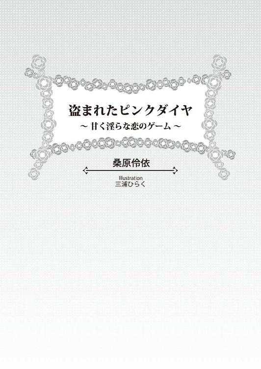
この作品は縦書きでレイアウトされています。
また、ご覧になる機種により、表示の差異が認められることがあります。
一部の漢字が簡略字で表示されていることがあります。
この作品はフィクションです。
実在の人物・団体・事件などに
一切関係ありません。
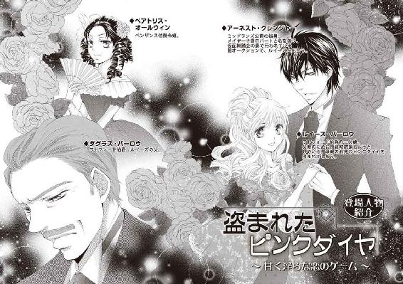
貴族の娘は十六歳から十八歳で社交界にデビューし、大人の女性として扱われるようになる。
美しく着飾った娘たちが、数多くの舞踏会や晩餐会へ出かけていくのは、少しでも条件のいい結婚相手を見つけるためだ。
しかし、ルイーズ・バーロウには、自ら結婚相手を探すことなど求められていない。彼女の十六歳の誕生日を祝うパーティーは、花婿候補の青年たちと引き合わされるお見合いパーティーでもある。
ルイーズの父、ワトフォード伯爵ダグラス・バーロウは、八年前に流行り病で最愛の妻シルヴィアに先立たれた。今でも亡き妻を深く愛している。ほかの女性と再婚することなど考えられないほどに──。
シルヴィアが亡くなったとき、ルイーズはまだ八歳のいとけない少女だった。
ワトフォード伯爵は、母を慕って泣く娘を宥め、諭し、愛情を注ぐことで、妻を亡くした喪失感を埋めることができたのだ。
シルヴィアの父ジョージ・アッシュフィールド卿も、一人娘の忘れ形見である孫娘ルイーズの行く末をひどく案じていた。
爵位とそれに付随する領地や財産を相続できるのは、初代の直系男系男子のみ。もしワトフォード伯爵が再婚して嫡男が生まれ、ルイーズが嫁ぐ前に亡くなってしまったら──同腹の兄弟がいないルイーズは困窮するだろう。
後妻や腹違いの弟が、ルイーズに相応の持参金をつけて嫁に出してくれればいいが、ジョージ卿がシルヴィアを伯爵家に嫁に出すとき与えた遺産さえ、勝手に奪い取って放り出す可能性がないとは言えない。そうなったときジョージ卿が存命であればいいが、落命した場合、彼が世襲した准男爵の称号と財産も、遠縁の男系男子が相続してしまう。
しかし、長年下院議員を努め、政治家として国の中枢で活躍し、退任するジョージ卿が新たに叙せられることになった伯爵位なら、唯一の直系子孫である孫娘に遺してやれるかもしれない。
そのために奔走した結果、ジョージ卿に与えられた開封特許状には、特別な継承規定が記載された。本来なら娘の子孫は爵位を相続できないが、ジョージ卿の爵位は、孫娘ルイーズの直系男系男子が相続する。直系男子が生まれる前に相続が発生した場合、ルイーズが暫定的に爵位を相続し、成人もしくは結婚するまで父親を後見人とする。ルイーズの直系男子が生まれたのちは、その子が成人して爵位を継承するまで、ルイーズとその配偶者を後見人とする。
ワトフォード伯爵は、代々祖父の爵位を子孫に引き継がせるため、実家の爵位を継承しない次男以下の余子を婿に迎えるよう、幼い頃からルイーズに言い聞かせてきた。
掌中の珠として育てたルイーズは、年を追うごとに美しく磨かれ、ダイヤモンドのように光り輝いていく。艶やかな淡い金髪の長く緩やかな巻き毛。青くきらめく澄んだ瞳。口角の上がった桜色の可愛らしい唇。優しげな顔立ち。たおやかな姿──すべてが、初めて出逢った頃のシルヴィアに生き写しだ。
命より大切な愛娘ルイーズは、とうとう今年の社交シーズンが始まる前に、結婚可能な一人前のレディとして、社交界デビューできる年齢を迎える。
だから正式に社交界の一員となる前に、ワトフォード伯爵自身が条件に会う花婿候補の青年たちを選りすぐり、十六歳の誕生日にお見合いさせることにしたのだ。
そろそろバースデーパーティーの開始時間が近づいてきた。
ワトフォード伯爵がルイーズの続き部屋を訪ねると、応対に出た部屋係の女性使用人が取り次ぎ、今日のために仕立てたドレスを着たルイーズが客間兼居間に現れる。
鮮やかなピンクのイブニングドレスをまとった姿は、さながら咲きかけのバラのように可憐だ。
ワトフォード伯爵は、眩しげに目を細めて口許を綻ばせた。
「とてもきれいだよ、ルイーズ。きっと花婿候補の青年たちは、一目でお前に夢中になるだろう」
ルイーズは父の賛辞に白い頬をほんのりと桜色に染め、はにかむように微笑んだ。
「お上手ね、お父様。お世辞でも嬉しいわ」
「お世辞じゃないさ。本当に、若い頃のシルヴィアを見ているようだ」
ワトフォード伯爵は、ビロード張りのジュエリーケースを捧げ持ち、ルイーズに差し出して言う。
「お誕生日おめでとう、ルイーズ。パーティーの前に、シルヴィアから預かっていたプレゼントを渡しておくよ」
ルイーズは恭しくジュエリーケースを受け取り、期待に胸を弾ませながら、ゆっくりと蓋を開けた。
ケースに収められていたのは、大粒の濃いピンクダイヤモンドをメインにあしらった、プラチナのティアラ、ネックレス、イヤリング、ブレスレット、リングの五点セットだ。
「これは......お母様の形見のパリュール......」
ワトフォード伯爵邸の家族の居間には、このパリュールを身につけたシルヴィアの肖像画がある。
母を慕って泣いていた幼いルイーズは、微笑む母の肖像画の前で、父の胸に抱かれてあやされていたのだ。
『私の可愛いルイーズ。お母様は神様に愛されて、天国に召されたのだ。もう絵姿でしか見ることはできない。彼女の温もりに触れることも、声を聞くこともできないけれど、彼女はいつでもそばにいて、私たちを見守ってくれている。目を閉じてごらん。お前の心の中にいる、お母様が見えるだろう？』
促されるまま目を閉じると、瞼の裏に母の面影が浮かんできた。
ルイーズの記憶の中で生きている母は、肖像画に描かれている白いドレスを着て、このパリュールを身につけて微笑んでいる。幸せそうに。
ワトフォード伯爵が、穏やかな優しい声でルイーズに語りかける。
「このピンクダイヤのパリュールは、シルヴィアが十六歳の誕生日に、彼女の父親から贈られた品だ。シルヴィアはこれを身につけて、社交界にデビューしたのだよ。お前がデビューするときも、これを身につけて行くといい」
「ありがとうございます、お父様。私、お母様のようなステキなレディになれるよう頑張ります」
シルヴィアは立ち居振る舞いの美しい、洗練されたレディだった。温和な性格で、声を荒げて怒ったことなど一度もない。
「お前は顔立ちも性格も、シルヴィアによく似ている。今でも充分ステキなレディだ」
ワトフォード伯爵は自慢げに微笑みながらそう言うけれど、ルイーズ自身は、母のようなレディになるには、まだまだ努力が必要だと感じている。
「嬉しいけど、褒めすぎよ、お父様」
「そうかな。私には、お前はピンクダイヤのように美しく輝く、世界一素晴らしいレディにしか見えないが」
「それは親の欲目じゃなくて？」
ルイーズの言葉に、ワトフォード伯爵は微かな苦笑を漏らす。
「欲目かどうかは、招待客の反応を見れば判るさ。ピンクダイヤのようなレディには、さぞかしこのパリュールが似合うだろう。早速今日のパーティーで、身につけて見せてくれないか」
「ええ、お父様」
「もうすぐパーティーが始まる。応接室で待っているよ」
そう言い残して部屋を出て行くワトフォード伯爵を、見送るルイーズの胸は期待と不安に高鳴っている。
ルイーズは敬愛する父の望みを叶えるために、父が望んだ婿に来てくれる相手──すなわち、今日出逢う青年たちの中の誰かと結婚するのだ。
結婚するなら両親のように、心から愛し合える相手がいい。
果たして、そんな相手に巡り逢えるだろうか？
あれこれ考えていると、緊張のあまり手足が震えてしまう。
ルイーズは侍女の手を借りて、母の形見のパリュールを身につけ、花婿候補の青年たちが待つ応接室へ向かった。
◆ ◆ ◆
一目で惹かれ合う運命的な出会いなんて、奇跡のようなものかもしれない。
バースデーパーティーで引き合わされた花婿候補の青年たちは、皆同じくらい立派な殿方ばかりで、順位などつけられなかった。
それは言い換えれば、『特別に心惹かれる相手がいなかった』という意味でもある。
ルイーズは誰も選ぶことができず、結局全員と交際してみて、それぞれの性格を見極め、一番相性がいいと感じた相手と婚約することになった。
そしてついに今日、ルイーズは若き女王陛下に初めて謁見し、社交界デビューを果たす王室主催の舞踏会──デビュタントボールに出席する。そのための白い豪華なドレスに身を包み、湧き上がる喜びに顔を綻ばせ、母の形見のジュエリーケースの蓋を開けた。
その瞬間、微笑んでいた唇が驚愕にわななき、悲痛な叫びを迸らせる。
「いやぁ────っっ！」
ルイーズの手から滑り落ちたケースの中に入っていたのは、母の形見のジュエリーではなく、一枚の小さなカードだった。
白いカードに描かれているのは、ギリシア神話に登場する青年神ヘルメスが持つカドケウスの杖と、『ＨＥＲＭＥＳ』というサイン。
ヘルメス──それは近年ロンドン中を騒がせている盗賊の名だ。資産価値のある名画やジュエリーなどの美術品を専門に狙う盗賊で、盗んだ品の代わりに、必ず自分の名刺を残していくらしい。
「どうした、ルイーズ!?」
悲鳴を聞いて駆けつけたワトフォード伯爵に、ルイーズは震える声で訴えた。
「......お母様のパリュールが......盗まれたの。ヘルメスに......」
「盗まれた......？」
ワトフォード伯爵も、まさかの事態に呆然と立ち尽くす。
盗まれたジュエリーは、稀少なピンクダイヤを使った豪華な逸品。時価十六万ポンドは下らないだろう。
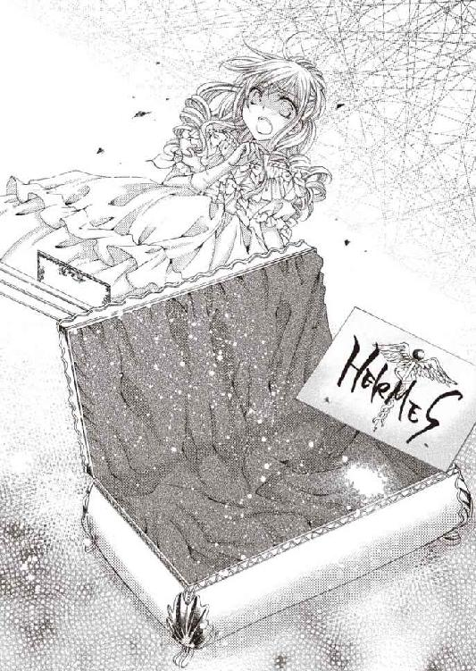
年収が十万ポンドを越えるイギリス貴族は、僅か十五人に過ぎない。平均的な貴族の年収は一万ポンドから五万ポンド──すなわち、このパリュールを売れば、数年は楽に暮らしていける。いかにも盗賊に狙われそうな、ジョージ卿がシルヴィアの持参金代わりに持たせた高価な財宝だ。
そして、遺族にとっては価格以上に、思い出という付加価値のほうが大きい。
「......どうして？ どうして選りに選って、お母様の形見を......っ！」
湧き上がる憤りを言葉にしたルイーズの瞳から、大粒の涙が零れ落ちる。
「返してよ......っ！ お母様の形見を......、大切な思い出の品を、返して......っっ！」
涙はやがて滝のように頬を伝い、青い瞳を深い哀しみの色に染めていく。
「お母様ぁ......っ！」
泣き叫ぶルイーズを、大きな温かい手がしっかりと抱きしめる。
「思い出の品が盗まれても、私たちの心から、シルヴィアの思い出が消えることはないよ」
ワトフォード伯爵が口にしたその言葉は、自分自身に言い聞かせるためのものだったかもしれない。
しかし、惑乱しているルイーズには、父の心情を察する余裕などなかった。
「あのパリュールは私にとって、お母様の記憶を呼び覚ます鍵なの！ あれを受け取った瞬間、はっきりと思い出せた！ 大好きだったお母様の匂いを！ 抱きしめてくれた温もりを！ 優しい瞳の輝きを......！ なのに......こんな形で、お母様の記憶につながる宝物を取り上げるなんて、神様はなんて無慈悲なの......！」
まるで頑是ない子供のように泣きじゃくるルイーズを、ワトフォード伯爵が優しく宥めて言い聞かせる。
「神様を悪く言ってはいけないよ。天国にいるシルヴィアも、お前がそんな様子では悲しむだろう」
「だって......お母様の形見が、盗まれたのよ！ お父様は、どうして取り乱さずにいられるの!?」
「信じているからだ。神様は、乗り越えられない試練など、お与えにならない。手を尽くして探せば、盗まれたパリュールが見つかるかもしれない。私はその可能性に賭けてみるつもりだ。今日のところは代わりのパリュールを用意するから、涙を拭いて。今夜は女王陛下にお目通りして、ご挨拶するのだからね」
もう、舞踏会に行きたい気分ではなくなっていた。
けれど、まさか女王陛下主催の舞踏会に、ルイーズを招待するよう命じられた王室家政官に、命に従い出席すると返信しておきながら、土壇場で欠席するわけにはいかない。
ルイーズは涙をこらえて支度を続けた。
ワトフォード伯爵が行方不明になったのは、盗難事件発覚後、一月あまり経ってからだ。
ルイーズは、舞踏会に出かけていくワトフォード伯爵を自宅で見送った。それが最後に見た父の姿だ。
舞踏会は、一般的に夜九時から深夜にかけて行われる催しで、帰宅は深夜から明け方になる。
父の帰りを待たずに就寝したルイーズは、翌日の明け方、供をした近侍エヴァンスだけが帰ってきたことを知らなかった。執事ハドソンが朝食の席で、ワトフォード伯爵が朝早く遠出したことを告げ、素直にそれを信じたのだが──なんとなく様子がおかしい。
ワトフォード伯爵は旅行中なのに、いつも供をしているエヴァンスが、暗い顔で肩を落として戻ってきては、またどこかへ出かけて行く。こんなことは、かつて一度もなかった。
嫌な想像ばかりが脳裏を駆け巡る。
「お父様は、本当にご旅行？ 従者は誰？ もしかして......お怪我やご病気で動けなくなって、帰れずにいるのではなくて？」
ルイーズはハドソンを問い質したが、代わり映えのしない曖昧な答えではぐらかされてしまう。
疑念を払えず、それとなく使用人たちの様子をうかがっていると、夜遅く戻ったエヴァンスと、従者が出入する裏口で出迎えた家令と執事が、ただならぬ様子で密談し始めた。
「美術品愛好家クラブは、やはり知らぬ存ぜぬの一点張りです。しかし、私が従者の控えの間で待っていた間に、あそこで何かあったとしか思えません」
エヴァンスは憤りもあらわにそう言い、家令レイモンドが難しい顔で相槌を打つ。
「ああ。旦那様はあの日、招待された特別会員になりすまして、闇オークション会場に潜入なさった。そこでなんらかの事件が起きて、失踪したと考えるのが妥当だろう」
執事ハドソンも、心配そうに疑惑を口にする。
「もしかして美術品愛好家クラブは、ヘルメスとつながりがあるのではないでしょうか？ 旦那様は、かなり危ない橋を渡られたのでは......？」
使用人たちが利用している階段室から密談現場を盗み見ていたルイーズは、漏れ聞こえてきた三人の上級使用人の会話に驚き、駆け寄ってどういうことか問い詰めた。
使用人たちは、これ以上隠し通せぬと判断したようだ。最高位の使用人である家令レイモンドが、代表して真相を語った。
「ヘルメスによる盗難事件が発覚した直後から、旦那様はあちこちの社交場を渡り歩いて、盗品ブローカーの情報を集め──ある噂を耳にしたそうです」
それは、『アートラバークラブという会員制社交クラブで、月に一度、盗品を扱う闇オークションを開催している』という噂だ。
ワトフォード伯爵は美術品愛好家クラブに入会し、足繁く通って、親しくなった会員から、闇オークションに関する情報を聞き出した。
『美術品愛好家クラブ主催の闇オークションは、マスクドボールを隠れ蓑にして開催されている。オークション会場には、招待された特別会員しか入れない』
マスクドボールは、参加者が仮面をつけて出席する舞踏会。自分が誰か名乗る必要はない。人目をはばかるオークションの隠れ蓑にするには、打って付けの催しだろう。
情報を流してくれた会員は、特別会員限定オークションの招待状を持っている。しかし、金銭的に困窮し、クラブを退会することを考え始めていたらしい。
ワトフォード伯爵は、その会員から招待状を買い取って闇オークション会場に潜入し、そのまま消息を絶った。
供をしたエヴァンスは、クラブハウスをあちこち探し回ったが、ワトフォード伯爵の姿はどこにもない。
スタッフに主人の行方を訊ねても、『本日お越しのお客様は、すでにお帰りになりました』という答えが返ってくるばかり。
まさかと思いつつ、ワトフォード伯爵邸に戻ってみたが、やはり主人は帰宅していない。
その後何度もクラブハウスへ足を運んで主人を捜し──クラブ会員のもとを訪ねてワトフォード伯爵の目撃談を聞いて回ったが、主人の足取りは、舞踏室で途絶えたまま。
すでに失踪から、一週間あまり経っている。
レイモンドは険しい顔でルイーズに告げた。
「旦那様の行方を探す手がかりは、美術品愛好家クラブ主催のマスクドボールだけ。しかし、正面から訊ねても、真実など聞けそうにありません。今度は面が割れていないハドソンをマスクドボールに潜り込ませて、内部情報を探らせます」
「私も行きます！ 連れて行って、ハドソン！」
ルイーズは縋る思いで訴えたが、初老の執事は困った顔で拒絶する。
「無理をおっしゃらないでください。私が旦那様に叱られてしまいます」
「お父様が心配なの！ 何もせずに待っているだけなんてイヤ！」
「お気持ちは判りますが、ここは我々にお任せください」
レイモンドにも同行を止められたが、ルイーズは自責の念に駆られ、いても立ってもいられない心境だ。
（......お父様が行方不明になったのは、きっと私のせいよ......）
母の形見のジュエリーが盗まれたことに気づいたとき、取り乱して嘆き悲しむルイーズに、父は言った。神の慈悲を信じ、盗まれたパリュールが見つかる可能性に賭けると。
盗品を取り戻すなんて、そう簡単にできることではあるまい。危険と背中合わせの行為だと、どうして気づかなかったのか──。
母の形見を諦め切れなかった娘の妄執が、父に無理をさせてしまったに違いない。
（今度は私が、お父様を探しに行くわ......！）
ルイーズは上級使用人たちの諌めに応じたふりをして、一計を謀った。
貴族は日に何度も衣装を着替える。
ルイーズの衣装選びや着付け、髪結いを施すのは、侍女イレーヌの仕事だ。
ルイーズは、イレーヌと二人きりになったとき、こっそり聞いてみた。
「イレーヌ。花婿候補の殿方の中に、美術品愛好家クラブの会員はいらっしゃる？」
「私は存じませんが、ミスター・ハドソンなら判るかもしれません」
ワトフォード伯爵が失踪した事実を知っているのは、ルイーズと三人の上級使用人だけ。主人の失踪を知れば使用人たちが動揺するから、無闇にそれを話さないよう、家令レイモンドに言い含められている。
「ハドソンに聞いてはダメよ。今は事情を話せないけど、うちの者には内緒で、美術品愛好家クラブ主催のマスクドボールに行ってみたいの。ほかの方法で調べられるかしら？」
「はい、お嬢様。バースデーパーティーのとき、花婿候補の皆様の近侍と親睦を深めておきました。そちらからさりげなく探りを入れてみましょう。お嬢様が美術品愛好家クラブのマスクドボールに参加したいと望まれていることを、それとなく匂わせて参ります」
忠実な侍女イレーヌは、すぐ行動に移し、花婿候補の一人──ワトフォード伯爵の遠縁にあたる分家のチャールズ・バーロウから、マスクドボールの誘いを取り付けて来た。
舞踏会に参加するとき、普通は男性側が女性を迎えに来るものだ。
しかし、ルイーズは上級使用人たちの目を欺くため、自分が馬車で花婿候補チャールズ・バーロウが住む、分家のロンドン邸へ向かうことにした。
マスクドボール開催日──ワトフォード伯爵家の執事ハドソンは、昼過ぎには、伯爵家の紋章が入っていないお忍び用の四頭立て四輪箱馬車で屋敷を出た。
ルイーズも夕方早く、侍女イレーヌを連れて、分家のロンドン邸へ向かった。
ルイーズの馬車を操る御者と、馬車を追いかけて走る供回りの従僕は、馬車ごと分家のロンドン邸で待たせておく手筈になっている。
「急にこんなお願いをしてごめんなさい。マスクドボールに参加することは、家の者には内緒にしたいの」
ルイーズがそう言うと、分家のチャールズは朗らかに笑った。
「レディ・ルイーズはお祖父さまの伯爵位を暫定的に相続されている、深窓の伯爵令嬢。マスクドボールのような、誰が来ているか判らない怪しげなパーティーに参加するなんて、周りの者から止められても無理はない。しかし、一度は行ってみたいという、あなたのお気持ちもよく解ります。今夜は楽しみましょう」
分家のチャールズは三十歳で、十六歳のルイーズが結婚相手として意識するには大人すぎるが、親戚として付き合うには好感が持てる穏やかな人だ。こんな優しい方を騙すのは気が引ける。
「なんだか緊張して、胸がドキドキしています」
緊張のあまり動悸がするのは、マスクドボールの裏で開催されている、闇オークションについて探ろうとしているからだ。
分家の四輪箱馬車でクラブハウスに到着し、ルイーズはバラのコサージュがついた銀の仮面を、チャールズは両目以外をすべて覆う道化のような仮面をつけ、きらびやかな仮装をした男女に紛れて舞踏室へ移動した。
この怪しい群衆の中に、ハドソンも紛れ込んでいるはずだ。
ルイーズはチャールズにダンスを申し込まれ、ハドソンに気づかれやしないかと、薄氷を踏む思いでワルツを踊った。
ここへは踊りに来たわけでも、花婿候補のチャールズと交際するために来たわけでもない。
曲が終わると、ルイーズは化粧室へ行くふりをしてチャールズと別れ、闇オークション会場への入口を捜し歩いた。
カーテンで覆われた壁にドアがついている。
そっとドアノブを回してみると、隠されていた秘密のドアが開いた。
ドアの向こう側には、長いＴ字廊下がある。その分岐点の一方には、関係者以外立ち入り禁止の標識をつけた衝立が置かれ、もう一方の突き当りには廊室があった。
廊室の奥には、両脇に番人が立っているドアがあるけれど、ルイーズは闇オークションの招待状を持っていないので、ここから先へは進めない。
どうしたものかと思案しながら、衝立の陰に身を潜めて様子をうかがっていると、カーテンで隠されていたドアの向こう側から、金で縁取られた紫色の羽根つき帽子を被った白い顔の仮面を着けた男が現れた。
男は一人で、こちらへ向かって歩いてくる。目以外は仮面で覆われていて見えないが、姿勢のいい立ち姿や、上品で軽快な動作からして、おそらく上流階級の若い男だろう。
進行方向から察するに、目的地は番人のいるドアの向こう側。
（あの人の連れのふりをして、一緒に中へ入れないかしら？）
もし見咎められても、館内で迷ってついていったことにすれば、うまくごまかせるかもしれない。
ルイーズは何食わぬ顔で、こっそり男についていった。
◆ ◆ ◆
ペンザンス伯爵のロンドン邸から、二台の馬車が出発した。
前を行く四頭立ての豪奢な四輪箱馬車に乗っているのは、ペンザンス伯爵の嫡男──オールウィン子爵コンラッド・オールウィンと、その婚約者であるベネット男爵令嬢マデリン。そしてペンザンス伯爵邸に滞在している賓客──メイヤー子爵ロバート・メイヤーと、ペンザンス伯爵令嬢ベアトリス。
後続のやや質素な箱馬車に乗っているのは、彼らの従者たちだ。
この一行の向かう先は、美術品愛好家クラブのマスクドボール。
今年社交界デビューしたベアトリスは、嬉しげに頬を染めてはしゃいでいる。
「私、マスクドボールに参加するのは初めてですの。お誘いいただいて嬉しいですわ、ロード・メイヤー」
話しかけられたメイヤー子爵は、愛想笑いを浮かべて答えた。
「こちらこそ。魅力的なレディをエスコートできて嬉しいですよ」
というのは方便で、実はオールウィン子爵の仲立ちで、ベアトリスを誘わざるを得なくなっただけ。本音を言えば、一人で参加したかった。
舞踏会や晩餐会などのパーティーは、恋人や配偶者、または家族とのカップル参加が原則だが、美術品愛好家クラブのマスクドボールは、会員一人で参加することもできる。
男女の比率が違っても差し支えないよう、主催者が一人で来た会員のために接待役を雇っている──というのは表向きで、実は舞踏室を抜け出す者の代わりに、館員控室から出てきて場を盛り上げる紳士淑女がいるらしい。
舞踏室から美術品展示場、喫煙室、撞球室、社交室、談話室、図書室などに移動する者もいるが、抜け出す者の多くは、マスクドボールの裏で開催されている闇オークション会場へ行く。メイヤー子爵もその一人。
そもそも彼がペンザンス伯爵一家に近づいたのは、闇オークション会場に潜り込むため。
事の発端は、遡ること一月ほど前に起こった。巷を騒がせている盗賊ヘルメスが、ミッドランズ公爵家に侵入し、二つのジュエリーを盗んだのだ。
その一つは、アレキサンドライトをあしらった金細工のブローチ。意匠を凝らしたデザインも素晴らしいが、使われている宝石がその価値を高めている。
アレキサンドライトは十余年前、ロシアで発見されたクリソベリルの変種で、昼の陽光の下ではエメラルドのように清々しく、夜の灯に照らされればルビーのように妖しく輝く変光性の稀有な宝石だ。ミッドランズ公爵のブローチに使われているアレキサンドライトは、変色効果・大きさともに一級品。なかなか手に入る代物ではない。
もう一つは、ラピスラズリのシグネットリング。ミッドランズ公爵が書いた文書だと証明する印痕を付ける、大切な印章指輪だ。これだけは、公爵家の威信にかけて、なんとしても取り戻さなければならない。
ヘルメスが盗んだ品は、どういうルートで売り捌かれているのだろう？
盗品と発覚するリスクを避けるには、外国に持ち込むのが一番だが、貿易船の発着港を始め、国外へ持ち込むルートは警察が捜査しているはず。
ミッドランズ公爵の嫡男は、国内での盗品売買ルートについて探りを入れ、美術品愛好家クラブが定期的にマスクドボールを催し、それを隠れ蓑にして盗品の闇オークションを開いているという情報をつかんだ。
闇オークションに参加できるのは、招待状を持っている特別会員と、その同伴者だけ。
そして情報提供者は、ペンザンス伯爵が、美術品愛好家クラブの特別会員であることを教えてくれた。
貴族の秘密を探る捜査となると、労働者階級の警察官には難しいかもしれない。
嫡男からそう報告を受けたミッドランズ公爵は、速やかに事件を解決するため、女王陛下に『私設警察隊の発足と、盗品売買組織への潜入捜査』を願い出た。
ヘルメスの盗難被害に遭った王侯貴族は数多い。暗躍する盗賊に頭を悩ませていた女王陛下は、『事件解決まで私設警察隊の設立を許可する。盗品売買組織に潜入し、盗賊ヘルメスの正体を暴き、関係者を逮捕して、盗品を捜索せよ』と命ずる封緘特許状を下された。
盗品売買容疑がかかっているペンザンス伯爵には、今年社交界デビューした娘がいる。
そこでミッドランズ公爵の嫡男バーミンガム侯爵アーネスト・グレンジャーは、素性を隠して潜入捜査するため、遠縁にあたるバーンズリー伯爵の嫡男の儀礼称号と名前を借り、メイヤー子爵ロバート・メイヤーとして、ペンザンス伯爵一家との接触を図った。
社交界には、アーネストを見知っている者も多いが、メイヤー子爵ロバートとは、顔立ちや年恰好がよく似ている。しかも、生まれたときから病弱だったメイヤー子爵は、社交界にあまり顔を出していないので、別人だと見抜ける者は少ない。
「バーミンガム侯爵は遠い親戚です。そんなに似ていますか？」
そう言ってごまかせば、上手く騙しおおせる。
アーネストはメイヤー子爵を装って、オールウィン子爵にエスコートされて舞踏会に来ていたベアトリスに、ダンスを申し込んだ。
ミッドランズ公爵と縁続きで、ペンザンス伯爵より古い家柄の、バーンズリー伯爵の法定推定相続人であるメイヤー子爵は、ベアトリスの結婚相手として申し分ない相手だろう。
ベアトリスはメイヤー子爵を気に入った様子で、兄オールウィン子爵に紹介した。
メイヤー子爵は、ベアトリスと一定の距離感を保ちながら、オールウィン子爵と親交を深め──ペンザンス伯爵とその家族が、八月上旬までの社交シーズンを過ごすロンドン邸に招かれ、しばらくそこに滞在することになったのだ。
美術品愛好家クラブには、オールウィン子爵の紹介で入会した。
上流階級・中流階級の男性のみを会員とする美術品愛好家クラブでは、美術商・宝石商を営んでいる代表者が、週代わりで絵画や宝飾品を展示販売している。裕福な会員は気に入った作品があれば購入し、展示場に出品している芸術家はここでパトロンを探す。
下層中流階級に位置する弁護士・医師・宗教家・芸術家・将校・大学教授といった専門職の紳士や軍人も、一般会員としてなら入会できるが、闇オークションに参加できる特別会員にはなれない。
特別会員の入会資格は、クラブと取引している銀行に預金口座を作り、千ポンド以上の預金残高を維持できること。
一万エーカー以上の領地を持つ貴族階級なら、それは容易い。
しかし、男爵の下に位置する下級地主階級が所有する領地の平均的な面積は三千エーカー程度だ。ざっと換算して、年収は三千ポンドくらいだろう。平均的な平民領主が、オークションに参加して、千ポンド以上の預金残高を維持し続けるのは厳しいかもしれない。
商工業で富を得た資本家階級は、平民領主の最低年収である千ポンド以上の年収を得ることも可能らしいが──闇オークションに参加し続けられるのは、おそらく一握りの成功者だけ。
特別会員の入会資格である決済用預金口座の残高は、闇オークションでの入札限度額となる。出品物が落札され次第、すぐに決済用口座から、口座振替で出品者に送金されるシステムになっているそうだ。
特別会員になってオークションに参加するには、入会資格を満たしていることを保証する、既存の特別会員からの推薦が必要不可欠。
メイヤー子爵を騙るアーネストは、ペンザンス伯爵に、さりげなくジュエリーのマニアなコレクターであること、金に糸目をつけず、レアストーンを収集できる財力があることをアピールした。
すると思惑通り、ペンザンス伯爵が、美術品愛好家クラブの特別会員制度の話題を振ってきたのだ。
月に一度のマスクドボール開催日に行われている闇オークションは、表向きは、『クラブハウスで展示販売する前の名画や宝飾品を、特別会員のみを対象としたオークションに出品する』という触れ込みになっている。
ヨーロッパのオークションはサザビーズ方式が一般的だ。不正に値を吊り上げることがないよう、落札できなくても、入札者は入札額を支払わなければならない。入札金額の合計から、その額に応じた手数料を差し引いた金額が出品者に支払われる。
しかし、美術品愛好家クラブの闇オークションでは、落札できなかった入札者が支払った金はクラブの口座にプールされ、次回、落札できたときに相殺される形で入札者に還元される。
主催者は『サザビーズ方式より、入札者に対して良心的なシステムだ』と主張しているが、実はこれが顧客を逃さないための餌なのだ。落札に失敗した者の中には、『すでに支払っている金が、次回落札できたときに繰り戻される』という謳い文句に踊らされ、借金してでも決済用口座に金を補充し、次回の入札に挑む者もいる。
アーネストに情報を提供してくれたのは、こういう流れで身を持ち崩した元特別会員だ。
内心胡散臭いと感じながらも、アーネストはメイヤー子爵ロバート名義で大口預金し、美術品愛好家クラブの特別会員になった。
今回のオークションに、ペンザンス伯爵は参加しない。伯爵夫人とともに、知人に招待された晩餐会に出席するそうだ。
もう案内人など必要ないので、むしろ一人のほうが動きやすい。
しかし、オールウィン子爵が『メイヤー子爵と妹の仲立ちをしよう』と張り切っていたため、こうしてベアトリス同伴でマスクドボールに参加する羽目になってしまったわけだ。
オールウィン家の馬車がクラブハウスに到着し、マスクドボールに参加する二組のカップルが、仮面をつけて館内へ入っていく。
アーネストは逸る気持ちを抑え、ベアトリスを舞踏会に誘った義理を果たすため、ダンスを申し込んだ。
とりあえず一曲だけお相手して、「喫煙室で一服する」という口実でベアトリスと別れ、今夜ここへ来た目的の場所へ向かう。
カーテンで覆い隠された秘密のドアを開け、長いＴ字廊下を直進した突き当りの廊室に、闇オークション会場への入口がある。
アーネストは番人に招待状を渡し、そこに書かれている特別会員番号で受付をすませた。
「二名様ですね。どうぞ、お入りください」
二名と言われてギョッとした。まさかベアトリスが付いてきたのか？
さりげなく振り返ってみると、目許を覆う銀の仮面をつけた、艶やかな淡い金髪の少女が後ろに立っていた。顔は見えないが、服装にもまったく見覚えがない。
この少女、何者だ!?
いつから彼女が後ろにいたのか判らないとは──なんたる不覚。父に大見得切って出てきた初めての潜入捜査に緊張して、注意力が散漫になっていたのだろう。
見知らぬ少女は愛らしい唇を綻ばせ、親しげにアーネストの腕を取る。
「早く行きましょう」
いかにも同伴者だと言わんばかりの態度に当惑したが、下手に騒ぎを起こして、番人に引きとめられたくない。
アーネストは仕方なく、見知らぬ少女を伴ってドアの向こうの小部屋へ入った。
この部屋にドアは一つしかないが、奥の壁に設置されている大きな姿見が隠し扉になっている。
隠し扉を開ける前に、声をひそめて少女に聞いてみた。
「お前は誰だ？ なぜ私についてきた？」
少女は険のある声に怯えた様子で、震えるようなか細い声を絞り出す。
「......どうしても、中へ入りたかったの」
「ここがどういう場所か知っているのか？」
「知っています。私は......ここで行方不明になった父を探しているんです」
つまり父親は、美術品愛好家クラブの特別会員。叩けば埃が出る身だろう。
「父親は、金にあかせて手段を問わない美術品のコレクターか？ それとも、訳ありの品を外国で売り捌くバイヤー、もしくはジュエリーリフォーム業者か？」
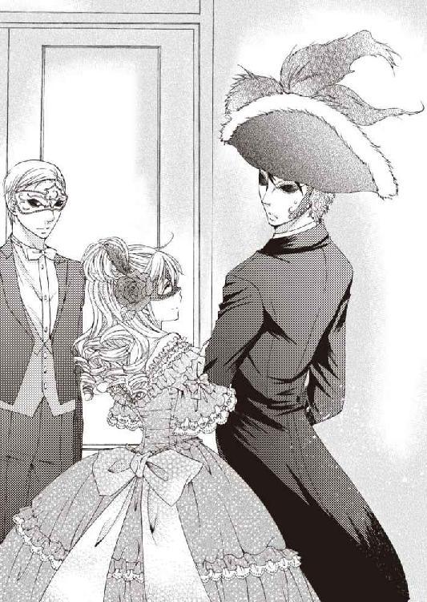
「違います！ 父が探していたのは、ヘルメスに盗まれた、母の形見のピンクダイヤのパリュールよ。父はここで定期的に闇オークションが開催されているという噂を聞いて、美術品愛好家クラブの会員になって、マスクドボールへ行ったまま帰ってこないの」
自分と似たような立場──いや、もっと気の毒かもしれない状況にあると知って、侮蔑的な感情が同情に変わった。
「それで？ こんなところまで乗り込んで、君はどうするつもりだ？」
「オークションの主催者に会って、父のことや、盗まれたピンクダイヤのパリュールのことを聞きたいの」
「そんなことをしたら、父親の二の舞になるだけだ。下手をすれば、明日にでもテムズ川に浮かぶことになるだろう」
「......お父様が、テムズ川に浮かんでいると......？」
銀の仮面から覗いている、ブルートパーズのような青い瞳が潤んでいる。今にも泣きだしそうなほど──。
「それは言葉の綾だ。ここまで来てしまった以上、君も会場に連れて行く。だが、絶対におとなしくしていてくれ。お父上が心配な気持ちは解るが、くれぐれも勝手な真似をして、騒ぎを起こすんじゃないぞ。約束できるな？」
厳しく言い含めると、少女は素直に「イエス」と頷いた。
姿見の金細工のフレームに隠されている、隠し扉のスイッチを押す。
隠し扉の向こうには、今日オークションにかけられる出品物の展示場が続いている。
出品物は一週間前から展示され、前日まで予約制で個別に閲覧できる仕組みになっていた。そこで予め目当ての品を物色した特別会員は、決済用口座に予想落札価格に見合う額の預金をして、オークションに挑む。
残念ながら、ミッドランズ公爵のシグネットリングはなかったが、アレキサンドライトをあしらった金細工のブローチは、仕立て直されることなく、今日の目玉として出品されていた。おそらくデザインが美しいことや、昼の色と夜の色を同時に展示できないことから、わざと来歴が判るように、そのまま出品したのだろう。
アーネストは銀の仮面をつけた少女とカップルを装い、もう一度展示場を回った。すでに何度も見に来ているが、初めてここへ来た彼女は、母の形見のジュエリーがないか、自分の目で確認したいに違いないと思ったから。
しばらくして、少女が愛らしく小首を傾げてアーネストに囁いた。
「......ねえ。展示品の紹介カードに書かれている、『Ｖ』『Ｕ』『Ｒ』『Ｓ』という記号は何？」
アーネストは少女の耳元に唇を寄せ、微かな声で答える。
「ＶはＶＩＲＧＩＮ──新品の頭文字で、ＵはＵＳＥＤ──誰かが使用していた中古品。ＲはＲＥＦＯＲＭ──仕立て直した品。Ｓは訳ありのＳＴＯＬＥＮＧＯＯＤＳ──盗品だ」
「......盗品が、こんなにあるの......？」
盗品の数は、展示品の半数以上。よくもこれだけ集めたものだ。
すべてヘルメスが盗んだ品とは限らないが、このまま奴を野放しにしておくわけにはいかない。
アーネストは腹の中で毒づいた。
（盗賊風情がヘルメスなどと、片腹痛い。神にでもなったつもりか。草の根分けても探し出し、必ずこの手で逮捕してみせるぞ。首を洗って待っていろ、ヘルメス！）
◆ ◆ ◆
闇オークションの出品物を見て回って、ルイーズは落胆した。
母の形見のジュエリーは出品されていない。仕立て直して出品されることもあるようだが、濃いピンクダイヤ自体が出品されていなかったのだ。
もしかしたら、先月、先々月のオークションに出品され、すでに落札されてしまったのかもしれない。
あるいは、ここではなく、別の場所で取引された可能性もある。
ちなみに今日の目玉商品は、十カラットを超えるアレキサンドライトをあしらった、美しい金細工のブローチ。
アレキサンドライトを見るのは初めてだ。今は紫を帯びたルビーのような赤い色をしているが、本当に見本の絵のように、太陽の光の下ではエメラルドのような緑に変わるのだろうか？
展示場にはほかの参加者もいるが、誰もが仮面をつけているので、素姓は判らない。
出品物を吟味しながら順路を辿って奥へ進むと、オークション会場へ辿り着いた。
会場に人が集まり、席が埋まってきたところで、司会の男が声をかける。
「ノーブルマン・アンド・ジェントルマン！ 只今より、オークションを開始します」
出品物が紹介され、次々と落札されていく。
参加者が札を上げると、開始価格によって、五百ポンド、千ボンドといった単位で入札価格が上がるようだ。
最後に、今日の目玉商品がオークションにかけられ、ルイーズの隣にいる連れの男も、初めて入札に参加した。
開始価格は千ポンドだったのに、入札が殺到し、どんどん価格が跳ね上がる。
「一万二千ポンド！ これ以上はございませんか？」
最終的には貴族の年収並みの価格で、連れの男が目玉商品を落札したのだ。
ルイーズは思わずムッとした。
（金にあかせて手段を問わない美術品のコレクターって、あなたのことじゃない）
隠し扉がある小部屋で、そう言ってルイーズの父を侮辱したくせに──盗品にこんな大金をつぎ込むなんて、呆れてしまう。
しかし、不用意な言動で揉めたくないので口を噤んだ。
連れの男は、支払い手続きをして落札商品を受け取るため、別室へ通された。
どうやらルイーズも同席できるらしい。
目玉商品を高額落札したためか、オークション主催者である美術品愛好家クラブ代表者が挨拶に来た。
「ロード・メイヤー。本日は真にありがとうございます」
メイヤー卿と呼ばれたということは、彼はおそらく爵位を持つ貴族。もしくは伯爵以上の爵位を相続する可能性がある人物だろう。
メイヤー卿は仮面を外して素顔を見せた。
予想以上に若い。二十代前半くらいだろうか？
前髪と襟足が長めの、さらさらした直毛の黒髪。きりりと釣り上がった凛々しい眉。目尻が切れ上がった怜悧な濃褐色の瞳。筋の通った形のいい鼻。やや薄めの男らしい唇──意志の強そうな、とても端正な顔立ちをしている。
外見だけで言うならば、こんな素敵な殿方は、ルイーズの花婿候補の中にはいない。
メイヤー卿は機嫌よさげに笑いながら言う。
「今日はいい買い物をした。一目見たときから、絶対にこのブローチを競り落とすと決めていたのだ。アレキサンドライトは大粒の一級品。ただでさえ珍しいジュエルなのに、この品質で、この大きさとなると滅多に出ないレアものだ。金細工も精巧で素晴らしい。まさかこんなジュエリーに巡り逢えるとは思わなかった。入会して正解だったよ」
「ありがとうございます。こちらはＳマークつきの商品ですので......」
「承知している。迂闊にパーティーなどで身に付けようとは思っておらぬ」
メイヤー卿は、オークション主催者と会話しながら、決済用の書類にサインした。
このままでは、父の行方も、母の形見のジュエリーの所在も、手がかりすらつかめないまま帰ることになりそうだ。
「あの......」
おとなしくしていろ。勝手な真似をするなと言い含められていたけれど、ルイーズは主催者に声をかけずにはいられなかった。
しかし、メイヤー卿がルイーズの手を強くつかんで制止する。
力の強さで怒気が伝わってきたから、ルイーズはそれ以上何も言えなくなった。
代わりにメイヤー卿が、主催者に訊ねた。
「実は彼女にピンクダイヤの指輪を贈る約束をしているのだが、彼女が喜びそうなピンクダイヤが出回る予定はないだろうか？」
「ピンクダイヤでございますか？ 先々月なら、ファンシーインテンスピンクダイヤをあしらった、プラチナのティアラ・ネックレス・イヤリング・ブレスレット・リングの素晴らしいパリュールが出品されていたのですが......今のところ、扱う予定はございません」
先々月というと、母の形見のピンクダイヤのパリュールが盗まれた時期と一致する。
「もし良質のピンクダイヤが出回るようなら、必ず教えてくれ。必要とあらばリフォームするから、最高級のジュエリーであれば、どういった来歴のものでも構わない」
「畏まりました。上質なピンクダイヤを探してみましょう。見つかり次第、必ずご連絡を差し上げます」
「よろしく頼む」
落札したジュエリーを受け取ったメイヤー卿は、再び仮面を着け、ルイーズを促して廊下へ出た。
進路を指示する標識に従って歩きながら、メイヤー卿が素早く辺りを見回し、人気がないのを確かめた上で、潜めた声で隣を歩くルイーズを叱りつける。
「横から口を挟むな。おとなしくしていろと言ったはずだが」
「......だって、オークションの主催者に会えたのよ。聞きたいことは山ほど......」
「だってじゃない！ 相手は危険な連中と関わっている盗品オークションの主催者だぞ。ストレートに聞いてどうする。我々は、こうして無事にあそこから出られたが......君の父上はどうなった？」
父はこのクラブハウスで行方不明になってしまった。生きているのか、無事でいるのかも判らない状態だ。
思わず涙ぐんだルイーズを見て、メイヤー卿が後悔の滲む声で言う。
「......思いやりのない言い方をして悪かった。私も、どうしても取り戻さねばならないものがあるから、焦って気が立っているのだ」
「取り戻さねばならないもの？」
「ああ。私の目的は、君の父上と同じだよ。今日落札したブローチは、私の家から盗まれたものだ。そしてもうひとつ、もっと大切なものが盗まれている。それを探すために、美術品愛好家クラブの特別会員になった」
それを聞いて、ルイーズの胸に共感めいた感情が湧き上がる。
（盗品と知りながら、大金をつぎ込んで競り落とすなんて、呆れた人だと思ったけど──彼にも深い事情があったのね。アレキサンドライトのジュエリーより大切なものだなんて、よほど高価な財宝か、思い入れのある品が盗まれたのかしら......？）
「大切なもの、早く見つかるといいですね」
大事な宝物が盗まれたときの悲しさを知っているから、ルイーズは心からそう告げた。
メイヤー卿はルイーズの瞳をじっと見つめて沈黙し、少し考え込んで言う。
「当家の盗まれた品を捜すついでに、君の父上や、母上の形見のジュエリーのことも気にかけておこう。父上の名は？」
ルイーズは仮面を外し、素顔を見せて微笑みながら名を告げる。
「ワトフォード伯爵ダグラス・バーロウです。私はルイーズ」
するとメイヤー卿も、仮面を外して名乗った。
「レディ・ルイーズ。私はメイヤー子爵。ロバート・メイヤーです」
爵位の前に冠詞の『ザ』が付いていない。ということは、彼は儀礼称号メイヤー子爵を名乗る、伯爵以上の爵位の法定推定相続人。
メイヤー子爵が再び仮面をつけて言う。
「大丈夫。お父上も、お母上の形見も、きっとすぐに見つかりますよ。何か情報が得られたら、ワトフォード伯爵邸へ知らせに行きましょう」
「ありがとうございます、ロード・メイヤー。どうぞよろしくお願いします」
そう言って深く頭を下げ、ルイーズも仮面をつけなおす。
（最初は怖い人だと思ったけど、案外好い人みたい......）
叱られたのは、世間知らずなルイーズが、無防備に危険な真似をしようとしたからだ。
少なくとも彼は、主催者に話しかけようとしたルイーズを止めた代わりに、聞きたかったことの一つ、ピンクダイヤのジュエリーに関して、それとなく探りを入れてくれた。あのまま放っておくこともできたのに──。
それに、出逢ったときは不審者としか思われていなかったが、行方不明の父親を探しに来た伯爵令嬢と判った今は、それなりの敬意を払ってくれている。
二人肩を並べて順路に沿って歩いた帰路は、オークション会場の入口がある小部屋ではなく、関係者以外立ち入り禁止の衝立があったＴ字廊下に続いていた。
カーテンに隠された秘密のドアの向こう側へ戻ると、メイヤー子爵がルイーズに手を差し伸べて言う。
「今夜お会いした記念に、一曲お相手願えますか、レディ・ルイーズ」
「ええ。喜んで」
ルイーズはメイヤー子爵とともに、仮面をつけて踊る人々の群れへ紛れ込んだ。
母の形見を盗まれて塞ぎこんでいたデビュタントボールでは、少しもダンスを楽しむ気分になれなかった。
その後今日まで気鬱のまま、ずっと華やかな場所へ行くことを避けていたし。今夜ここでチャールズと踊ったときも、闇オークションについて探ることで頭がいっぱいで、心ここにあらず。ただ機械的にステップを踏んでいただけだ。
しかし、盗まれたブローチを取り戻したメイヤー子爵の言葉が、ルイーズの心を少し軽くしてくれた。
『大丈夫。お父上も、お母上の形見も、きっとすぐに見つかりますよ』
盗まれた品を探し出し、取り戻すなんて奇跡のようなことだ。何の根拠もないが、自身の力で奇跡を起こしたメイヤー子爵にそう言われたら、取り戻せると信じて諦めなければ、必ず奇跡は起こるような気がする。
実際には、まだ何も解決していないけれど、心に光が差してきたような心地で、ルイーズは久しぶりに、ダンスを楽しむことができた。
本当は、こうして暢気に踊っている場合ではない。理由を話して止められたり、巻き込んだりしたくなかったから、こっそりオークション会場へ向かったのだが──こんなに長時間席を外すことになって、チャールズが心配しているだろう。
（早くチャールズのところへ戻らないと......）
そう思いながらもルイーズは、この曲が少しでも長く続くことを願った。
ワトフォード伯爵が闇オークションの会場に潜入して、行方不明になっていることは、なるべく伏せておくべきだ。それが家令レイモンドの方針で、対外的には、『旅先で体調を崩して療養中』と、口裏を合わせることになった。
その上で、できるだけ早急に、ワトフォード伯爵の行方を捜さなければならない。
ルイーズは父の名代として、花婿候補の青年たちと、積極的に社交場へ出かけることにした。
その際、従者の一人に執事ハドソンを加え、父が消息を絶った日の、美術品愛好家クラブのマスクドボールに関する情報を集めさせている。
若い近侍エヴァンスと違って、ハドソンは従僕から叩き上げて執事になった、古くからワトフォード伯爵家に仕えている使用人。メイヤー子爵のように上手く立ち回って、こちらの手の内を見せずに探りを入れてくれるはず。
ルイーズは、今夜は美術品愛好家クラブの会員でもある父の友人──カノック伯爵のロンドン邸で開かれる舞踏会に、二十五歳の姻族レナードと出席した。
カノック伯爵邸の舞踏室には、見覚えのある貴公子が──もう一度逢えたらいいと、秘かに思っていたメイヤー子爵がいた。一人ではなく、同年代の貴公子と、二人の令嬢が一緒だ。
メイヤー子爵と目が合って、微笑みかけたが反応がない。
ルイーズが彼らを見ていることに気づいたカノック伯爵夫人が、気を利かせて彼らに引き合わせてくれた。
「ご紹介しますわ。こちら、今年社交界デビューなさった、レディ・ルイーズ・バーロウ。ワトフォード伯爵のご令嬢と、サー・レナード・クレイトンです」
「どうぞ、お見知りおきを」
ルイーズとレナードがそう言ってお辞儀し、カノック伯爵夫人が、今度は彼らを紹介してくれる。
「こちらは、バーンズリー伯爵のご子息ロード・メイヤー。そしてこちらが、ペンザンス伯爵のご子息ロード・オールウィンと、婚約者の、ベネット男爵のご令嬢レディ・マデリン。ペンザンス伯爵のご令嬢レディ・ベアトリス」
まず、メイヤー子爵が挨拶を返した。
「初めまして、レディ・ルイーズ。サー・レナード。私はメイヤー子爵ロバート・メイヤーです」
ルイーズは、少なからずショックを受けた。
（初めましてって......まさか私のこと、覚えていらっしゃらないの......？）
彼は美術品愛好家クラブのマスクドボールで、彼の家から盗まれた品を捜すついでに、ルイーズの父や、母の形見のジュエリーのことも気にかけておくと言ってくれた。だから素顔を晒して名乗ったのに──。
「ロード・メイヤー。そろそろ舞踏会が始まるようですわ。舞踏室へ参りましょう」
「ではレディ・ベアトリス。最初に私と踊っていただけますか？」
「喜んで！」
メイヤー子爵は、ベアトリス嬢と仲睦まじげに舞踏室へ向かった。
（あの方......レディ・ベアトリスは、ロード・メイヤーの恋人かしら？）
そういうお相手がいてもおかしくはない。彼はあんなに凛々しい貴公子なのだから。
ルイーズはベアトリス嬢に羨望を覚えると同時に、見ていることしかできない自分の立場を少しだけ憂いた。
（ロード・メイヤーとレディ・ベアトリスがどういった仲であれ、私には関係ないわ。私は家を継ぐ方と結婚してはいけないんですもの）
ルイーズが有力貴族か、血族か姻族の余子を婿に迎えることが父の望み。そして、祖父の気持ちに報いるためにも、女王陛下とイギリス帝国に尽くした功績を称えられ、祖父が授かったアスカーン伯爵を呼称する子孫を、後世まで残せる相手と結婚しなければ。
「レディ・ルイーズ。私たちも踊りましょう」
レナードに声をかけられ、ルイーズはハッと我に返った。
一曲目はパートナーと踊るのが慣わしだ。ルイーズは微笑んでいるレナードに微笑み返し、差し出された手を取った。
けれど今夜は気鬱の虫が騒ぎ出し、マスクドボールでメイヤー子爵と踊ったときのように、ダンスを楽しむ気分になれない。
カップルでなければ、レディはなるべく一曲ごとにパートナーチェンジするのが舞踏会のルールだ。ルイーズが次の誘いを断われば、レナードはいったんフロアから退出し、ほかのレディにダンスを申し込みに行く。
一曲だけで踊り疲れたルイーズは、席に戻ったレナードと別れ、人目を避けるようにして、テラスから庭へ出た。
ルイーズがこうして父の名代として社交に勤しんでいるのは、人の噂を聞き集め、行方不明の父の手がかりを探すため。
それなのに、これではわざわざ出向いた甲斐がないけれど──しばらく一人になりたい。
ルイーズは人気のない場所を探してカノック伯爵邸の庭園をさ迷い歩き、ベンチに座って休んでいた。
誰かが近づいてくる物音が聞こえる。レナードが心配して、わざわざ様子を見に来てくれたのだろうか？
「またお会いしましたね、レディ・ルイーズ」
聞こえてきた声は、メイヤー子爵のものだ。
しかしルイーズは、素直に答える気分になれない。
「あら、どなたでしたかしら？」
しらばっくれてそっぽを向くと、微かに笑うような息遣いが聞こえた。
「拗ねているんですか？」
「別に、拗ねてなどいません！」
ツンとそっぽを向くと、メイヤー子爵が苦笑混じりに宥める。
「どう考えても、拗ねている態度ですよ。今夜、ここで初めて私と目が合ったときは、微笑んでくださったではないですか」
「あら、そうだったかしら。私とあなたは、今日初めてお目にかかったのではなくて？」
「やはり拗ねていらっしゃる。あれは同行した友人たちに、私があの日、舞踏室を抜け出して、どこへ行ったか聞かれたくなかったから、わざと初めてお会いしたふりをしたのです。ちゃんと覚えていますよ。あなたと私は、似たような立場にあるのですから」
忘れられていたわけではなかった。無視されたのは、事情があってのことだったのだ。そう思うと、気持ちが晴れてきた。
「こんなところに一人でいてもつまらないでしょう？ もしかして、ダンスはお嫌いですか？」
メイヤー子爵の問いに、ルイーズは肩を竦めて答える。
「嫌いじゃないけど、本当は今、華やかな場所へ出たい気分じゃないの。理由はあなたもご存じでしょう？」
メイヤー子爵はしばし間を置き、労わるような声でルイーズに言う。
「お父上は、まだ見つかっていないのですね。でも気を落とさないで。必ずあなたのもとへ戻られますよ。私も配下の者に捜させています。残念ながら、ロード・ワトフォードの消息はつかめていませんが......」
何か言いかけたところで、ベアトリス嬢がメイヤー子爵を捜しに来た。
「ロード・メイヤー。こんなところにいらしたのね。お姿が見えないから、兄が心配しておりますわ。ボールルームへ戻りましょう」
ベアトリスが半ば強引にメイヤー子爵を連れて行こうとする。
「では、またお会いしましょう。レディ・ルイーズ」
メイヤー子爵は立ち去り際、ルイーズに耳打ちした。
「明日の夕方四時頃、お宅へ伺います」
先ほど言いかけていた話の続きがあるのかもしれない。もしかして彼は、ルイーズの父、もしくは母の形見のジュエリーに関して、何か情報をつかんだのだろうか？
翌日、ルイーズは朝からそわそわしていた。
「今日は四時頃、大切なお客様がいらっしゃるから、おもてなしのお茶の用意をお願いね」
午後三時から五時頃といえば、貴族にとって社交の時間。近頃では、女主人が紅茶とお菓子と軽食を用意して、来客をもてなすのが流行りだ。
女主人が夭逝したワトフォード伯爵邸では、ご婦人方を招いての午後のお茶会が催されることはなかったが──ルイーズが社交界デビューしてからは、花婿候補の青年たちが、彼女を音楽界や舞踏会に誘うため、しばしばこの時間帯に訪れる。
ルイーズは自分の部屋の更衣室で侍女に問う。
「イレーヌ。今日はどのドレスがいいかしら？ どのドレスを着て、どんな髪形をすればきれいに見える？」
「そうですね。花のように可愛らしいお嬢様には、やはりピンクのドレスがお似合いですよ。このドレスに、こちらのヘッドドレスをおつけになってはいかがでしょう？」
「そうね。じゃあ、そうしてちょうだい」
侍女イレーヌは、女主人にドレスを着せつけながら訊ねた。
「お嬢様。今日はどなたがいらっしゃいますの？ 大切なお客様って、もしかして、花婿候補の殿方の中に意中の方が......？」
ルイーズは、浮かれている自分を少し恥ずかしく思いながら、「そうじゃないの」と否定する。
「恩人──そう。困ったときに助けてくださった方がいらっしゃるの。それだけよ」
今日の午後、彼は『お宅へ伺います』と言った。
でも、本当に来るのかどうか、今でも半信半疑だ。
なのに、浮き立つ心を抑えられない。
用意万端整えて、あとは来客を待つだけ。
そして午後四時をほんの少し過ぎた頃、メイヤー子爵がワトフォード伯爵邸を訪ねてきた。
ルイーズはメイヤー子爵を応接室に迎え、差し向かいでソファに腰かけ、使用人たちに午後のお茶の用意をさせる。
二人で和やかにお茶を楽しんでから、メイヤー子爵が真剣な顔で言う。
「レディ・ルイーズ。私は今日、昨夜お伝えできなかったことを、折り入ってあなたにお話するために伺いました」
人払いするよう目線で促され、ルイーズは使用人たちを下がらせた。
頃合を見計らって、メイヤー子爵が本題を切り出す。
「実は先日、アートラバークラブの闇オークションに出品されていた、ピンクダイヤのパリュールを入札した特別会員に会ったのです」
「本当ですの!?」
「ええ。残念ながら、彼は落札できなかったそうですが......」
ルイーズは身を乗り出して必死に訴えた。
「どうか、その方に会わせてください！」
すると、メイヤー子爵が困った顔をする。
「その方にも、社会的な体面というものがあるのです。申し訳ないが、『アートラバークラブの闇オークション会場にいた特別会員です』と、彼をあなたに紹介することはできません」
確かにその通りかもしれないが、それならばなぜ、ぬか喜びをさせるようなことを言ったのだろう？
メイヤー子爵は、ルイーズをじっと見つめて話を続けた。
「お母上の形見のパリュールが、どんな色合いで、どんな形をしているか、記したものはありますか？」
「家族の居間に、インテンスピンクダイヤのパリュールを身につけた母の肖像画があります！ 単品ならともかく、レアストーンを使った五点セットのオートクチュールジュエリーですもの。易々と複製できる品ではないわ。それを見ていただけば、母の形見のパリュールかどうか判るはず......」
「では、ワトフォード伯爵邸の回廊か応接室に、亡きレディ・ワトフォードの肖像画を飾り、アフタヌーンティーパーティーを開いて、私と友人知人を招待してくださいませんか？ それならば、ピンクダイヤのパリュールを入札した方を連れて、こちらへお邪魔したいと思います」
メイヤー子爵は、この提案をするために、今日ここへ来たのだ。
「ティーパーティーを開きます！ ぜひ、お友達を連れていらしてください」
ルイーズが勢い込んでそう答えると、メイヤー子爵がホッとした様子で破顔した。
「では、彼の都合を聞いてから、パーティーの日程を決めましょう。せっかくですから、お母上の肖像画のほかにも、アートラバークラブの会員が喜びそうな、観賞用の名画をいくつか、こちらで用意したいと思います。当日は、それを飾らせていただいてもよろしいですか？」
「もちろんですわ」
「では、日程と参加人数が決まり次第、ご連絡します。絵画の搬入に関しても、遅くとも、パーティーの二日前までに手配して、ご連絡を差し上げますので」
「よろしくお願いします」
彼は盗まれた品を捜すついでに、ルイーズの父や、母の形見のジュエリーについても、気にかけておいてくれると言ったけれど──まさか、こんな形で協力が得られるとは。
本当に、なんて頼もしい方。
こんな殿方が花婿候補の中にいれば、ルイーズは間違いなく、すぐに結婚相手に選んだだろう。
ルイーズはメイヤー子爵をじっと見つめ、秘めた想いを隠して感謝を告げる。
「父が行方不明になって、とても心細かったのです。あのときロード・メイヤーとお会いできてよかった。まさかこんなに親身になって、母の形見のパリュール捜しを手伝ってくださるなんて......本当に、ありがとうございます」
「あなたのお力になれることを願っていますよ」
向かいのソファに座っていたメイヤー子爵が、不意に立ち上がり、隣に移動してきた。
そして、おもむろにルイーズの手を両手で恭しく握り、じっとルイーズの瞳を見つめ、魅力的な低音の声で囁く。
「ヘルメスの被害に遭った者同士、仲よくしましょう」
ルイーズも、彼の手を握り返して答えた。
「ぜひ仲よくしてください」
ルイーズが微笑むと、彼も優しく微笑み返す。
何度か彼の笑う顔を見たことはあるけれど──今の微笑みは、思わず見惚れてしまうほど素敵だ。
しばらく無言で見詰め合っていたが、メイヤー子爵が沈黙を破った。
「レディ・ルイーズ」
「はい？」
突然肩を抱き寄せられ、艶めかしく微笑んだメイヤー子爵が、ルイーズの唇を盗む。
「......甘い唇だ......」
お菓子を食べていたのだから、甘いのは当然だ。
いや、そうではなくて──。
ファーストキスを盗まれて呆然としていたルイーズは、ようやく我に返って叫ぶ。
「いきなり何をなさるの！」
礼儀正しい貴公子だと思っていたのに、いきなりレディにキスするとは、なんて破廉恥な！
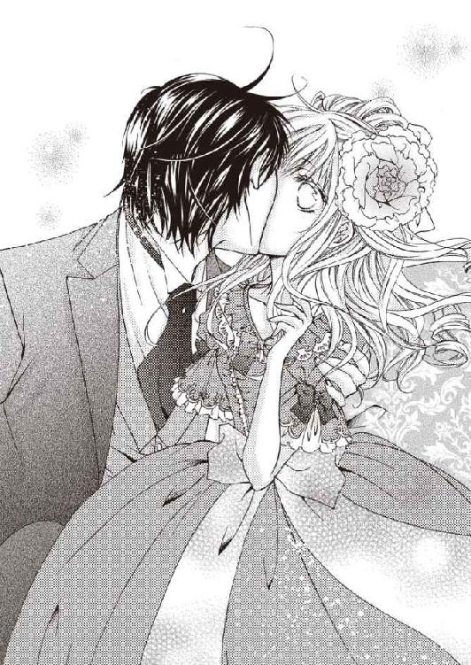
ルイーズは怒っているのに、メイヤー子爵は悪びれもしない。
「いけませんか？」
「いけません！ あなた、レディ・ベアトリスとお付き合いしているのでしょう？」
「いいえ。私はレディ・ベアトリスと特別な関係ではありません。友人のロード・オールウィンに、『婚約者とパーティーに行きたいから、妹のお守りを代わってほしい』と泣きつかれまして。今のところ、特別な相手はおりませんので、レディ・ベアトリスをエスコートしている。ただそれだけです」
「......そう......なんですか？」
ルイーズは心のどこかでほっとしている。メイヤー子爵が誰と付き合おうと、自分とは関係ないのに。
メイヤー子爵が再びルイーズの手を握り、悩ましい眼差しでルイーズを見つめて囁く。
「そうですよ。だから、これからあなたと特別な関係になっても、何も問題はありません。仲よくしましょう」
手の甲にキスされて、ルイーズはようやく、自分が口説かれていたことに気づいた。
この凛々しく頼もしい貴公子に、特別な関係になりたいと望まれている──それ自体は、素直に嬉しいと思う。ルイーズも彼に魅かれている。できるものなら、お付き合いしたい。
けれどルイーズには、伯爵家を継ぐ嫡男と、恋することなど許されていないのだ。
「手を......お離しください」
震える声でそう告げると、メイヤー子爵が悲しげに顔を曇らせた。
「私がお嫌いですか？」
「いいえ。そういう問題ではなくて......」
「すでに心に決めた方がいらっしゃるのですか？」
「心に決めた方はいませんが......私の嫡男は特許によって、母方の祖父が授爵した連合王国伯位を相続します。だから父は、祖父の爵位を代々子孫に引き継がせるため、嫡男以外の殿方を婿にもらって、娘夫婦がワトフォード伯爵家で暮らすことを望んでいます。あなたのお父様も、爵位継承者を手放すおつもりはないでしょう。あなたのことは、とても好ましく思っていますが......結婚を前提にしたお付き合いはできません」
せめて彼が子爵家以下の下級貴族か準男爵の家柄なら望みはあったが、伯爵家の相続人同士の縁組だと、近年授爵したばかりの祖父の連合王国伯位は、ルイーズの子か孫が両家の爵位を襲爵した時点で、誰も名乗ることができない従属称号になってしまう。
当人同士の気持ちはどうあれ、互いの親が許さなければ、女王陛下から結婚のお許しがいただけない。
貴族が陛下の許可なく結婚すれば、反逆罪で爵位継承を剥奪される。そうなったとき、貴族の子として生まれた二人が、何もかも捨てて、平民として生きていけるだろうか？
生活に疲れて気持ちが冷めてしまったら──お互い後悔するだけかもしれない。
今ならまだ、淡い初恋として胸のうちにしまっておける。結婚相手は、親に祝福される人を選ぶべきだ。
「私......十六歳の誕生日に、父が選んだ花婿候補の方々とお見合いしました」
「そして、サー・レナードを選んだというわけですか」
メイヤー子爵が、少し苛立った声でそう呟き、ルイーズは力なくかぶりをふる。
「いいえ。レナードを選んだわけではありません。ご立派な方ばかりで、今はまだ、誰か一人を選ぶことができずにいるんです」
ルイーズの言葉に、メイヤー子爵が眉をひそめた。
「それは、有体に言えば、『特別に心惹かれる相手がいなかった』ということでしょう？ あなたは、そんな結婚に納得しているのですか？」
「確かにあなたのおっしゃる通り、父が選んだ花婿候補の中には、特別に心惹かれる殿方はいませんでした。けれど、お付き合いしてみて、それぞれの人柄が解ってくれば、私の見方も違ってくるでしょう」
メイヤー子爵は納得できない様子で呟く。
「......そんなの、恋とは言えない！ 甘いときめきに胸を躍らせ、熱い想いに身を焦がすような恋をしてみたいと思いませんか？」
ルイーズはしばし黙り込み、内に秘めた心情を吐露する。
「......本音を言えば、私だって、恋することに憧れていたわ。あなたとお付き合いしてみたいけど、父と祖父の期待を裏切りたくないの」
憧れていたような恋をすることはできないと、ルイーズはとうに諦観しているのだ。
「恋はできなくても、人として尊敬し、家族として愛することはできます。私はできるだけ早く父が望む方と結婚して、夫となる方と幸せな家庭を築く努力をするつもりです」
ルイーズがそう告げると、メイヤー子爵はますます不機嫌になり、批判的な口調で言う。
「努力して好きになって、努力して愛する？ そんな上っ面だけ取り繕った夫婦が、幸せになどなれるものか！ あなたのお祖父様は、なんとおっしゃっているんです!?」
「祖父は亡くなりました。私の直系の身内は、もう父しかおりません。父は私が早く嫡男以外の婿を取ることを望んでいますし、私も父を独り残して嫁ぐことなどできません！」
「再婚すれば独りじゃなくなる！ 弟が生まれる可能性だってあるでしょう！」
「父は今も、亡くなった母だけを愛しているのよ！ 再婚なんてしないわ！」
亡くなった妻を八年経った今でも深く愛し続け、母の分まで愛情を注いでくれた父を、ルイーズはとても誇りに思っている。
しかし、メイヤー子爵はそんなルイーズの心の叫びを、鼻先でフンとせせら笑った。
「自分は愛していない女とは結婚できないが、娘には愛のない結婚をさせるのか。いい父親だな！」
「父を悪く言わないで！ 私も納得していることなのよ！」
ルイーズが怒りに任せて叫ぶと、メイヤー子爵も声を荒げて怒鳴り返す。
「家柄や爵位のためなら、心の底から愛せない男と結婚するのも厭わないというわけか！ 父親が父親なら、娘も娘だ！」
「私はただ、父と祖父を喜ばせてあげたいだけよ！」
「それはそれは──なんとご立派な孝行娘だ」
皮肉な笑みを浮かべたメイヤー子爵が身を乗り出し、ルイーズを押さえ込んで低い声で問う。
「あなたは、結婚するということが、どういうことか解っているのか？」
彼はルイーズのドレスのスカートを捲くり、輪を吊った籠型の下着を斜めに持ち上げた。これでは、下穿きが丸見えだ。
「やめて......！やめてください！」
必死で訴えても、やめるどころか、股の間に膝を入れられ、ソファに体を縫いとめられて、下穿き越しに恥ずかしい場所をまさぐられた。
「イヤぁ──っ！」
抵抗しようとしても、か弱い女の力では、たくましい男の手を払いのけることなどできない。
「結婚すれば、あなたは生まれたままの姿になって、ここに相手の男を受け入れるんだ！ 本当に、心の底から愛せない男に身を任せられるのか!?」
これまで漠然と考えていた結婚という結びつきが、突然生々しい実感を伴ってルイーズを怯えさせた。
「女に子を産ませるために、男がどんなものを隠し持っているか、あなたは知らないだろう？ 想像してみるといい。一糸まとわぬ姿であられもなく股を広げて、ここに口づけや愛撫を受けて、男が隠し持っているものを受け入れる。それが子供を作るための、夫婦の営みだ。あなたは本当に、好きでもない男の子供を産めるのか......!?」
まだ何も知らない処女には、メイヤー子爵が語った赤裸々な男女の交わりは、あまりにも刺激が強すぎる。
聞きたくなかった。これでは、結婚に対する夢も希望も、粉々にくだけてしまう。
「......どうして......？ どうしてこんな、意地悪をなさるの......？」
メイヤー子爵が、なぜここまで激昂するのか、ルイーズには判らない。
彼に対する信頼が崩れ、傷つけられた心が流す血のように、宝石みたいな青い瞳から、止め処なく涙がこぼれてきた。
泣きだしたルイーズを見て、メイヤー子爵がハッと我に返った様子で身を離す。
「......今日は帰ります」
暇を告げた彼が立ち去る物音が、重苦しい空気で満たされた客間に響く。
（優しい方だと思っていたのに......ひどい人......）
一人その場に残されたルイーズは、力なくソファに身を預け、さめざめと泣き続けた。
◆ ◆ ◆
昨日の夕方から、ルイーズはずっと自室に引きこもり、食事も取らずにベッドで塞ぎこんでいる。
思い出すと悲しくなって、また止め処なく涙があふれ、泣きすぎて瞳が溶けてしまいそうだ。
侍女イレーヌが枕元で、ルイーズの気を引こうと、努めて明るく話しかけてくる。
「お嬢様。アフタヌーンティーのお時間です。今日は菓子職人が、お嬢様のお好きなチョコレートケーキを作っています。とても美味しそうですよ」
「......食べたくないわ」
「そうおっしゃらず、一口だけでもお召し上がりください」
「本当に、何も喉を通らないのよ」
対外的には病気療養中で主人が不在の折に、一人娘のルイーズまでこの調子では、使用人たちが不安に思うだろう。このままではいけない。そう思うのに一気に気力が抜けてしまって、起き上がることができないくらい心が弱っているのだ。
部屋係の女性使用人が、ルイーズに客人の訪れを伝えに来た。
「昨日いらしたメイヤー子爵がお見えになりました。お嬢様が主催されるティーパーティーの件で、ご相談があるそうです」
「今は誰にも会いたくないの。お帰りいただいて」
思わずそう口にしたものの、ルイーズは彼と、美術品愛好家クラブの闇オークションに出品された、ピンクダイヤのパリュールを入札した人物を、この館へ連れてきてもらう約束をしている。
「待って。やっぱりお会いするわ。イレーヌ。着替えを手伝って」
「はい、お嬢様！」
イレーヌは嬉々として、ルイーズにドレスを着せつけ、美しく装わせた。
「とてもおきれいです。きっとメイヤー子爵も、お嬢様にお心を奪われますわ」
（......メイヤー子爵も、ってどういう意味？）
別に今さら、メイヤー子爵に好かれたいなどと思っていない。彼に会うためにめかし込んだわけではなく、来客と会うにあたって、レディとしての身だしなみを整えただけ。
でも、いちいちそれを口にするのは大人気ない。
ルイーズは咽まで出かかった言葉を飲み込み、メイヤー子爵が待つ応接室へ向かった。
ドアを開けた途端、とても濃厚な、甘く芳しい香りが漂ってくる。
メイヤー子爵が抱えている、きれいにラッピングされた大きな花束が香りの源だろう。
応接室に現れたルイーズを見て、メイヤー子爵がホッとしたような笑みを浮かべる。
「レディ・ルイーズ。お会いできてよかった......。昨日はあんなふうに泣かせてしまって、本当に悪かったと思っています。お詫びにこれを......」
手渡されたのは、明るくきれいなローズピンクの、花弁が四つに分かれて密集した、特徴のある八重咲き大輪のバラで作った豪華な花束だ。
「まあ......可愛らしいバラ」
思わずバラに誘われるように微笑むと、メイヤー子爵も口許を綻ばせた。
「喜んでもらえてよかった。これはルイーズ・オディエという品種のバラです。今朝知人の屋敷を訪ねたとき、このバラを見て、あなたを思い出しました」
きれいなバラをいただいたのは嬉しいけれど、あんなひどいことをされたのだ。そう簡単に彼を赦す気にはなれない。
堅い表情に戻ったルイーズに、メイヤー子爵がかき口説くように囁く。
「あなたは、甘く香るピンクのバラのような人だ。雨に濡れて項垂れている姿も風情があって心惹かれるが、ふんわりと微笑むように咲き綻んでいくところが一番可愛らしい」
ルイーズは、歯の浮くようなセリフに赤面した。
（彼はいつもこんなふうに、女性を口説いているのかしら？）
付き添いの侍女イレーヌは、雰囲気を察してルイーズに言う。
「お嬢様。私、いただいたお花を、お嬢様のお部屋に活けてまいりますわ」
「あっ、待って、イレーヌ」
そばにいてくれればいいのに、半ば強引に花束を受け取り、変に気を利かせて退室してしまった。
昨日の今日で、メイヤー子爵と二人きりになるのは怖い。
人の気も知らず、メイヤー子爵は怯えるルイーズの手を握り、情熱をこめて訴える。
「レディ・ルイーズ。私は昨日、あなたに本当に失礼なことを言いました。王侯貴族の間では、家柄や財産を守るための血族婚も、政略結婚も、よくある話だ。それなのに、言葉が過ぎました。反省しています」
真摯な瞳でじっと見つめられ、赦せないと思う気持ちが揺らぐ。
（......絆されてはダメ。彼は昨日、突然キスを盗んだ挙げ句、あんな不埒な真似をしたのよ。きっと軽々しくレディを口説いて、手を出す人なんだわ）
ルイーズは自分にそう言い聞かせたが、心の中にいるもう一人の自分は、彼を赦そうと弁護する。
（......もしかしたら、彼は我を忘れて激昂するほど、家柄や爵位を守るために親が決めた結婚に対して、何か特別な想いがあるんじゃないかしら？ たとえば、自分の身内がそういう結婚を強要されて、不幸になってしまったとか──）
二つの感情が心の中で鬩ぎ合い、葛藤の果てに、一つの結論に辿り着いた。
「もういいわ。昨日のことは忘れましょう」
誰にだって、感情がコントロールできなくなることはある。
ルイーズだって、母の形見のジュエリーが盗まれたと解ったとき、まるでこの世の終わりのように嘆き悲しんで、父を困らせた。
悲しいのは父も同じ。なのに、ルイーズは父を思いやることを忘れていたのだ。
父が盗品オークション会場に潜入し、消息不明になるような危険まで犯したのは、自分のせいではあるまいか。嘆き悲しむルイーズに『必ず形見の品を取り戻す』と約束したから、無理をしたのではないだろうか。
そう思い続けて、父が行方不明になってから、後悔ばかりしている。
「あなたが何の理由もなく、私を傷つけようとしたとは思えない......。後悔して、こうして謝罪にいらしたんですもの。あなたを赦します」
メイヤー子爵は、その言葉に胸を打たれた様子で、ルイーズをじっと見つめて黙り込む。
そして静かに微笑み、跪いて誓いを立てるように言う。
「レディ・ルイーズ。失礼な真似をしたお詫びというわけではありませんが、あなたが母上の形見を取り戻せるよう、そして父上が無事に戻ってこられるように、私にできる限りのことをすると約束します」
ルイーズも彼に微笑み返す。
「ありがとうございます、ロード・メイヤー。でも、償いのために、危険に飛び込むようなことはなさらないでね。母の形見を取り戻せても、父の行方がわかっても、代わりにあなたの身に何かあったら、素直に喜べません」
メイヤー子爵がまた微笑んだ。今度は少し困ったように。
「レディ・ルイーズ。私はあなたへの償いのために力を貸すわけではありませんよ。私のためです。私があなたの笑顔を見たいから、できる限り力を貸す。ただそれだけだ」
そんなふうに言われて、嬉しくない女がいるだろうか？
少なくともルイーズは、気を遣わせまいとする彼の優しさが嬉しかった。
あんなにひどいことをされたけれど、やっぱりメイヤー子爵が好きだ。
そして、誰かを好きだと思う気持ちを、塞き止めることなどできない。
無言で見つめ合っていると、ノックの音がして、執事ハドソンが応接係の使用人たちを従え、お茶を運んできた。
振舞われたお茶を飲んだメイヤー子爵は、使用人の耳をはばかる様子でルイーズに言う。
「内密に、お話したいことがあるのですが......」
話というと、ティーパーティーの件だろう。ハドソンはワトフォード伯爵の失踪について知っているが、何も知らない使用人たちに聞かれては困る。
執事以外は下がらせるべきか迷ったが、よく考えたらルイーズは、ハドソンに知られては困る秘密を、メイヤー子爵と共有しているのだ。もし、美術品愛好家クラブのマスクドボールに関する話題がハドソンの耳に入ったら──こっそり危険な場所へ忍び込んだことを知られてしまう。
あの件に関しては、メイヤー子爵にも叱られた。確かに無謀なことをしたと、今では反省している。
ただでさえ、父のことで心労を抱えている使用人たちに、これ以上心配をかけたくないから、ルイーズは完全に人払いした。
メイヤー子爵は予想通り、ピンクダイヤのパリュールを落札した、美術品愛好家クラブの特別会員について話し始める。
「彼の都合がつきました。それに合わせて、ほかの知人もティーパーティーに誘っています。回廊に飾る賑やかしの絵画のほうも、すでに数点見繕いました。お宅のご都合に合わせて搬入しますよ」
なんと仕事が早いのか。
おそらくルイーズが塞ぎこんで寝ている間に、信頼を回復するために、全力を尽くしてくれたのだろう。
「ありがとうございます、ロード・メイヤー」
「これくらいたやすいことです」
そこでメイヤー子爵は、また何か言いたげな顔でルイーズをじっと見つめた。
しばし沈黙が続き、ようやくためらいがちに口を開く。
「......私は......あなたを傷つけたことを、本当に......後悔しているのです」
「それはもう忘れましょう」
「いいえ。あなたが忘れてくださっても、私が忘れるわけにはいきません。今日ここへ来たとき、あなたは私に怯えておられた。なるべく早く婚約者を選ばなければならないあなたに、心の傷を負わせてしまった。もしあなたが男女の交わりに不快感や恐怖感を抱いたとしたら──それは私の罪です」
確かにルイーズは、あれから結婚に対して戸惑いを感じている。
「......怖くないと言えば嘘になります。でも、それは女に生まれた者の運命。否が応でも受け入れるしかありませんわ」
諦めたように呟くと、メイヤー子爵が端正な顔を曇らせた。
「そんな......悲しい言い方をしないでください。愛し合う者同士であれば、決してつらいことではないのです。むしろ甘い喜びに満ちた夢のような快楽を得られる。人が恋をして、愛し合うのは、それが心地好いからです。できるものなら、恋も知らずに結婚しようとしているあなたに、恋する喜びを教えて差し上げたい......」
恋しい方との、甘い喜びに満ちた夢のような快楽──それは果たして、どれほど素晴らしいものだろう？
心ときめく恋をして、生涯添い遂げたいと思える方と、幸せな結婚をする──それがルイーズの、幼い頃からのささやかな夢だった。
メイヤー子爵は、悩ましい眼差しでルイーズをじっと見つめて掻き口説く。
「まだ結婚相手を選べそうにないなら、しばらく私とゲームをしませんか？」
「ゲーム......？」
「そう。ままごとのような恋愛ゲームです。私が不用意に植えつけた恐怖感を、取り除いて見せますよ。あなたの事情は承知している。決して困らせるようなことはしません。結婚相手が決まり次第、きれいに身を引きます。あまり深刻にならないで、気軽に恋する気分を味わってみませんか？」
「恋愛ゲームなんて......そんなこと......」
少し興味はあるが、レディのすることではない。
戸惑っていると、メイヤー子爵が落胆の色を滲ませた。
「私では、役不足ですか？」
「役不足だなんて......」
むしろ彼に惹かれているから、彼にとってはゲームでも、自分は本気になりそうで怖い。
「では、私と独身時代の美しい思い出を作りましょう。あんな時代もあったと、懐かしく思い出せるような......ときめく恋の思い出を......」
生まれて初めて巡り逢った、こんなにも心惹かれてやまない殿方と、そんなステキな思い出が作れたら、どんなに幸せだろう。
恋をしてみたい。一生に一度の、燃えるような恋を。
彼となら、それができるような気がする。
あのときイエスと答えていればよかった──なんて後悔したくない。
「美しい思い出を作れるかしら？」
「作りましょう、二人で。今だけは、私はあなたの恋人。あなたのためならどんな苦労も厭わない、心からあなたを愛する一人の男です」
包み込むようなその瞳も、情熱的な言葉を語るその声も、ルイーズの心の琴線を震わせる。
「レディ・ルイーズ......」
少しかすれた声で名を呼ばれ、優しく抱きしめられた。
まるで宝物を愛でるように背中や髪を優しく撫でられ、本当に、彼に愛しく思われているような気がしてしまう。
大きな手で頬を包まれ、そっと唇に唇を押し当てられても、少しも嫌ではなかった。
怖いどころか、こうしていることが心地よくて、このまま時が止まってしまえばいいとさえ思う。
たとえ儚く消える泡沫の恋でも、今だけは、確かな現実。
（神様......）
どうか、少しでも長く夢を見させてほしい。
瞬く間にワルツが終わったマスクドボールの夜みたいに、どうか、すぐにこの夢を終わらせないでほしい。
ルイーズは縋るように神に祈った。
今年社交界デビューしたペンザンス伯爵令嬢ベアトリスは、半月あまり前に出席した舞踏会で、容姿端麗な凛々しい貴公子と運命の出逢いをした。
一目で恋に落ちたその人の名は、メイヤー子爵ロバート・メイヤー。バーンズリー伯爵の嫡男だ。
誰かが彼を、ミッドランズ公爵の嫡男、バーミンガム侯爵アーネスト・グレンジャーと間違えたことで、公爵家の遠縁にあたる方だと判った。
なんとしても、メイヤー子爵の心を射止めたい。
そう思っている若いレディは、ベアトリスのほかにも大勢いる。これほど素敵な方なのだ。のんびり構えていたら、ほかのレディに奪われてしまう。
ベアトリスは舞踏会に一緒に来ていた兄、オールウィン子爵にメイヤー子爵を紹介し、彼とお近づきになれるよう、協力してもらうことにした。
どうやらメイヤー子爵は、絵画や彫刻、ジュエリーなどの美術品が好きらしい。
父ペンザンス伯爵の影響で美術品に傾倒している兄は、メイヤー子爵と共通の趣味の話題で盛り上がり、彼が興味を持っていた、美術品愛好家向けの会員制社交クラブへ誘った。
歳が近いせいだろう。二人はベアトリスの期待以上に親しくなり、兄は『美術品をお見せする』という口実で、メイヤー子爵をロンドンの別邸へ招待した。
それが縁でメイヤー子爵は、父にも気に入られたのだ。
バーンズリー伯爵家のロンドン邸が改築中で、メイヤー子爵は仮宿を転々としている。
それを知った父は、改築工事が終わるまで、ペンザンス伯爵邸に滞在するよう勧めた。
父のおかげで意中の彼を客として迎えられた上、兄もメイヤー子爵が夜会に招待されたときは、『ベアトリスを連れて行ってほしい』と頼んでくれる。
家族が協力してくれたから、ベアトリスは、メイヤー子爵を結婚相手に狙っているほかのレディたちより、一歩も二歩も先んじることができた。
メイヤー子爵と結婚できれば、将来はバーンズリー伯爵夫人。同じ伯爵家同士だが、ミッドランズ公爵家と遠縁にあたるバーンズリー伯爵家は、ペンザンス伯爵家より家柄が古く、領地も広くて裕福だから、結婚相手として申し分ない。
メイヤー子爵と恋人同士になることを夢見て、ベアトリスは毎日、虎視淡々と機会をうかがっている。
しかし、残念ながらここ数日、メイヤー子爵は一人でどこかへ出かけていることが多い。
今朝もベアトリスが目覚めたときには、すでに外出したあとだった。
本当は、天気がよければピクニックに誘うつもりだったのに──一日中好天だったが、すでに日が暮れかかっていて、出かけるにはもう遅すぎる。
（いつお戻りになるのかしら？）
そう思いながら窓の外を眺めていると、バーンズリー伯爵家の紋章入り馬車が、ペンザンス伯爵邸の門から屋敷までのアプローチを走ってくるのが見えた。
ベアトリスは侍女の手を借りて身だしなみを整え、『メイヤー子爵が戻るのを待ち構えていた』などと思われないよう、タイミングを見計らって、一階の客間兼居間へ向かう。
メイヤー子爵はソファに優雅に腰かけ、両親や兄と談笑していた。
「ワトフォード伯爵邸に、素晴らしい名画があるのをご存知ですか？」
メイヤー子爵の言葉に、ベアトリスはハッとする。
（ワトフォード伯爵邸？ 確かそこは、レディ・ルイーズの──）
ルイーズとは、デビュタントボールと、カノック伯爵邸の舞踏会で会った。
誰もが喜びにあふれているデビュタントボールで、ルイーズは一人だけ不幸を背負っているような憂い顔をしていたのだ。あまりお近づきになりたくないタイプだと思ったから、ベアトリスは直接言葉を交わしていない。
ルイーズは悪い意味で目立っていたのでよく憶えているが、彼女はベアトリスのことなど憶えていなかったようだ。カノック伯爵邸の舞踏会で再会したとき、メイヤー子爵には笑いかけて媚を売っていたくせに、ベアトリスや兄たちにはまるで無関心だった。それって、すごく失礼な態度だと思う。
ルイーズに対して、ベアトリスは二度ともいい印象を抱いていない。だからなおさら、メイヤー子爵が彼女に関する話題を口にするなんて、不愉快だ。
（ロード・メイヤーは、どうしてワトフォード伯爵邸の絵画についてご存知なの？）
カノック伯爵邸の舞踏会で会ったとき、メイヤー子爵は、ルイーズと初めて会ったようだった。
（もしかして......慌ただしく出かけていた間に、ワトフォード伯爵邸へ行って、レディ・ルイーズと会っていた......？）
そう考えると、心穏やかではいられない。
メイヤー子爵はベアトリスの気も知らず、一頻りワトフォード伯爵所蔵の絵画を褒め、清々しい微笑みを浮かべて言う。
「カノック伯爵邸でこの話をしたら、集まっていた同好の士が、『ぜひ我々も、その絵画を拝見したい』と盛り上がりましてね。ロード・ワトフォードは現在、旅先で体調を崩されてご不在ですが、代わりにレディ・ルイーズが、アフタヌーンティーの時間に、ティーパーティーを開いてくださるそうです。皆様もパーティーに参加しませんか？」
きっとレディ・ルイーズは、ワトフォード伯爵所蔵の絵画でメイヤー子爵の気を引いて彼に近づき、親しくなったに違いない。おとなしそうな顔をして、なかなかのやり手だ。
内心歯噛みしながら様子をうかがっていると、父が気乗りしない顔で呟く。
「......ロード・ワトフォードがご病気で、お留守のときにお邪魔するのはどうかと......」
するとメイヤー子爵が、詳しい状況を説明する。
「まだ静養中で旅先から戻れないようですが、ロード・ワトフォードは、すでに深刻な状態を脱しています、あとは時間が薬だそうで。今はレディ・ルイーズお一人で、ロード・ワトフォードのご帰宅を待っていらっしゃるのです。きっとお淋しいでしょう。そこで彼女をお慰めするために、みなでワトフォード伯爵邸に伺うことになったのですよ」
それを聞いて、兄が苦笑混じりに軽口を叩く。
「......そういえば、先日お会いしたとき、レディ・ルイーズは、どこか淋しげなご様子だったね。今にも折れそうな風情の儚げな美人だから、『守ってあげたい』と思う男は多いだろう。盛り上がったのは、絵画より、深窓の伯爵令嬢についてではないのかい？」
メイヤー子爵も苦笑し、兄の揶揄を受け流す。
「確かに『レディ・ルイーズは美しい』と評判でしたが、私は何より、ワトフォード伯爵邸で見た絵画に心を揺さぶられた。あれは本当に素晴らしい作品です。一見の価値はありますよ」
「眼識のあるロード・メイヤーが、そこまで絶賛するからには、かなり期待できそうだね。せっかくですから、我々も参加させていただきましょう、父上」
今だとばかりに、ベアトリスも会話に加わった。
「そのティーパーティー、私もぜひ参加したいわ。ずっとレディ・ルイーズとお友達になりたいと思っていたの」
友達になりたいなんて、露ほども思っていないが──彼女がメイヤー子爵にこれ以上近づかないよう、今のうちに牽制しておく必要がある。
ベアトリスの真意に気づかず、人の好い兄が真剣な顔で賛同する。
「そうだね。レディ・ルイーズも社交界デビューしたばかりで、まだ友達も少ないはず。こういうときは女同士のほうがいいだろうから、お前が仲よくなって、力づけて差しあげるといいよ、ベアトリス」
「ええ、お兄様」
それを聞いていた母も乗り気になった。
「でしたら、私も参りますわ。ティーパーティーでレディ・ルイーズと顔つなぎして、我が家のアフタヌーンティーにもご招待しましょう」
こうしてペンザンス伯爵家は、家族四人で、ワトフォード伯爵邸の午後のお茶会に参加することになったのだ。
お茶会当日──バーンズリー伯爵家の馬車に先導され、ペンザンス伯爵家の豪奢な馬車と、従者の馬車が、ワトフォード伯爵邸へ向かった。
美しいと評判だというルイーズに対抗するため、ベアトリスはとっておきの赤いアフタヌーンドレスと、お揃いのボンネットで念入りにめかし込んでいる。
（確かに、レディ・ルイーズの艶やかな淡い金髪や、ブルートパーズのような青い瞳はきれいよ。でも、あんな陰気な顔つきをした方に、この私が負けているとは思わないわ）
ベアトリスだって、豪華で美しい黒髪だとよく褒められるし、子供の頃から『子猫のように可愛らしい』と言われてきた。今は華やかな美人と評されている。
ワトフォード伯爵邸の門を潜った一行は、馬車から下りて、取り次ぎの使用人に来訪を告げた。
玄関広間に迎え入れられ、使用人から知らせを受けたルイーズが現れる。
「ようこそお越しくださいました。ワトフォード伯爵の娘ルイーズです」
桜色のドレスをまとったルイーズは、上品に挨拶して、ふんわりと花が咲くように微笑んだ。憂い顔の印象が強かったので、ベアトリスは意表を衝かれて動揺した。辛うじて顔に出てはいないと思うが──。
「ご招待した皆様がお揃いになるまで、しばらくこちらでお待ちください」
大広間の隣にある応接室に通され、しばらくすると、ほかの参加者も次々に集まってきた。
メイヤー子爵とペンザンス伯爵一家、カノック伯爵夫妻ほか八名──合計十五名が、今日招待された客らしい。
貴族の邸宅では、玄関広間から二階へ続く回廊や階段に、様々な美術品を展示している。
父ペンザンス伯爵も、領地にある本宅やロンドン邸の回廊に、自慢の美術品をたくさん飾っているが、ワトフォード伯爵邸の美術品も、かなり素晴らしいものが揃っているらしい。
「これは......確かに、ロード・メイヤーが絶賛するだけのことはある」
ベアトリスには絵画の価値はよく判らないが、招待された美術品愛好家の貴族たちは、作品の前で長々と立ち止まっては、嬉々として薀蓄を語り合っている。
回廊の絵を眺めながら歩いていると、ルイーズの肖像画が目に入った。
（素敵なパリュール......）
ドレスも髪型も時代遅れだが、ピンクの宝石をあしらったパリュールは、とても繊細で、ため息が出るほど美しい。
実物があるなら、ぜひ見てみたいけれど──デビュタントボールでも、カノック伯爵主催のボールでも、ルイーズが身につけていたパリュールは、プラチナにパールをあしらった品だった。
（もしかしてこれば......レディ・ルイーズが持っているパリュールではないの？）
そういえばこの絵は、少しルイーズより大人びた顔に描かれている──そう思いながら肖像画を眺めていると、こちらを向いた父が突然よろめいた。
「あなた！ どうなさったの!?」
「父上！」
「大丈夫ですか!?」
兄とメイヤー子爵に抱き支えられた父が、青い顔をして力なく告げる。
「......急に具合が悪くなった。今日はこれで失礼する......」
兄がそれに同意した。
「そうですね。帰って休まれたほうがいい。レディ・ルイーズ。せっかくお招きいただいたのに、申し訳ありませんが、我々はもうお暇します。ほかの皆様は、どうかこのままパーティーを続けてください」
ルイーズが心配そうな顔で言う。
「では、せめて玄関までお送りします。誰か、手をかしてちょうだい」
ワトフォード伯爵邸の従僕が父に肩を貸し、玄関先まで送ってくれる。
ベアトリスも母に促され、その後ろをついていく。
玄関からは、待機していたペンザンス伯爵家の従者が、父を支えて馬車に乗せた。
「お大事になさってくださいね、ロード・ペンザンス」
ルイーズの横でメイヤー子爵が、心苦しそうな顔で母に言う。
「ロード・ペンザンスのことが心配なのですが、私がこのパーティーの段取りをしたようなものなので、申し訳ありませんが、こちらへ残ります。ロード・ペンザンスによろしくお伝えください」
メイヤー子爵が残るなら、ベアトリスもこの場に残りたい。
いや──残らなければ、彼とルイーズがますます親しくなるのではないかと、疑心暗鬼に駆られてしまう。
しかし、父が具合を悪くして帰ることになったのに、まさか自分だけ『残りたい』などと言えるものか。
ベアトリスは後ろ髪を引かれながら、再び馬車に乗り込んだ。
◆ ◆ ◆
ペンザンス伯爵一家が帰ったあと、メイヤー子爵ことアーネストは、ルイーズとともに回廊へ戻った。
「中座してすみません。ペンザンス伯爵ご一家は帰られましたが、我々は引き続き回廊の美術品を鑑賞して、レディ・ルイーズが用意してくださったお茶をいただきましょう」
ワトフォード伯爵所蔵の絵画や美術品にも素晴らしい作品はあるが、派手に煽って誘った手前、よほどの品がなければ面目が立たない。だからアーネストは、目の肥えた美術品愛好家クラブの会員たちが感服するよう、ロンドン社交界で人気がある画家の作品をいくつかここへ持ち込んだ。
そして、本来は家族の居間に飾られていた、ワトフォード伯爵夫人の肖像画も、回廊に紛れ込ませている。
肖像画に描かれているワトフォード伯爵夫人は、ルイーズにそっくりだ。ワトフォード伯爵が、彼女を手放したくないと思うのも無理はない。
それに、この肖像画に描かれているパリュール──本当にプラチナに濃いピンクダイヤをあしらった五点セットのオートクチュールジュエリーなら、大した財宝だ。
ワトフォード伯爵夫人の肖像画の前で、カノック伯爵がしみじみと語る。
「レディ・ワトフォードの肖像画も、とてもいい出来だ。緻密な筆致と多彩な色使いで、彼女の内面の美しさまで描き出されている」
イクスワース伯爵の嫡男が、驚いた様子で肖像画とルイーズを見比べて言う。
「この肖像画は、レディ・ワトフォードですか。レディ・ルイーズにそっくりですね。いや──レディ・ルイーズのほうが、少しばかりお若いようですが......」
カノック伯爵が頷いてそれに同意し、解説を続ける。
「おそらくこれは、レディ・ルイーズが生まれる前──彼女がワトフォード伯爵家に嫁いだ頃の絵でしょうな。レディ・ワトフォードは、実に美しく聡明な方でした。彼女がパーティーに出席されると、ピンクの花が咲いたようで──同席した王侯貴族は、うっとりとその姿に見惚れたものです。素晴らしいピンクダイヤのパリュールをお持ちだったので、レディたちの注目の的でもありましたよ」
そこで午後のお茶会の参加者全員が、ワトフォード伯爵夫人の肖像画に描かれている、ピンクダイヤのパリュールに注目した。
「ここに描かれているジュエリーは、ピンクダイヤですか？」
イクスワース伯爵が驚いた様子で尋ね、カノック伯爵夫人が、少しオーバーなくらい情感を込めて肯定する。
「ええ。それも、ファンシーインテンスピンクダイヤ！ 私、実物を見たことがありますけれど、とても見事なジュエリーで......本当に、羨ましくてたまりませんでしたわ」
実はカノック伯爵夫妻は、アーネストの正体を知る協力者。このお茶会を企画した際、ワトフォード伯爵の友人でもある彼らに、『ワトフォード伯爵夫人の肖像画に描かれているパリュールを、参加者に印象づけてほしい』と頼んでおいたのだ。
結果は上々。当時の夜会に出ていない若い客たちが、大変興味を示した。
「それはぜひ、一度実物を拝見したいですね。レディ・ルイーズ。もしよろしければ、お願いできませんか？」
するとルイーズが、悲しげに項垂れて告げる。
「......できればお見せしたいのですが......あれは、ヘルメスに盗まれてしまいましたの」
可憐なルイーズに同情した若い客たちが、憤慨した様子で叫ぶ。
「ヘルメス！ あのロンドン中を騒がせている盗賊がこれを......!?」
「形見の品を盗むとは、まったく、血も涙もない......」
「ロード・ワトフォードも、それでお力を落とされたのかもしれませんね」
「悲しいことが重なって、レディ・ルイーズも大変でしたわね。何かお困りのときは、いつでもおっしゃって。できる限りのことをさせていただくわ」
カノック伯爵夫人に続いて、みな口々にルイーズを慰め、励ました。
すると、先ほどまで項垂れていたルイーズが、水を与えられた花のように顔を上げて微笑む。
花はそこに在るだけで、見ている者の心を癒す。
ルイーズもまた、そこにいて微笑むだけで、人を和ませる天与の才能があるようだ。
回廊で美術品を鑑賞したあと、庭に出られる明るい客間兼居間で午後のお茶を楽しんで、今日の催しはお開きとなった。
ルイーズに見送られ、それぞれが馬車に乗って帰路につく。
しかし、アーネストが向かっているのは、ペンザンス伯爵邸ではない。
行き先は、今日の招待客の一人──美術品愛好家クラブの闇オークションで、ピンクダイヤのパリュールを入札した人物のロンドン邸。
そこで秘密裏に、闇オークションに出品されたピンクダイヤのパリュールと、ルイーズの母の形見のパリュールが同じものであったか否か確認し、ワトフォード伯爵邸に取って返す段取りになっている。
答えはすでに、回廊を回っている間に出ていたけれど──アーネストは関係者の証言を得るために、彼のあとをついていった。
◆ ◆ ◆
午後のお茶会が終わってから、ルイーズはずっと落ち着かない心持ちで、メイヤー子爵が戻ってくるのを待っている。
すでに二時間近く経っただろうか──。
今は初夏。夏の日照時間が長いイギリスでは、この時期の日没は午後九時を過ぎてからだ。二階の窓から見える景色は、まだ昼間のように明るい。
見覚えのある箱馬車が、ワトフォード伯爵邸の門をくぐって近づいてくる。
ルイーズは急いで階下へ降り、玄関の外まで出迎えた。
「ロード・メイヤー！」
声をかけると、馬車から下りたメイヤー子爵がさわやかに破顔する。
「レディ・ルイーズ。お待たせしてすみません」
「いいの。それより、早く詳しいお話を聞かせてください！ 私の部屋へいらして」
ルイーズはメイヤー子爵を二階へ案内した。
本来なら、結婚前の若いレディが、婚約者でもない殿方を部屋へ招き入れるべきではない。それは重々承知している。
しかしルイーズは、使用人たちに眉をひそめられても、真しやかに艶聞を流されても、使用人の存在を気にせず、二人きりになれる場所で彼と過ごしたいのだ。
侍女に入室を禁じ、メイヤー子爵を自分の私室の客間兼居間に招き、ゆったりした客用ソファを勧めた。
ルイーズも斜向かいのスツールに座って、まずは気になっている結果を問う。
「それで......ピンクダイヤのパリュールに入札した方の反応は、いかがでしたの？」
メイヤー子爵は居住まいを正して報告する。
「やはり、闇オークションに出品されていた品は、ヘルメスに盗まれた、レディ・ワトフォードの形見のパリュールと同じデザインだったようです。十中八九、同じ品だと考えていいでしょう。私の家から盗まれたブローチも出品されていましたし。美術品愛好家クラブが、ヘルメスとつながっていることは間違いありません」
これで盗品の捜索は一歩前進した。ルイーズは思わず顔を綻ばせたが、闇オークション会場に潜入したときのことを思い出し、すぐに笑顔を曇らせる。
「オークション会場では、みんな仮面を着けて素顔を隠していました。入札するときも、座席番号の札を上げるだけで、入札者の声を聞くことはできなかったわ。あれではさすがに、誰が落札したか──までは判りませんよね？」
ルイーズの問いに、メイヤー子爵は難しい顔で頷いた。
「ええ。落札者が誰なのか、彼には判らないそうです。ただ......少し気になっていることがあるので、それをもう少し探ってみます。何か判れば、またご報告しますので......」
「いろいろありがとうございます、ロード・メイヤー。本当に、なんてお礼を言っていいか......」
ルイーズが心の底から感謝を述べると、メイヤー子爵は艶のある笑みを浮かべて囁く。
「言葉より、あなたのキスがいい。どうかここへ来て、あなたに尽くす忠実な恋の虜に、ご褒美のキスをください」
ルイーズは乞われるまま、彼のほうへ歩み寄り、身を乗り出して腰を屈めた。
「とても感謝しています、ロード・メイヤー」
彼の片頬に手を添え、反対の頬に口づけると、メイヤー子爵は不満げに文句を言う。
「これだけですか？」
ルイーズは困惑し、言い訳するように言葉を返す。
「感謝のキスといえば、頬にするものでしょう？」
「特別親しい男女のキスは、唇にするものと決まっています」
「......そうなの？」
「そうですよ。もう一度、今度はちゃんと唇にキスしてください」
メイヤー子爵の大きな手で腰を抱かれ、促すように引き寄せられた。
自分から殿方の唇にキスするなんて恥ずかしい。けれど、キスするまで放してもらえそうにない。
ルイーズはメイヤー子爵の頬を両手でそっと包み、彼の唇に自身の唇を押し当てた。
ゆっくり離れようとした刹那、メイヤー子爵のたくましい腕がそれを阻む。
背中に腕を回して情熱的にかき抱かれ、しっとりと唇を吸われる。
「ん......っ」
恋しい方に求められる喜びに、ルイーズの胸は切なく震えた。
微かに離れた彼の唇が、またルイーズの唇を優しくついばみ、何度もそれを繰り返す。
唇をそっと舌でなぞられ、思わず開いた唇の隙間から、彼の舌が滑り込んでくる。
口腔を舌でくすぐるようにまさぐられ、舌を絡め取られて吸われ、体の力が抜けていく。
思わずくずおれそうになっても、力強い腕が、ルイーズをしっかりと支えてくれる。
安心してメイヤー子爵に身を預け、巧みな口づけにうっとり酔い痴れていると、いつの間にかドレスのホックを外されていた。
「あ......っ！」
上半身をはだけられ、慌てて抵抗する。
「何をなさるの!?」
するとメイヤー子爵が宥めるような優しい声でかき口説く。
「邪魔なクリノリンを外すだけです。女性が美しく装うために必要でも、恋人らしい戯れを楽しむには、いささか無粋な代物だ。どうか、二人を隔てる垣根を取り除くことをお許しください」
確かにこのままでは、抱き合ってキスするために、どちらかが不自然な体勢を取らざるを得ない。
ルイーズは納得し、彼のするに任せた。
メイヤー子爵は立ち上がってルイーズのドレスを脱がし、輪を吊った籠型の下着を腰から外す。
動きを制限されていた下半身が自由になり、ほっとしていると、補正下着の背中の紐に手をかけられた。
「あ......それを解いてはダメ......」
ルイーズが慌てて制止すると、メイヤー子爵が耳元で囁く。
「怖がらないで。鎧のような下着を外すだけです。これでは苦しくてくつろげないでしょう？」
「くつろいだあとが大変なの」
流行りのドレスを美しく着こなすために、上流階級の女性は、背中締めの補正下着で腰をきつく締め上げている。
「侍女の手を借りずに、身繕いできなくなるわ」
「大丈夫。あとで私がお手伝いします」
「恥ずかしいから、やめて......」
ルイーズはあれこれ理由をつけて拒んだが、メイヤー子爵はすべて聞き流し、補正下着の紐を解いて外してしまった。今ルイーズが身に着けているのは、短袖の肌着と下穿きだけ。
こんなに手際よく脱がされると、さすがに不信感が募る。
「......慣れていらっしゃるのね......」
それは、言葉巧みにここまで脱がせた手管についての感想だったが。
「編み上げ長靴と同じ要領ですよ。紐を締めるのも得意ですから、安心してください」
メイヤー子爵は苦笑混じりに受け答え、背後からルイーズを抱きすくめた。
「これでようやく、あなたと抱き合ってくつろげる......」
囁く声は甘く淫らな響きを帯びて、ルイーズを戸惑わせる。
おそらく彼は、こうして多くの女性と、恋のゲームを楽しんでいるのだろう。
メイヤー子爵はルイーズの首筋に唇を這わせ、細い体に腕を絡めて、肌着越しに腰周りを愛撫する。
こうして触れられていると、くすぐったいような、ゾクゾクするような、不思議な感じがして、思わずため息が漏れた。
「あ......」
吐息のような微かな笑みが、ルイーズの耳もとをくすぐる。
「可愛らしい声だ......」
囁きを耳に吹き込まれ、今度は確かに背筋がゾクリとして、思わず体が震えてしまう。
メイヤー子爵の大きな両手が、ルイーズの胸の膨らみを優しく包む。
「や......っ！」
「嫌ですか？」
嫌かと聞かれても、答えられない。恥ずかしくて嫌だけれど、嫌じゃない──。
おそらく彼は、こうしてルイーズの胸に触れるために、補正下着を外したのだろう。ほかの男なら絶対に許せない振る舞いだが、恋しく思う男の手なら、むしろ心地いいと感じられる。
「......殿方に、こんなことをされるのは、初めてです......」
ルイーズが否定も肯定もせず、ためらいがちにそう答えると、メイヤー子爵がまた、甘くかすれた声で囁く。
「男という生き物はみな、女性の胸の膨らみに憧れを抱いているものですよ。こうして妻や恋人の胸を愛で、歓喜に震える姿を見て喜ぶ──私もそんな男の一人です」
ゆっくりと揺すりあげるように胸を揉まれ、羞恥のあまり逃げ出したい気持ちと、初めての行為を経験する不安と、想いを寄せる殿方に触れられている喜びが、心の中で複雑に交錯する。
「イヤ......！」
「本当に嫌？ 嫌ならやめます。またあなたを泣かせたくないから......」
そう言いながらメイヤー子爵は、ルイーズの胸を揉む手を止めはしない。
ルイーズも、彼の問いに答えることなく黙っていた。
拒絶の言葉を発しないのは、了承の証。そう受け取ったのか、メイヤー子爵の手の動きが、ますます大胆になっていく。
不埒な手が、薄い肌着越しにルイーズの胸を揉み、その頂にひっそりと実る小さな二つの果実を探り当てた。
「あ......っ！」
そこを指先で撫でられると、痺れるような快感が走り、体の力が抜けていく。
今にもくずおれそうなルイーズの体を、メイヤー子爵がしっかりと支えてくれた。
そして彼はおもむろにソファに腰掛け、ルイーズの腰を抱き寄せて、自分の膝の上に座らせる。
抗う気力も抜けてしまったルイーズは、力なく彼の胸に背中を預けた。
メイヤー子爵が再びルイーズの胸を揉み、そこにある二つの突起を指先でまさぐる。
「ああ......んっ、ダメぇ......！」
こすり立てられた胸の突起が次第に硬く膨らんで、ますます敏感になってきた。
「やぁ......っ！ やめて......！」
痺れるような強い快感に襲われて、どうしていいか判らない。
ルイーズの悲鳴のような制止の声を、メイヤー子爵はさらりと聞き流す。
「やめてほしいなんて、嘘でしょう？ むしろ私にこうされて、悦んでいるように聞こえますよ」
嫌ならやめると言ったくせに、彼は一向にやめようとしない。
「イヤ......っ！ 怖いの......！ どうにかなってしまいそう......」
ルイーズが不安を訴えると、首筋に宥めるようなキスを落として囁く。
「怯えることはありませんよ。慣れればそれがよくなります」
メイヤー子爵は、まさにここに在ると言わんばかりにそそり立つ二つの突起を、指でそっとつまんで捏ね上げる。
「ひぁあんっ！」
ルイーズはその刺激に切なく身を震わせ、なす術もなく耐えていた。
痺れるような快感の震源は、つままれている乳首だけではない。もっと下の──体の奥深くで、きゅんと締めつけられるような、熱っぽく疼くような、なんとも言えない快感が込み上げてくる。
「あああ......んっ！ もう......、もうダメぇ......っ！」
メイヤー子爵は吐息のような笑みを漏らし、甘い責め苦からルイーズを解放した。
そして、背を預けて座っていたルイーズを横座りに抱えなおし、快楽の焔に炙られた顔をじっと覗き込む。
彼の深い褐色の眼差しは、どこか神秘的で、何かを語りかけるような雰囲気を滲ませている。
「......そんなに見つめないで。恥ずかしいわ......」
ルイーズが顔を背けて呟くと、メイヤー子爵はルイーズの顎にそっと手を添え、顔の向きをもとに戻す。
「恥ずかしがることはありません。あなたはとても美しい。普段は清楚で可憐な乙女の顔をしているが、今は艶めいた大人の女性の顔をしている......」
自分が今どんな顔をしているのか、ルイーズには見えないが──もし何かが変わっているとすれば、それは彼のせいだ。
メイヤー子爵が静かに顔を寄せ、ルイーズの唇をついばむ。
何度もキスを繰り返され、あやすように体を撫でられているうちに、身も心もとろけてきた。
恋人同士の戯れとは、なんと淫らで恥ずかしく、そして心地いいのだろう。
こんなにキスや愛撫を心地よく感じるのは、ルイーズが彼を好きだからだ。もしほかの殿方に、いきなりこんなことをされたら──きっと許せない。
（たとえ恋人ごっこでも、初めて触れ合う殿方が彼でよかった......）
結婚相手ではない殿方と、こんな淫らな交際をするなんて、レディにあるまじき振る舞いだと自覚している。
でも、誰かを好きだと思う気持ちを、どうやって止められる？
いつか終わりが来る日まで、少しでも長く、恋の喜びを感じていたい。
ルイーズはメイヤー子爵の腕の中で、情熱的なキスと愛撫に翻弄され、気が遠くなるほどの快楽に溺れ続けた。
メイヤー子爵ことアーネストは、ワトフォード伯爵邸の回廊で、招待客の様子をじっと観察していた。
あの場にいたのは、ワトフォード伯爵の友人でもある協力者──美術品愛好家クラブの一般会員カノック伯爵。そして、美術品愛好家クラブの特別会員と思しき貴族と、その家族たちだ。
ピンクダイヤのパリュールを身に着けているワトフォード伯爵夫人の肖像画を見て、あの場で十五名中、五名が秘かに動揺した。そのうちの一人は、アーネストが探し出した落札者で、残り四名のうち、一人は体調不良で先に帰ったペンザンス伯爵だ。
アーネストは今改めて、あのときのことを考察している。
（ペンザンス伯爵はなぜ、肖像画のほうを向いた瞬間、青い顔をして倒れたのだろう？）
馬車を降りて邸内に入るまでは、とても元気だった。突然発作に見舞われるような持病があるとは聞いていない。
そしてほかにも、ペンザンス伯爵に関しては、不審な証言を入手している。
どうやら彼は、ここ数カ月の間に、かなり高額の借金をしているようだ。
最近行われた闇オークションには、『知人に招待された晩餐会に、夫妻で参加する』という理由で行っていないが──もしかしたら本当は、経済的な理由で参加を見送ったのではあるまいか？
真偽のところは、本人に聞いてみないと判らない。
しかし、正面から問い質しても、適当にごまかされるのが落ちだろう。
（カマをかけてみるか......）
それで上手く狸の尻尾をつかめれば儲けもの。
翌朝、アーネストは、ペンザンス伯爵邸の朝食の席で、困った様子でこう切り出した。
「実は昨日のティーパーティーで、巷を騒がせている盗賊ヘルメスに、レディ・ワトフォードの形見のジュエリーが盗まれたという話を耳にしたのです。私もロンドンへ来てからレアストーンジュエリーを手に入れたので、気になりまして。念のため確認すると、ジュエリーの代わりに、このカードがケースに入っていたのです」
わざわざ取り出して見せたヘルメスの名刺は、父ミッドランズ公爵のブローチと、シグネットリングが盗まれたときに残されていたものだ。
「いつ盗まれたのかさっばり判らないのですが──皆様は何も盗まれていませんか？」
ペンザンス伯爵一家は血相を変え、それぞれ自分の部屋の様子を確かめに行く。
アーネストはペンザンス伯爵のあとをつけた。彼は美術品を飾っている回廊には見向きもせず、まっすぐ自分の続き部屋へ向かっている。
無断で私室へ侵入しても、動揺しているペンザンス伯爵は気づかない。
客間兼居間の奥にある寝室に併設された更衣室を覗くと、そこには金庫からジュエリーケースを取り出している、ペンザンス伯爵の姿があった。
ジュエリーケースの中には、見事な濃いピンクダイヤをあしらったパリュールが収められている。ワトフォード伯爵夫人の肖像画に描かれていたパリュールと、まったく同じデザインの品だ。
アーネストはわざとノックして、ペンザンス伯爵を振り向かせた。
「ロード・ペンザンス。やはりあなたが、美術品愛好家クラブの闇オークションで、ピンクダイヤのパリュールを落札していたのですね」
驚愕のあまり言葉を失くしていたペンザンス伯爵は、ハッと我に返ってアーネストの無礼を咎める。
「なぜ勝手に部屋へ入った!? 私は入室を許可した覚えはないぞ！」
アーネストは不敵な笑みを浮かべて答えた。
「レディ・ワトフォードの肖像画を目にした途端、あなたは青い顔をしてよろめいた。美術品愛好家クラブの闇オークションに出品されたピンクダイヤのパリュールと、あの肖像画に描かれていたパリュールは同じもの。だから狸を燻り出して、巣穴に何があるか確かめようと思ったのです」
ペンザンス伯爵がさらに険しく眉をひそめ、アーネストに問う。
「まさか、さっきヘルメスにジュエリーを盗まれたと言っていたのは......」
アーネストはみなまで言わせず、頷いた。
「お察しの通り、レディ・ワトフォードのパリュールを、あなたが持っているか否か、確かめたくてカマをかけてみたんです」
「何が目的だ？」
「美術品の所在を探る愛好家の目的といえば、一つしかないでしょう？ そのジュエリーを譲ってください。もちろん『ただで』とは言いません。あなたが闇オークションで落札した以上の価格で、買い取らせていただきます」
アーネストの申し出を聞いたペンザンス伯爵は、我慢ならない様子で怒号を上げる。
「ふざけるな！ 私はあれを、高値で誰かに売るつもりで落札したんじゃない！」
アーネストは対照的に、冷静な声で問い返す。
「では、どんな理由で落札したのかお聞かせ願いたい。あれは盗品。そのままの姿で表に出すことはできません。まさかあの美しい芸術品を、別のジュエリーとして仕立てなおすおつもりではないでしょうね？」
ペンザンス伯爵は、心外だと言いたげな顔で吐き捨てる。
「仕立て直しなど考えておらん！ そんなことをするくらいなら、未使用の裸 石を探している！ 私はあのパリュールだから、大枚はたいて落札したのだ！」
「よほどお気に召した品なのですね。しかし、金庫の中に埋もれさせておくには、少々高すぎる買物だったのでは？」
「高すぎる？ 確かに高い買物だったが、私は少しも後悔していない。あれは来るべくして、私のもとへ来た。そういう運命だったのだ」
盗品の落札で運命を語るなど、片腹痛い。
「オークションにかけられていたピンクダイヤのパリュールは、かなり競り合って、すごい金額で落札されたと聞いています。しかし、しょせん盗品だ。あなたが持っていても、日の目を見ることはない。もしジュエリー自身があなたを選んだとおっしゃるなら、あなたの良心に期待してのことでしょう。善意の第三者として、本来の持ち主にお返ししてはいかがです？」
盗品売買に手を出すような人物だ。そんな良心は持ち合わせていまいと思いながらも提案すると、ペンザンス伯爵がフンと鼻先で笑い飛ばした。
「返す？ 大金をはたいて落札したのに、わざわざそれを溝に捨てるバカがいると思うか？ これはもう私のもの。いくら金を積まれたとしても、それがもとの持ち主であっても、絶対に手放すつもりはない！」
ピンクダイヤといえば女性向けの宝石。しかも女性用のジュエリーとして、すでに加工されている。なのに、彼がこれほどこのパリュールに執着するのはなぜだろう？
アーネストは諦めた顔でため息をつく。
「残念です。あなたの良心に期待していたのに......」
「私がこれをどうしようと、君には関係ない。差し出口を挟まないでくれたまえ」
「関係なくても、首を突っ込まずにはいられませんよ」
ペンザンス伯爵は、疑いの眼でアーネストを見据えて問い質す。
「......もしや君は、レディ・ルイーズにでも頼まれて、一芝居打ったのか？」
「いいえ。私の独断です。このパリュールを、盗品として埋もれさせておくのは惜しい。ですから、あなたが持ち主に返してくれれば、そのあと正攻法で手に入れる画策をして、公の場に出すつもりでした」
それを聞いたペンザンス伯爵は、呆れた顔をする。
「君は本当に、食えない男だな」
アーネストはしれっと答えた。
「あなたと同じ穴の狢ですから」
「ここで見聞きしたことは、絶対に口外しないでもらいたい」
「もちろん誰にも言いませんよ。私は口が堅いほうです。利害関係の不一致で敵対しない限りは......」
アーネストの言い草に、ペンザンス伯爵はしばし言葉を失くして黙り込む。
「本当に......私はとんでもない方を屋敷に招いてしまったようだ」
「そうおっしゃらず、これからもぜひ、親しくしてください」
ペンザンス伯爵が、ワトフォード伯爵夫人のパリュールを持っていると判った以上、アーネストはまだ、この屋敷を離れるわけにはいかない。
「無断で私室に入ったことは、お詫びします。二度とこんな無礼な真似はいたしません」
そう言って深く頭を下げて退出し、アーネストに与えられている宿泊客の部屋へ戻った。
客間兼居間へ入っていくと、独立した続き部屋の従者控室を与えられている近侍ライアンが、待ち構えていたように現れ、盗難事件の捜査について報告する。
「ご主人様。アートラバークラブに潜入しているサー・ヘイワードの配下の者が、クラブオーナーがオークション出品者と接触したのを確認したそうです。取引されたのは、最近ヘルメスに盗まれたジュエリーでした。オークション出品者の住居も調べがついたと」
それを聞いてアーネストは心を昂らせた。
「ついにヘルメスの尻尾をつかんだか」
「はい。現在クラブオーナー宅、ヘルメスと思われるオークション出品者宅にも、配下の者を使用人として潜り込ませ、閣下のシグネットリングを探させているそうです」
シグネットリングは、書類に印影を刻むことで、その指輪の持ち主が、確かにそれを書いたと証明する役割を持っている。紋章を刻んだラピスラズリを外して磨きなおし、プラチナを地金に戻してリサイクルするより、そのまま用いるほうが、はるかに利用価値が高い。絶対にもとの姿のまま、厳重に保管されているはずだ。
アーネストは思考を切り替え、別件の捜査について訊ねた。
「ロード・ワトフォードが、どこかに捕らわれている形跡はないか？」
ライアンは歯切れの悪い口ぶりで、ためらいがちに報告する。
「それが......はっきりしたことは判りませんが、どうやらロード・ワトフォードは、オークション会場に潜入し、外部に漏れては都合の悪い話を立ち聞きしてしまったようで──闇オークショングループも、彼の行方を捜しています。ということは、無事お逃げになったのでしょう。お屋敷に戻られないのは、レディ・ルイーズを巻き込むことを恐れているからではないかと......」
迂闊だった。ワトフォード伯爵が彼らに追われている可能性を、なぜ視野に入れておかなかったのだろう。
心配しているルイーズには、こんなことはっきり言えなかったが、アーネストが考えていた可能性は二つ。ワトフォード伯爵は、闇オークション会場で拉致され、どこかに監禁されている。もしくは、すでに殺害されている──。
最悪のケースではなかったものの、油断ならない状態だ。
「レディ・ルイーズに、なるべく外出しないよう注意したほうがよさそうだな。ライアンは、サー・ヘイワードに伝えてくれ。『私設警察隊から腕の立つ小隊を編成して、ワトフォード伯爵邸周辺に配備し、レディ・ルイーズを警護するように』と。私はペンザンス伯爵邸の騒ぎを静めてから、ワトフォード伯爵邸へ向かう。馬車の用意を」
「畏まりました」
ライアンは速やかに命に従い、アーネストはペンザンス伯爵夫人の私室を訪ね、信頼の置ける使用人たちに貴重品を確認させていた彼女に、被害の有無を形だけ確認した。
「今のところ、何も盗まれた様子はないのだけれど......」
先ほど話した盗難事件は嘘なのだから、被害などなくて当然だ。
「お騒がせして申し訳ありません。どうやら私の近侍には、何か心当たりがあるようで、『こちらでお世話になる前に、盗まれていたのではないか』と言っています。近侍にはそれを確認しに行かせました。私は警察に盗難届を出してきます。ロード・オールウィンとレディ・ベアトリスにも、よろしくお伝えください」
少しほっとした様子の伯爵夫人に伝言を頼んで玄関へ向かい、外で待っていた馬車に乗ろうとしていると、ベアトリスが慌てた様子で現れた。
「ロード・メイヤー。どちらへいらっしゃるの？」
このタイミングでは伝言など聞いてないだろう。
「申し訳ありません、レディ・ベアトリス。どうやら盗難被害に遭ったのは、こちらでお世話になる前だったようです。私はこれから警察へ被害届を出しに行ってきます」
「そうですか。お気をつけて、いってらっしゃいませ」
警察へ行くというのも嘘だ。アーネストはその場から逃げるように馬車に乗り、ワトフォード伯爵邸へ向かう。
◆ ◆ ◆
メイヤー子爵が訪ねてきた。侍女からその知らせを受けたルイーズは、応接室で待つ彼のもとへ急いだ。
「ようこそ、メイヤー子爵。今日はいつもよりお早いお越しですのね」
微笑んで挨拶すると、メイヤー子爵もつられたように笑い返したが、すぐに表情を引き締めて言う。
「今日は大事な話があって参りました。ロード・ワトフォードの件で」
「お父様の......？」
「はい。ぜひ内密に、レディ・ルイーズのお耳に入れたいと......」
応接室には、応接係の使用人たちが控えている。
人払いを求められ、ルイーズは彼を自分の私室の客間兼居間へ招いて侍女を退がらせた。
客用ソファとスツールに腰かけ、話を聞く体勢に入る。
「それで......父に関する大事なお話とは？」
もしかして父が見つかったのだろうか？
それにしては、メイヤー子爵の表情が硬い。まさか悪い知らせ......？
期待と不安に胸を揺らすルイーズに、メイヤー子爵が告げた言葉は、そのどちらとも言えない答えだ。
「まず結果からお話しましょう。ロード・ワトフォードは、美術品愛好家クラブの闇オークション会場に潜入した際、彼らの秘密を立聞きし、それが発覚して、闇オークショングループに追われておいでです」
追われている──？
それは......つまり──。
「お父様......生きていらっしゃるのね......？」
「ええ。少なくとも、まだ闇オークション団体にはつかまっていないようで、『彼らは必死でロード・ワトフォードの行方を探している』と、私の部下から報告が上がっています」
メイヤー子爵の言葉を聞いて、ルイーズは体の力が抜けた。
「お父様......」
父は盗品売買組織に狙われて危険な状態。だが、今のところは無事逃げおおせて、どこかに身を隠している。
喜んでいいのか、悪いのか判らない。
メイヤー子爵は厳しい表情でルイーズに忠告する。
「ロード・ワトフォードがこちらへお帰りにならないのは、あなたの身を案じてのこと。今まであなたに危害が及ばなかったのは、おそらくこちらでも、ロード・ワトフォードの行方を捜していることを、彼らが知っていたからではないでしょうか？」
知っているはずだ。父が消息を絶った日、供をしていた近侍エヴァンスが、何度も美術品愛好家クラブへ父を捜しに通ったそうだから。
「今日まで運よく、あなたが危険に晒されることはなかった。しかし、この先も無事でいられるとは限りません。ロード・ワトフォードを誘き出すため、あなたを攫って人質にする可能性が高いと思われる」
その可能性を、ルイーズはまったく考えていなかった。
しかし、事情を知っている上級使用人たちは、ルイーズが危険に晒される可能性を想定していたのかもしれない。だから、ルイーズが美術品愛好家クラブのマスクドボールへ行くことを、断固として諌めたのではあるまいか？
花婿候補の青年たちとの外出はむしろ協力的だったのは、ルイーズの婚約者が決まれば、何かあったとき、婚約者とその家族が、ワトフォード伯爵家を相続できないルイーズの後見人になってくれるから。
夜会に出る際、ルイーズはハドソンを同行させ、父の情報を探るよう命じていたが──よく考えると、供回りの従僕の数も増やされていた。ルイーズにはそうと悟られないよう、使用人たちは必死で主人の一人娘を守ろうとしていたに違いない。
攫われる可能性にうろたえ、蒼褪めたルイーズに、メイヤー子爵が心配そうな顔で言う。
「驚かせてしまったようですね。でも、闇雲に恐れる必要はありません。実は私は、女王陛下の命を受けた父に代わって、密かに私設警察隊を率いて潜入捜査しているのです。腕の立つ私服警官隊をワトフォード伯爵邸周辺に配備して、あなたを警護するよう指示しました。なるべく外出を控え、一人にならないよう気をつけていれば大丈夫でしょう」
腕の立つ私服警官隊が守ってくれると知り、ルイーズはほっと人心地ついた。
「解りました。できるだけ外出を控えます。いろいろ調べてくださって、本当にありがとうございます」
「言葉より、あなたのキスがいい。昨日もそう言いませんでしたか？」
メイヤー子爵のその一言で、昨日の甘く淫らな戯れが、ルイーズの脳裏に甦る。
彼にキスをしたら、たぶんそれだけでは終らない。
けれど恋人同士のような戯れの最中、女に生まれた喜びを知ったルイーズには、もう彼の誘いを拒むことなどできない。
まるで強い磁力に引き寄せられるように、ルイーズはスツールから立ち上がり、メイヤー子爵に歩み寄る。
この凛々しく美しい貴公子は、今だけは私の恋人──そう思うと、心の中に熱い想いがあふれてとまらない。
細い指先で愛しい男の頬を撫で、両手でそっと彼の頬を包んで腰を屈めた。
唇を唇に押し当てる──ただそれだけで、ルイーズの胸は破れそうなほど激しく鼓動を刻む。
唇を離すと、メイヤー子爵が逃すまいとするように、ルイーズを抱き寄せた。
優しく繰り返される、小鳥が木の実をついばむようなキス。
その幸福感に酔い痴れている間に、今日もまた、ドレスのホックを外されていた。
昨日は肌着姿にされるのが恥ずかしくて抵抗したが、二度目となれば、今さらだ。
華やかで重いドレスも、下肢を覆う鳥籠のような下着も、腰を締めつける鎧のような下着も取り去って、ルイーズはとても身軽になった。
今だけは、伯爵以上の貴族の嫡男とは結婚できない──そんな柵さえ、衣装とともに外してしまえばいい。そんな気分になっている。
ルイーズは、部屋の奥にあるカウチソファに腰を下ろしたメイヤー子爵の膝の上で、横座りさせられた。
彼の首に腕を回し、感謝と好意を伝えるために、唇にそっとくちづけ──彼もそれに答えてくれる。
何度も唇をついばまれているうちに、身も心もとろけてしまった。
舌先で唇をノックされ、ルイーズは彼の舌を迎えるために、微かに唇を開く。
口腔を舌でくすぐるように愛撫される心地よさも、舌を絡め取られて吸われる快感も、何もかも彼に教えられた。
薄い肌着越しに胸をまさぐられることさえ、今は羞恥や不安より、快感のほうが大きい。
片手でしっかり腰を支えられ、もう一方の手で、胸を愛撫しながらくちづけられる──その行為は、彼の手で行われる限り、得も言われぬ幸福感を与えてくれる。
しかし、直接素肌に触れられるとなると、話は違う。
キスにうっとりしている隙に、メイヤー子爵の不埒な手が、襟ぐりが大きく開いた短袖の肌着を、胸の下まで引き下ろしていた──その事実に吃驚し、ルイーズは慌てて両手で胸を隠して叫んだ。
「何をなさるの!?」
メイヤー子爵は悪びれもせず、魅惑の微笑みを浮かべて囁く。
「肌着の下に隠されている、あなたの秘密が知りたいのです」
ルイーズはまだ、胸の谷間が覗くほど、襟ぐりの深い夜会ドレスを着たことさえない。
それなのに、殿方に胸を見せるなんて──。
「できないわ」
即座に断わったが、もう一度乞われた。
「そうおっしゃらず、少しだけ見せてください。あなたに尽くす忠実な恋の虜に、ご褒美を与えると思って......」
確かにメイヤー子爵には、いろいろ尽くしてもらっている。だからそこを突かれると、さすがに嫌とは答えにくい。
「......少し見せるだけ？」
「ええ。胸を覆っているその手を、もう少し下へ下ろすだけです」
簡単に言ってくれるが、若い娘には、かなりの勇気と覚悟が必要なことだ。
しかし、ルイーズは思い切って両手を下ろし、若く張りのある胸の膨らみをあらわにした。
メイヤー子爵が裸の胸をじっと見つめ、うっとりと感嘆の声を上げる。
「美しい......！」
彼の熱い眼差しに炙られながら、ルイーズは消え入りたいような羞恥と、恋い慕う相手に賞賛される歓喜を同時に味わった。
「もういいでしょう？」
肌着をもとに戻そうとすると、メイヤー子爵がそれを押し留め、さらなる要求を口にする。
「シュミーズを着る前に、どうかほんの少しだけ、あなたの美しい胸に触らせてください」
「さっきは見るだけと言ったわ」
「見ていたら、どうしても触りたくなってしまったのです。あなたが、あまりにも魅力的だから......」
うっとり見惚れて情熱的に乞われれば、心も揺れるというものだ。
すでに彼には、薄い肌着越しに胸を触られている。布一枚隔てているか否かの差でしかない。
「......本当に、少し触るだけ？」
「ええ。宝物を扱うように、優しく触れるだけです」
触れていいか確認されたら怯んでいたかもしれないが、『触れるだけ』と言った直後に、彼はルイーズの胸に触っていた。
「あん......」
胸の膨らみを包むように添えられた、彼の手の温もりがじかに伝わってくる。
ゆっくりと揺すり上げるように掌で胸を揉まれ、指先で乳首をそっと刺激され、心と体が昂ってきた。
「はあ......んっ」
メイヤー子爵はルイーズの乳首を優しくつまんで弄びながら、淫らな囁きを耳に吹き込む。
「胸の頂に実った果実がぷっくり膨らんで、食べ頃に熟れてきましたね。とても美味しそうだ......。いったいどんな味がするんだろう？」
乳首を口に含まれることを想像して、ルイーズは羞恥に顔を赤らめながら抗議する。
「イヤ......んっ、そんな......っ、いやらしい......ことっ、言わな......で......」
「いやらしいとは心外です。夫婦や恋人同士なら、必ずしていることですよ。あなたの夫になる方も、初夜を迎えた暁には、喜んで胸の果実をついばむでしょう」
メイヤー子爵は胸への愛撫を続けながら、情感を込めてルイーズをかき口説く。
「どうか私に、この可愛らしい果実を、初めて味わう栄誉を与えてください」
「ああ......んっ、ダメ......っ！ それはダメ！」
「なぜです？ 私が盗んで食べたところで、なくなるわけじゃない。黙っていれば、あなたと私しか知らないこと。今なら誰も見ていません」
確かになくなりはしないが──そんな恥ずかしいこと、耐えられない。
でも──今拒んでも、いずれは夫となる殿方に、同じことを要求されるのだ。
ならば初めての相手は、恋い焦がれてやまない方──メイヤー子爵であってほしい。
年頃の娘らしい羞恥心と好奇心に戸惑い、悩み、迷った末に、ルイーズは微かな声で彼に告げた。
「......鳥が......木の実を、盗みに来ても......、人の手で......止めることは、難しい、でしょうね......」
鳥にたとえた消極的な承諾は、彼にはっきり伝わったようだ。
「ええ。鳥は勝手に飛んできて、勝手に盗んでいくのです。果実を盗まれた木に責任はありません」
メイヤー子爵は恭しくルイーズの手を取り、短袖の肌着の袖を片方ずつ抜き取った。
そしてルイーズの胸の膨らみに手を添え、頂に実る果実にそっとくちづける。
「あ......」
羽毛で触れるような唇の刺激と、吹きかかる吐息に敏感な肌をくすぐられ、思わず体が震えてしまう。
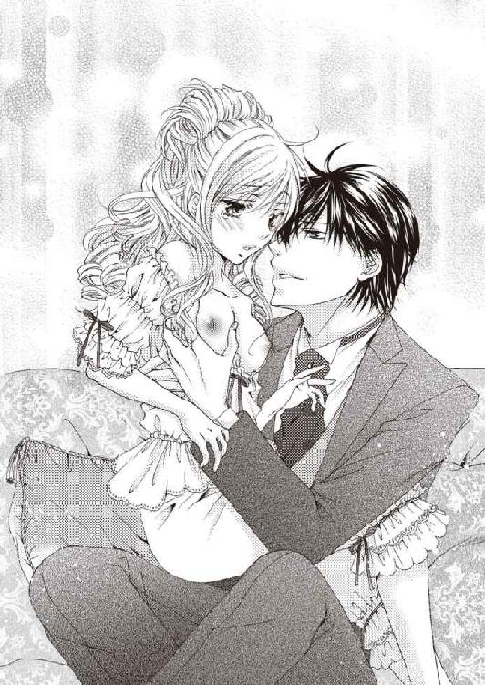
心地いい強さでそこを吸われ、唇でそっと側面を挟まれ、舌先で先端をくすぐられた。
「ああんっ！」
舐められ、吸われている場所を震源にして、痺れるような快感が全身に広がっていく。
抱き支えてくれる手が反対の胸を揉み、乳首をつまんで捏ね回す。
もう一方の手は、白い肌着の裾をまくって腰をさすっている。
次第に呼吸が荒くなり、体の芯が熱く疼いて、ルイーズは切なさのあまり喘がずにはいられない。
「ああんっ、ダメ......。おかしくなるわ......」
思わずそう訴えると、メイヤー子爵が唇を離し、吐息で素肌をくすぐりながら囁く。
「それでいいのです。睦み合う男女が、平静でいられるほうがどうかしている」
再び乳首を銜えられ、舌を先端に押し当てて吸われる。
恍惚と快感に浸っていると、さっきまで腰をさすっていた手がじわじわと腹部に回り、止める間もなくドロワーズの中に潜り込み、股の間の恥ずかしい場所を指でなぞった。
「いや......っ！ そんなところ、触らないで......！」
ルイーズが羞恥と恐怖に竦み上がって拒絶の言葉を口にすると、メイヤー子爵は優しい声で宥めるように言い聞かせる。
「あなたがどれほど私の愛撫に感じているか、確かめただけですよ。女性はこうして愛撫を受けていると、男の欲望を受け入れるために、体が準備を始める。とろりとした蜜がここからあふれ出て、ドロワーズを濡らしてしまうのです」
そういえば、確かにそこが、じんわりと温かく湿ってきたようだ。
メイヤー子爵が魅惑的な微笑みを浮かべ、唆すように言う。
「早くドロワーズを脱がないと、あふれた蜜が染みを作って、あとで侍女や洗濯女中に気づかれるかもしれませんよ。あなたがこうして、私と淫らなことをしていたと......」
「そんな......。困るわ」
若い未婚のレディが、婚約者でもない殿方とこんなことをしているなんて──万が一にも知られるわけにはいかない。
「汚れては困るでしょう？ ドロワーズを脱がせますよ？ 大丈夫。あなたが怖がるようなことはしませんから、安心してください」
メイヤー子爵はそう言いながら、有無を言わさず、ルイーズの下穿きも、腰に巻きついている短い袖の肌着も、片手で器用に脱がしてしまう。
「ああっ、イヤ......！」
羞恥のあまり、脚を閉じて両手で股間を覆い隠すと、メイヤー子爵が片手で易々とルイーズの両手をつかんで持ち上げる。
「隠さないで。あなたの秘密を、私だけに見せてください」
「......恥ずかしいわ」
「とてもきれいですよ。華やかなドレスや宝石を身につけたあなたも美しいが、何もつけていない姿が、男にとっては、最も美しく、好ましく見えるものです」
メイヤー子爵は空いている手で、ルイーズの下腹部のさらに下──淡い金色の草むらに掌を押し当て、指先を股の間に忍び込ませた。
谷間に潜む敏感な場所に触れている指が、小刻みに振動し始める。
「あああ......っ！」
ルイーズは、生まれて初めて体験するその刺激に悲鳴を上げ、陸に揚げられた魚のように身を震わせた。
自分の体なのに、感電したみたいに痺れて、思い通りに動いてくれない。
目の前が真っ白になって、恥ずかしいなどと考える余裕さえなくなってしまった。
ルイーズがその感覚を快感だと認識したのは、しばらく経ってからだ。
メイヤー子爵は、ルイーズの淡い茂みに覆われたなだらかな丘に掌を押し当てたまま、深い裂け目の中に指先を入れ、そこを優しくかき回す。
巧みに動く指先が生み出す淫らな刺激は、ルイーズを官能の渦に巻き込んでいく。
「ああんっ！ あっ！ ア......！」
「とても可愛らしいですよ、レディ・ルイーズ」
彼の優しい眼差しと、艶のあるかすれた声で囁かれる称賛の声が、ルイーズを妙に安心させた。
体の芯が締め付けられるような熱い疼きを覚え、裂け目の奥から蜜が滴り、まるで内側から溶かされているような心地さえする。
メイヤー子爵が、ずっとつかんでいた両手を解放してくれたが、ルイーズには、もはや抵抗する気力など残っていない。
おとなしく彼の愛撫に身を任せていると、メイヤー子爵は空いたその手で、再びルイーズの胸をまさぐり始めた。
「ひぁ......んっ！」
二箇所同時に責められて、ルイーズは快感のあまり息を呑み、切なく身を震わせる。
「もっとあなたの可愛い声を聞かせて......。普段は清楚で清らかなあなたが、私の愛撫に感じて悦ぶ姿が見たい......」
メイヤー子爵は慈しむように微笑みながら囁いた。
淫らな言葉に戸惑ったのは、ほんの一瞬。こうして自分が愛撫に悶える姿を見て、彼はとても喜んでいる。そう思ったら嬉しくて、ルイーズは、このまま乱れるほどに感じて、悶えて、何も判らなくなるほど狂ってしまいたいとさえ思った。
ルイーズは、「ああ......」とため息をつき、心の中で愛しい人に語りかける。
（あなたをお慕いしています。ロード・メイヤー......）
それは決して告げることのできない想い。
だから言葉にはせず、眼差しで伝えた。
「可愛い......。あなたの何もかもが、可愛くてたまらない......」
メイヤー子爵がまた艶のある声で囁いて、ルイーズの頬にそっと口づける。
優しく唇をついばまれ、しっとりと吸われ、ルイーズも情熱的にキスを返した。
いっそ触れ合う唇から、彼と一つに溶けあえたらいいのに──。
貪り合うように口づけたあと、メイヤー子爵の唇がゆっくりとルイーズの首筋を辿り、胸の頂へ向かう。
ルイーズは身も心もとろけきって、うっとりと彼の愛撫に溺れ続けた。
◆ ◆ ◆
朝食の席でメイヤー子爵から、『ヘルメスの被害に遭った』という話を聞かされ、ベアトリスは慌てて自分の私室に戻り、ベアトリス付きの使用人たちと手分けして更衣室をひっくり返し、貴重品の所在を確かめた。しかし、宝石類などの貴重品が盗まれた形跡はない。
ほっとしたところへ、『メイヤー子爵が出かける支度を始めたら知らせるように』と命じておいた馬丁からの伝言を、小間使いの少女が伝えに来た。
ルイーズに会いに行くのではないかと疑惑に駆られ、ベアトリスは慌てて玄関へ向かったが──彼の行き先は警察。どうやらこの屋敷で盗難に遭ったわけではないようだ。
しかし、警察に行ったあと、ワトフォード伯爵邸へ立ち寄るかもしれない。
メイヤー子爵を問い質したい衝動に駆られたが、恋人ではないベアトリスにそこまでする権利はない。
何も聞かずに彼を見送り、肩を落として部屋へ戻ると、侍女が母からの伝言を告げた。
それは先ほどメイヤー子爵から聞いた話と同じ内容だ。
更衣室はまだ散らかったまま。徒労の虚しさが苛立ちを倍増させ、憤りが爆発した。
「うちで盗難被害に遭ったわけじゃないと判ったなら、のんびりサボっていないで、さっさと部屋を片付けなさい！」
サボっていたというのは言いがかりだ。ベアトリスがこの部屋を出てから、そう長くは経っていない。それは判っていたが、八つ当たりせずにはいられなかった。
「申し訳ありません、お嬢様！ すぐに片付けます！」
「片付けより先に、お茶でも持ってきて！ 本当に、気が利かないわね！」
憐れな侍女は萎縮しながらお茶を運び、緊張のあまり手を滑らせて、またベアトリスを苛立たせるという悪循環を繰り返す。
「本当に鈍間ね！ 厨房の皿洗い係から仕事を覚えなおしたほうがいいんじゃなくて!?」
侍女は女性使用人の中でも別格の、上級使用人だ。なのに、奉公を始めたばかりの少女たちが就くお端仕事への配置換えを匂わされ、呆然としている
侍女に当り散らしても気分は晴れず、ベアトリスはずっと苛々し通しだ。
午後三時頃、ようやくメイヤー子爵が戻ってきたと思ったら、今度は兄と一緒に殿方の社交場──美術品愛好家クラブへ出かけてしまった。
彼を振り向かせたいのに、同じ屋根の下に住んでいても、二人でゆっくり話す時がないのだから、どうしようもない。
いや──むしろベアトリスは、ワトフォード伯爵邸の絵画の話を聞いたときから、『メイヤー子爵はルイーズといい仲になって、自分はそれとなく距離を置かれているのではないか』という疑念すら抱き始めている。
気のせいならいいけれど、そうでないなら、早急に手を打たなければ。
（あんな人に、メイヤー子爵を取られてなるものですか！）
ベアトリスは従者だけを連れ、一人で馬車に乗って出かけた。行き先はもちろん、ワトフォード伯爵邸だ。
◆ ◆ ◆
メイヤー子爵は、これからいろいろやるべきことがあるらしい。「名残惜しい」と囁きながら、元通りルイーズにドレスを着せ、別れを告げて帰っていった。
ルイーズは自室の客間兼居間で椅子に腰かけ、ぼんやりと物思いに耽っている。
目を閉じれば脳裏に浮かぶ、優しく微笑む端正な顔。艶を帯びた囁き声。巧みに動く温かくて大きな手。柔らかい唇や、熱い吐息が肌をくすぐる感触──そのすべてが、今もはっきりと思い出されて、夢見心地が抜けない。
殿方の前で裸になったのも、あんな恥ずかしいところを触られたのも、あれほどの快感を味わったのも、記憶にある限り初めての経験だ。
求められるまま、何もかも曝け出すのは怖かったけれど、一度経験してみると、それほど恐れることではなかったような気がする。恥ずかしさは変わらないが、男女の交わりを闇雲に恐れ、忌避する気持ちはすっかり消え失せた。
できればもう少しそばにいてほしかったが、メイヤー子爵は、盗まれた宝物の行方を追っている。そしておそらく、ルイーズのために奔走しているせいで、忙しさが増しているのだろう。淋しいなんて、我儘は言えない。
気分転換に散歩でもしたいところだが、ついさっき、外出を控えるよう注意されたばかりだ。
一人で退屈していると、控えの間に待機させていた侍女が、客間兼居間に入室して告げる。
「お嬢様。ペンザンス伯爵令嬢がお見えになっていらっしゃいます」
「レディ・ベアトリスが......？」
不意の来客が同年代のレディとあって、ルイーズはとても喜んだ。
急いでおもてなしの準備をするよう侍女に言いつけ、応接室へ向かう。
ルイーズが入室すると、品よくソファに座って待っていたベアトリスが、あでやかに微笑んで挨拶する。
「ごきげんよう、レディ・ルイーズ。昨日は慌ただしく帰ることになってしまって、ごめんなさいね」
「いえ......それより、ロード・ペンザンスのお加減はいかがです？」
「具合が悪くなったといっても、大したことはなかったみたい。今朝は元気そうにしていたわ」
「そう。よかった......」
ルイーズは安堵し、改めてベアトリスに笑顔を向けて言う。
「あなたがまた来てくださって嬉しいわ。昨日はほとんどお話できないまま、お見送りすることになってしまって、とても残念に思っていたの」
「私も。同年代のレディと親しくなるいい機会だと、すごく楽しみにしていましたのよ。だから今日、改めてお邪魔したの。突然ご迷惑じゃないかとも思ったのだけど......」
ベアトリスも自分と同じ気持ちだったと知って、ルイーズはますます喜んだ。
「迷惑だなんてとんでもない！ 本当に嬉しいわ。ぜひ私とお友達になってください」
「もちろんです。これから仲良くしましょうね」
二人は互いの趣味嗜好を訊ね合い、若い娘らしく、流行りのドレスの話題などで盛り上がった。
打ち解けた雰囲気で話していると、ベアトリスがふと思い出した様子で表情を引き締め、ためらいがちにルイーズに問う。
「......そういえば、巷を騒がせている盗賊ヘルメスに、レディ・ワトフォードの形見のジュエリーが盗まれた──って噂、本当ですの？」
ルイーズも真顔に戻って頷いた。
「ええ。デビュタントボールに出席する支度をしていたとき、盗まれたことに気づいたの。とてもきれいなインテンスピンクダイヤのパリュールで、私と父にとっては、かけがえのない思い出の品だったのに......」
「......そのパリュール、もしかして、回廊に飾ってあった肖像画に描かれていた......？」
「ええ。そうよ。あれは母方の祖父が、母の十六歳の誕生日に贈った品なの。母はあれをつけて社交界デビューしたんですって。私もそうするつもりで楽しみにしていたのに......公式の場では、一度も身につけられなかったわ。今はもう、母の肖像画でしか見ることもできないの......」
項垂れたルイーズを見て、ベアトリスが心底同情した声で言う。
「お気の毒に......。人のものを盗むなんて、最低の行為だわ。許せない！ ヘルメスなんて、早く捕まってしまえばいいのよ」
「そうね。これ以上、被害者が増えないことを祈るわ」
ルイーズがそう言葉を返した直後、ベアトリスが柳眉をひそめた。
「腹立たしいことに、ほかにもヘルメスの被害が出ているの。ロード・メイヤーが、ロンドンで手に入れたジュエリーを盗まれたんですって。よそのお宅で被害に遭われたようですけど、最初は我が家にまでヘルメスが侵入していたのかと、慌てふためきました」
「え......？」
今ベアトリスは、何か引っかかる言葉を言わなかっただろうか？
そのことについて、ベアトリスがもう一度、はっきりと口にする。
「ロード・メイヤーは、今うちのロンドン邸で暮らしているの。家族ぐるみのお付き合いなのよ。兄ととても仲がいいし、父も私の結婚相手として、彼を気に入っているわ。しばらく婚約者としてお付き合いを続けて、ゆくゆくは、彼と結婚するつもり。結婚式には、レディ・ルイーズもご招待しますわ。お祝いに来てくださるでしょう？」
メイヤー子爵は、ベアトリスとは特別な関係ではないと言っていた。
けれど実際には、ペンザンス伯爵家のロンドン邸に滞在し、婚約者として家族ぐるみの付き合いをして、夜会に出るパートナーとして、ベアトリスをエスコートしている──。
結婚式の話まで出るくらいだから、二人の仲はかなり進展しているのだろう。
もしかしたら、彼はルイーズにしたようなことを、ベアトリスともしているのかもしれない。
巧みにルイーズを口説いて脱がせた手管からして、相当場数を踏んでいるのではあるまいか？
そう思ったら、さっきまで夢見心地で浸っていた幸せな記憶が、急激に色褪せていく。
ベアトリスは嬉しそうに、聞きたくもない惚気話を始めた。
「初めて彼にダンスを申し込まれたとき、私、運命を感じたの。『絶対この人と結婚する』って思ったわ。あなたは？ そういうお相手がいらっしゃる？」
無邪気に微笑む彼女が、嘘をついているとは思えない。
（メイヤー子爵は彼女と婚約していながら、嘘をついて、私を口説いていたのね......。なんて不実な方......）
けれどルイーズに、彼を責める資格はない。メイヤー子爵との関係は、ルイーズの結婚相手が決まるまでの恋人ごっこにすぎないのだから。
不実だと彼を責める権利があるのは、婚約者であるベアトリスだけ。むしろルイーズは、不実な遊びの共犯者。ともに責められる立場だ。
『人のものを盗むなんて、最低の行為だわ。許せない！』
ヘルメスに向けられた非難の言葉が、今のルイーズには、自分に向けられた言葉のように思えて居たたまれない。
（......ごめんなさい、レディ・ベアトリス。私、あなたに申し訳ないことをしてしまったわ......）
ルイーズは後ろめたさに怯え、ベアトリスの顔をまともに見ることができなくなった。
（もう終わりにしなければ......）
せっかく友達になってくれた彼女を、傷つけたくない。
「私は......家の事情で、父が選んだ花婿候補の中から結婚相手を選ばなければならないの」
ルイーズは、ベアトリスにそう答えることで、自分自身に言い聞かせた。自分がメイヤー子爵と結ばれることは、絶対にあり得ないのだと──。
美術品愛好家クラブ主催のマスクドボールを隠れ蓑にして、同日、同じ場所で開催されている、特別会員限定の闇オークション。
その出品物は、オークションが開催される一週間前から、すでに会場へ続く隠し扉の向こう側にある展示場に展示されている。
メイヤー子爵ことアーネストは、足繁くそこへ通って盗品を記憶し、ヘルメスの被害に遭った貴族のもとへ足を運んで、持ち主を捜した。
いくつかの盗品に関しては、すでに本来の所有者と思しき人物の見当がついている。
絶好のタイミングで、美術品愛好家クラブ経営者宅に潜入していた配下の者から、『ミッドランズ公爵のシグネットリングを発見した』という知らせも入ってきた。
そこでアーネストは、配下の私設警察隊を二手に分け、目星をつけていた窃盗団ヘルメスの隠れ家と、美術品愛好家クラブへ同時に差し向け、盗品売買組織の一斉逮捕に踏み切ったのだ。
美術品愛好家クラブ摘発の陣頭指揮を取ったのは、素性を偽り、特別会員として潜入捜査に携わっていたアーネスト自身。
クラブ経営者宅に潜入していた捜査員には、同日、ミッドランズ公爵のシグネットリングを回収し、引き上げるよう命じている。
こうしてアーネストは、ヘルメスに盗まれた品を無事取り戻し、巷を騒がせている盗賊と、盗品売買組織を一網打尽に捕らえることに成功した。
あとは治安判事が刑務所に収監している罪人たちを裁き、相応の刑──おそらく公開絞首刑を執行するだけだ。
窃盗団ヘルメスが逮捕され、美術品愛好家クラブが盗品売買の容疑で摘発されたことは、すぐに新聞で報道された。
今頃盗品に入札した特別会員たちは、自分に累が及ばないかと不安に駆られ、戦々恐々としているだろう。
ペンザンス伯爵もその一人。蒼褪めた顔でアーネストに訊ねた。
「ロード・メイヤー。君はあのオークションで、訳ありの品に入札してはいないのか？」
アーネストは涼しい顔で否定する。
「いいえ。私があそこで手に入れたのは、なんら後ろ暗いところのないジュエリーです」
するとペンザンス伯爵は、「そうか......」と呟き、あからさまに落胆した。仲間がいれば、少しは心強いと考えたのだろう。
「私はこれから、闇オークションを紹介してくれた特別会員のところへ、今後のことを相談しに行くが......君はどうする？」
そう聞かれて、アーネストは内心苦笑しながら答えた。
「私は用事があるので、遠慮しておきます」
用事というのはルイーズに、ヘルメス逮捕と、盗品売買組織摘発のあらましを報告しに行くことだ。
このところ忙しくて、しばらく顔を合わせていないが──彼女は元気にしているだろうか？
久しぶりにワトフォード伯爵邸を訪れたアーネストは、取り次いだ執事に応接室へ通され、ルイーズが現れるのを今か今かと楽しみに待っていた。
しばらくしてルイーズが応接室に現れたが、今日はなんとなく精彩を欠いているように見える。清楚でおとなしい印象を受けるグレーのドレスのせいかとも思ったが、決してグレーのドレスが似合っていないわけではない。
アーネストは釈然としない思いを抱きながらも、本題を切り出した。
「レディ・ルイーズ。すでに新聞で報道されていますが、窃盗団ヘルメスが逮捕され、美術品愛好家クラブが盗品売買容疑で摘発されたことはご存知ですか？」
「ええ。これで少しは盗難被害が未然に防げるでしょう。よかったですわ」
そう答えたルイーズの声も、いつもより元気がないような気がする。
「配下の私設警察隊を率いて美術品愛好家クラブを摘発する前に、特別展示場に展示されていた盗品の、本来の所有者を割り出しておいたのです。私が捜していたものは、美術品愛好家クラブ経営者の自宅にありました。奴らに言い逃れする余地はありません。盗品売買組織を一斉逮捕できたので、もうあなたが攫われる危険性はなくなりました。これからは、安心して外出できますよ」
アーネストが自信を持って言い切ると、ルイーズはようやく、ほっとしたような、儚げな微笑みを浮かべた。
「ありがとうございます、ロード・メイヤー」
「感謝の気持ちはあなたの部屋で、ゆっくり聞かせてください」
アーネストは最後にここへ来た日のように、ルイーズと二人きりで、親密に過ごすつもりだったが──思いもよらないことに、ルイーズは静かに否定の形に首を振る。
「もう......恋人ごっこなんてやめましょう」
ルイーズの素肌に触れたあの日、彼女はアーネストの愛撫を受け入れていた。無理強いしたわけではなかったはずだ。
「なぜ急に、そのようなことをおっしゃるのです？」
アーネストの問いに、ルイーズは責めるような、悲しい声で答える。
「それはあなたが、一番よくご存知ではなくて？」
「判りません。もう結婚相手を決められたのですか？」
アーネストは恋人ごっこを持ちかけたとき、ルイーズの結婚相手が決まったら、潔く身を引くと約束していた。だからもし、結婚相手が決まったというなら、これ以上彼女を困らせるようなことは言えないが──どうも、そういう雰囲気ではなさそうだ。
「......それはあなたでしょう」
ルイーズが漏らした微かな呟きを、アーネストは聞き逃さなかった。
「どういう意味です？」
「おとぼけにならないで。ゆくゆくはレディ・ベアトリスと、結婚なさるご予定なのでしょう？」
「レディ・ベアトリスと私が結婚......？ いったい誰が、そんな根も葉もない戯言を、あなたの耳に吹き込んだのですか？」
アーネストが問い返すと、ルイーズは静かに目を伏せ、答えにくそうに逡巡しながら打ち明ける。
「............レディ・ベアトリスご本人から伺いました。あなたは今、ペンザンス伯爵邸で暮らしているのでしょう？ レディ・ベアトリスの結婚相手として、ロード・ペンザンスに気に入られているそうね」
まさかベアトリスが、ルイーズにそんなでたらめを吹き込むとは思ってもいなかった。
「冗談じゃありません！ 確かに私は、ペンザンス伯爵のロンドン邸でご厄介になっていますが、それはあくまでも、ロード・オールウィンの友人としてです！」
「でも......レディ・ベアトリスは、あなたと結婚するおつもりよ。あなたに初めてダンスを申し込まれたとき、結婚する運命を感じたって......」
「それは彼女の思い込みにすぎません！ ダンスなら、初めてあなたと出逢ったマスクドボールで、あなたにも申し込んだでしょう！ それくらいで婚約者扱いされていたら、いったい何人婚約者がいることになるか......」
確かにペンザンス伯爵一家に近づいたとき、ベアトリスにダンスを申し込むことで、足がかりを得たけれど──これだけは胸を張って誓える。アーネストは今日まで、一度たりともベアトリスを口説いたことなどないのだ。
◆ ◆ ◆
メイヤー子爵は、ベアトリスとの結婚話はでたらめだと言う。
でも、ベアトリスは疑うことを知らないような無邪気さで、彼と結婚する予定を語った。
いったいどちらの言葉を信じればいいのだろう？
ますます混乱するばかりだが、ただ一つ言える確かなことは、ルイーズとメイヤー子爵は、本当の恋人同士ではないということだけ。
窃盗団ヘルメスが盗品売買組織ともども逮捕され、メイヤー子爵が捜していた『大切なもの』も見つかったようだ。社交シーズンが終わったら、彼はバーンズリー伯爵家の領地がある田舎へ帰って、ロンドンでの戯れの恋の相手など、思い出に変えてしまうだろう。
ルイーズとて、なるべく早く、ワトフォード伯爵が選んだ花婿候補の中から、誰か一人を選んで結婚しなければならない。
結ばれない運命の二人が、いつまでもこんな関係を続けるなんて不毛すぎる。
これ以上彼を好きになって、別れがもっとつらくなる前に、すべて終わらせてしまわなければ──。
ルイーズは覚悟を決め、改めてメイヤー子爵に切り出した。
「レディ・ベアトリスとあなたの婚約が、彼女の嘘だとしても......」
そこまで口にしたところで、ルイーズは近づいてきた馬車の音に気をとられ、窓の外に目を向ける。
白いレースのカーテン越しに、一頭立て二輪幌馬車が、玄関先に止まるのが見えた。
辻馬車に乗っている客は、行方知れずとなっていた父だ。
「お父様......！」
ルイーズは別れ話を中断して応接室から飛び出し、玄関の外へ出た。
「お父様！ お父様......っ！」
父も娘の姿を目にして微笑み、その名を呼んだ。
「ルイーズ！」
久しぶりに再会した父と娘は、玄関先でひしと抱き合う。
「心配していたのよ、お父様。帰って来てくれてよかった......」
ルイーズが涙ながらにそう言うと、父ワトフォード伯爵は、あやすように娘の背中を優しく撫で、しみじみと語りかける。
「心配をかけてすまなかったね、ルイーズ。新聞で盗賊ヘルメスと盗品売買組織が逮捕されたと知って、これでも急いで返ってきたんだよ」
使用人たちも玄関に集まってきて、帰宅した主人を笑顔で出迎えた。
メイヤー子爵も応接室から出てきて、ワトフォード伯爵に挨拶する。
「お初にお目にかかります、ロード・ワトフォード」
ワトフォード伯爵は、メイヤー子爵に見覚えがあるようだ。
「あなたは......確かミッドランズ公爵家の......」
どうやら人違いをしているらしい。ルイーズは父に彼を紹介することにした。
「お父様。この方は、バーンズリー伯爵家のご長男で、メイヤー子爵──」
そこまで口にしたところで、メイヤー子爵がルイーズの言葉を遮る。
「......違うんです、レディ・ルイーズ。盗難事件が解決した今、いつ言おうか、いつ言おうかと迷っていたのですが......私はメイヤー子爵ロバートではありません。本当の名は、バーミンガム侯爵アーネスト・グレンジャー。ミッドランズ公爵の嫡男です」
「え......？」
ルイーズは彼を、ずっとバーンズリー伯爵の後継者だと信じて疑わなかったが、本当は、ミッドランズ公爵の後継者だったのだ。
「騙すつもりはなかったのですが......私は、ヘルメスが公爵家から盗んでいったものを取り戻し、盗品売買組織もろとも一網打尽に取り押さえるため、女王陛下の命を受けた父の指示で、遠縁に当たるロード・メイヤーの名を借りて、潜入捜査をしていたのです」
まさか彼自身の存在からして虚像に過ぎなかったとは──驚きのあまり言葉も出ない。
ルイーズが呆然と立ち尽くしていると、父ワトフォード伯爵が言う。
「玄関前で立ち話では落ち着かない。詳しい話は応接室でしましょう」
父は混乱しているルイーズの肩を抱いて促し、先に立ってバーミンガム侯爵を玄関脇の応接室へ案内した。
◆ ◆ ◆
バーミンガム侯爵アーネストは、ワトフォード伯爵父娘と差し向かいでソファに座り、ワトフォード伯爵にも解るよう、改めて事件の顛末を語った。
「事の発端は、巷を騒がせていた盗賊ヘルメスに、ミッドランズ公爵のジュエリーが盗まれた事件です。私は、美術品愛好家クラブで盗品を扱う闇オークションが行われているという噂を聞き、女王陛下が父に下された私設警察の封緘特許状を預かり、闇オークションの参加資格を持つ特別会員となって、美術品愛好家クラブを内偵しました。その結果、美術品愛好家クラブが紛れもなく盗賊ヘルメスとつながっている証拠──すなわち、当家から盗み出されたアレキサンドライトのブローチが、闇オークションに出品されていたことを、この目で確かめたのです」
ルイーズと出逢ったのはそのときだが、彼女が美術品愛好家クラブのマスクドボールに行ったことは、侍女しか知らないらしい。家の者に知られては困るようだから、そこは適当にごまかすことにした。
「レディ・ワトフォードの形見の品──ピンクダイヤのパリュールがヘルメスに盗まれたことや、闇オークションにピンクダイヤのパリュールが出品されたことを知り、私はその二つが同じものではないかと疑いました。そこで、レディ・ルイーズにご協力いただいて、そのオークションに参加していた人物に、レディ・ワトフォードの肖像画をお見せしたのです。予想通り、『オークションに出品されたパリュールは、肖像画に描かれているパリュールと同じ形をしていた』という証言が得られました」
アーネストの話を黙って聞いていたワトフォード伯爵が、そこで始めて、愁いを帯びた表情でぽつりと呟く。
「......やはり、シルヴィアのパリュールは、あそこでオークションにかけられていたのですね......」
「ええ。ロード・ワトフォードも、美術品愛好家クラブが怪しいと睨んでおいでだったのでしょう？ 従業員として美術品愛好家クラブに潜入させた配下の者から、『ロード・ワトフォードがオークション会場に潜入し、外部に漏れては都合の悪い話を聞いてしまったようだ』と報告を受けています。あなたはあそこで、いったい何を聞かれたのです？」
今度はワトフォード伯爵が、行方不明になった顛末を打ち明ける番だ。
「私は、盗品売買業者を捜しているうちに、美術品愛好家クラブの噂を耳にしました。そして、オークションにのめり込み過ぎて金銭的に困っていた特別会員から、闇オークションの招待状を買い取ったのです」
闇オークション当日、美術品愛好家クラブは、仮面で素顔を隠したマスクドボールの招待客で賑わっている。
プライバシー保護のため、オークション会場でも仮面をつけたままだから、招待状さえ持っていれば、素性を隠して会場内に入ることは可能だ。
「マスクドボールの招待客に紛れ、特別会員になりすましてオークション会場に潜入した私は、偶然オークション詐欺のからくりを聞いてしまった......」
そこでアーネストは、思わず身を乗り出して訊ねた。
「オークション詐欺？ やはりあの闇オークションには、からくりがあったのですね？」
「ええ。『サザビーズ方式より、入札者にとって良心的』というのが売り文句の、入札額の繰り戻し相殺システムですが──あれは顧客に『落札に失敗しても、無駄に払った金額がいずれ戻ってくる』という安心感を与えるための餌でしかない。顧客は金銭的に無理をしてでもオークションに参加し、安易に入札してしまう。入札が増えれば、当然落札価格が上がる。おまけに、従業員が顧客の中に紛れ込んで、意図的に価格を吊り上げているのだから、なおさら性質が悪い」
ワトフォード伯爵が呆れた様子でため息をつき、アーネストも相槌を打つ。
「入札額の繰り戻し相殺システムの罠には、私も薄々感づいていました。やはり不正入札も行われていたのですね。闇オークションの参加者は、互いに顔が見えないよう仮面を着けているが、招待状に記されている番号で、主催者には誰が入札したか解っている。決済用銀行口座の預金残高を考慮しながら、ギリギリまで値を吊り上げているのではないかと疑っていました」
「それだけではありません。主催者側は、売るつもりのない商品を出品し、入札された金額を不正に搾取し、そこから第三者を装って貸付を行うことで利益を得ている。闇オークションの罠に嵌まった会員の中には、膨れ上がっていく借金返済に困窮し、結局売るに売れない訳ありの品を、闇オークションに再出品する者もいる。そうなると、クラブは出品手数料を二重取り、三重取りできるという仕組みです」
得をするのは盗品売買組織と、常に決済用口座に大口預金を確保できる銀行と、速やかに盗品を現金化できる窃盗団だけ──ということか。
「彼らの秘密を聞いてしまったことに気づかれ、私は口封じのために追われる身となりました。新聞で事件の終結が報道されるまで、ずっと安全な場所に身を隠していたのです」
「今の話を、法廷で証言していただけますか？」
アーネストの要請に、ワトフォード伯爵は快く応じてくれた。
これでヘルメスによる盗難事件と、盗品売買の組織犯罪事件、ワトフォード伯爵の行方不明事件は、ほぼ解決したと言える。
残っているのは、あの問題だけだ。
「......これは、まだレディ・ルイーズにもお伝えしていないことですが──」
アーネストはそこで言い淀み、ためらいがちに告白する。
「実は......私は、闇オークションに出品されたピンクダイヤのパリュールを、落札した人物を突き止めたのです」
父と娘が、それを聞いて同時に叫んだ。
「いったい誰が......!?」
話せば長くなってしまう。段階を追って説明するため、アーネストは、ルイーズに話を振ることにした。
「闇オークションでピンクダイヤのパリュールを見た人物に、レディ・ワトフォードの肖像画をお見せするため、こちらでティーパーティーを開いていただきましたね」
「ええ......」
「そのとき、レディ・ワトフォードの肖像画を見て顔色を変え、ひどく動揺して、早々に帰られた方がいらっしゃった。どなたかお判りですね？」
お茶会の前に『帰る』と言い出した客は、一人しかいない。
ルイーズは震える声で、その名を口にする。
「まさか......ロード・ペンザンスが......？」
「そうです。私は彼が怪しいと睨んで、ミッドランズ公爵家に残されていたヘルメスの名刺を見せて、一芝居打ちました」
アーネストはペンザンス伯爵邸で、事実を含んだ偽の情報を流したのだ。『巷を騒がせている盗賊ヘルメスに、レディ・ワトフォードの形見のジュエリーが盗まれたという話を聞き、念のためジュエリーケースを確認したら、自分もつい最近、ロンドンで手に入れたレアストーンジュエリーを盗まれていた。どこで盗まれたのか判らない。ペンザンス伯爵邸では、ヘルメスによる盗難被害はなかったか？』と。
「ロード・ペンザンスは、慌てて金庫に隠していた、ピンクダイヤのパリュールを出して確認しました。私はその現場を目撃したのです」
アーネストは、自分がそれをほしがっているふりをして、ペンザンス伯爵に『買い取りたい』と持ちかけてみたが、あっさり断わられた。
ペンザンス伯爵は、高値で転売するつもりで、高価なパリュールを落札したわけではないらしい。
別のジュエリーに仕立てなおして使うつもりもないという。
そして、『善意の第三者として、本来の持ち主に返すつもりもない』と言い切った。
彼がどういう目的でピンクダイヤのパリュールを落札したのか、さっぱり判らない。
「ロード・ペンザンスは、『私がこれをどうしようと、君には関係ない。差し出口を挟むな』とお怒りになり、私はそれ以上の追求や説得を諦めて、様子をうかがうことにしました。今のところ、まだペンザンス伯爵邸から、あれを持ちだした形跡はないようです」
ワトフォード伯爵は、アーネストの話を聞きながら難しい顔で考え込み、やがて静かに口を開いた。
「交渉に応じてもらえるかどうか判らないが、一度私からも、ロード・ペンザンスに、『妻の形見を返してほしい』と頼んでみたい。一緒にペンザンス伯爵邸へ行って、交渉に立ち会っていただけませんか？」
「そうですね。窃盗団ヘルメスが逮捕され、盗品売買組織が摘発された今なら、女王陛下の封緘特許状を見せて、盗品を押収することもできます。しかし、できればそれは最終手段にしたい。特別会員の中には、王族や有力貴族の関係者もいました」
「あまり事を荒立てたくない──ということですね？」
「ええ。盗品には、『訳ありの品』を示す記号がついていただけです。その記号の意味に、特別会員はみな気づいていたと思いますが、はっきり盗品だと説明を受けたわけじゃない。『盗品とは知らなかった』と主張し、落札商品を被害者にお返しすれば、厳罰に処されることはないでしょう。ロード・ペンザンスは、美術品愛好家クラブが摘発されたことで、動揺しています。話の運びようによっては、素直に返還要求に応じるかもしれません。今からペンザンス伯爵邸へ行きましょう」
二人の会話を聞いていたルイーズが、勢い込んで口を挟む。
「どうか私も連れて行ってください！」
「では、表向きの訪問理由は、レディ・ルイーズが友人となったレディ・ベアトリスに会いに行くこと。ロード・ワトフォードは父親として挨拶するため、付き添って来たという筋書きで同行してください。私はペンザンス伯爵邸に長期滞在している客。私の馬車で行けば、ロード・ペンザンスが帰宅した際、新たな客の存在に気づかないかもしれません」
ワトフォード伯爵は、すぐにアーネストの意図を察したようだ。
「なるほど。ロード・ペンザンスは、『落札したピンクダイヤのパリュールを、本来の持ち主に返すつもりはない』と言っていた。となると、私とルイーズが正面から会いに行っても、彼に避けられる可能性が高い。だから、まずレディ・ベアトリスを訪ねて、とにかく客として、邸内に入ってしまおうというわけですね？」
「ええ。ロード・ペンザンスは、今ちょうど外出しています。上手くいけば不意打ちで交渉の席に着かせることができるでしょう」
アーネストはワトフォード伯爵父娘を馬車に乗せ、ペンザンス伯爵邸へ向かった。
◆ ◆ ◆
バーンズリー伯爵家の馬車が、ペンザンス伯爵邸の門をくぐって、玄関へ向かっている。
二階の窓からそれを見ていたベアトリスは、侍女の手を借りて身だしなみを整え、彼と顔を合わせるために、階下へ降りていった。
ベアトリスに気づいた応接係の使用人が、急ぎ足でこちらへ来て告げる。
「お嬢様。奥様とメイヤー子爵が応接室でお待ちです」
わざわざ呼ばれたということは、良い話か、悪い話のどちらかだ。
現時点ではまだどちらか判らないが、これで格好つけて偶然を装ったり、もっともらしい口実を作ったりして、メイヤー子爵に会いに行く必要はなくなった。
ベアトリスは、心持ち急いで応接室へ向かい、一度新呼吸して、澄まし顔でドアを開けた。
その瞬間、意外な人物の姿を目にして呆然と呟く。
「レディ・ルイーズ......」
彼女が来ているとは聞いていない。いったい何をしにきたのだろう？
後ろ暗いところのあるベアトリスは、身構えずにはいられない。自分がついた嘘を、ルイーズがメイヤー子爵に問い質し、真実を知って非難しに来たのではないかと──。
一人掛けのソファに座っているメイヤー子爵が、ベアトリスを見て清々しい笑顔で言う。
「ごきげんよう、レディ・ベアトリス。レディ・ルイーズが来たことを秘密にして、驚かせる計画は成功したようですね」
驚いたというより、驚愕したが──メイヤー子爵や母の様子からして、嘘が露見して叱られたり、責められたりする雰囲気ではない。
「こちらへ来て、お座りなさい」
和やかな笑顔で母に促され、ベアトリスは釈然としない気持ちを隠し、ルイーズと向かい合わせの席に腰を下ろした。
ルイーズの隣──母の正面に座っている、父より少し若い貴族らしき殿方が、静かに微笑みながらベアトリスに挨拶する。
「初めまして、レディ・ベアトリス。ルイーズの父、ワトフォード伯爵ダグラス・バーロウです。娘が仲よくしていただいているそうで......」
スマートな渋い美形のワトフォード伯爵は、確か病み上がりのはずだが、それにしてはやつれた様子がない。むしろ父より健康そうに見えるくらいだ。
隣に座っている母が、ワトフォード伯爵に話しかけた。
「先日、レディ・ルイーズがティーパーティーに招待してくださって、家族四人で、お宅へお邪魔しましたの。ベアトリスが、レディ・ルイーズとお近づきになれることをとても楽しみにしておりましたのに......夫が急に具合を悪くして、お茶をいただく前に帰ることになってしまって、本当に残念でしたわ」
その後ベアトリスが、一人でワトフォード伯爵邸を訪ねたことを、母は知らない。
知っているのは、レディ・ルイーズとベアトリスだけ──のはずだったが、メイヤー子爵も知っていた。
「レディ・ベアトリスは、翌日お一人で、ワトフォード伯爵邸へ遊びに行かれたそうですよ」
「まあ、そうでしたの？ よほどレディ・ルイーズにお会いしたかったのねぇ」
母の言葉に、メイヤー子爵が相槌を打つ。
「ええ。とても仲良くなって、二人でいろんな話をされたそうですよ」
妙に含みがある言い方だったような気がする。
やはり彼は、ベアトリスがルイーズに何を言ったか、知っているのだろうか？
気になってしょうがないけれど、まさか自ら馬脚を現すわけにもいかず、ベアトリスは黙って様子をうかがっていた。
ふと目が合って、ワトフォード伯爵がまた、にこやかに微笑みながら言う。
「これからもぜひ、娘と仲良くしてやってください。妻に先立たれ、私が過保護に育てすぎて、まだ友達と呼べる方は、レディ・ベアトリスしかいないのです」
「もちろんですわ、ロード・ワトフォード」
そう答えたのは、ベアトリスではなく、母だ。
ワトフォード伯爵は、今度は母に話しかけた。
「ロード・ペンザンスにもご挨拶したいのですが......今日はいつ頃お帰りになるご予定ですか？」
母は頼りなく首を傾げ、少し困った様子で答える。
「今日は『知人のところへ行く』と言って出かけたまま、まだ帰って来ておりませんの。どこへ行くとも、はっきり聞かされていなくて......」
するとそこで、メイヤー子爵が口を挟んだ。
「ロード・ペンザンスは、美術品愛好家クラブの特別会員に推薦してくださった方のところへ行かれたようですよ」
母がサッと顔色を変え、裏返った声で聞き返す。
「美術品愛好家クラブの、特別会員ですって!?」
美術品愛好家クラブは、今盗品売買容疑で摘発され、騒ぎの渦中にある社交クラブだ。
メイヤー子爵は穏やかな声で母に問う。
「レディ・ペンザンスは、ワトフォード伯爵邸の回廊で、レディ・ワトフォードの肖像画をご覧になりましたか？」
母は不安げに瞳を彷徨わせ、「いいえ」と首を横に振る。
「では、ワトフォード伯爵邸に盗賊ヘルメスが侵入し、レディ・ワトフォードの形見のパリュールを盗んだ話を、憶えておいでですか？」
「ええ......」
「実は、レディ・ワトフォードの肖像画には、盗まれたピンクダイヤのパリュールが描かれていたのです。そして、そのパリュールとそっくりの品を、ロード・ペンザンスは、美術品愛好家クラブの特別会員限定オークションで落札している」
ベアトリスは、自分がついた嘘が露見している可能性より、はるかに衝撃的な話を聞かされ、ただ呆然とするばかりだ。
母も戸惑い、震える声を絞り出す。
「......まさか夫が、盗品売買に関わっていたと......？」
メイヤー子爵は否定も肯定もせず、難しい顔をして言う。
「特別会員限定オークションは、表向きはクラブハウスでの一般公開に先駆けて、絵画やジュエリーなどを販売する催しです。ロード・ペンザンスは、まさか盗品だとは思いもせずに、ピンクダイヤのパリュールを落札なさったのかもしれません。しかし、特別会員限定オークションには、以前から黒い噂もあったので、ワトフォード伯爵邸でレディ・ワトフォードの肖像画を見て、あれが盗品である可能性に気づかれたのではないでしょうか？」
「だから夫は、あの日、急に蒼褪めて倒れそうになったと......？」
「あくまでも、私の推測ですが......」
黙って二人の会話を聞いていたワトフォード伯爵が、真摯な眼差しで母を見つめて提案する。
「もしロード・ペンザンスがお持ちのピンクダイヤのパリュールが、当家から盗まれた妻の形見の品なら、ぜひ買い取らせていただきたいのです。どうかレディ・ペンザンスからも、お口添えいただけませんか？」
ようやく彼らが今日ここへ来た目的が判った。やはり、ただ親睦を深めるために訪ねて来たわけではないのだ。
母はワトフォード伯爵の言葉に頷いた。
「......そうですね。夫が知らずに盗品を落札していたのなら、本来の持ち主にお返しするのが筋だと思います。とにかく、主人の帰宅を待ちましょう」
もし、万が一にも、父が盗品と知った上でそれを落札したとなれば、外聞が悪いどころの騒ぎではなくなってしまう。厄介なことにならなければいいが──。
◆ ◆ ◆
特別会員限定オークションは、表向きはクラブハウスの一般公開に先駆けて、絵画やジュエリーなどを販売する催し──そんなの、あくまでも建前に過ぎない。ペンザンス伯爵は間違いなく、盗品だと承知の上で、ピンクダイヤのパリュールを落札したのだ。
ペンザンス伯爵夫人は、事実はどうあれ、夫は盗品だと知らずに落札したことにして、なんとか体面を保ちたいと思っているはず。
あっては困る訳ありの品を、もとの所有者が買い取ってくれるなら、彼女にとっては渡りに船。角を立てないように根回ししておけば、きっと味方になってくれるだろう。
しばらくして、ようやくペンザンス伯爵が帰宅した。
アーネストはここへ戻ってきたとき、応接係の使用人に伝言を頼んでいる。
『ぜひお引き合わせしたいゲストをお連れしました。応接室でお待ちしています』
それを聞いてまっすぐ応接間へ向かったペンザンス伯爵は、アーネストが連れてきた客に気づいて顔色を変えた。
ペンザンス伯爵夫人が、不安げな顔で帰宅した夫を問い質す。
「あなた。美術品愛好家クラブの特別会員限定オークションで、盗品の疑いがあるジュエリーを落札なさったというのは、本当ですの？」
続いてワトフォード伯爵が告げた。
「ロード・ペンザンス。あなたがお持ちのピンクダイヤのパリュールを、ぜひ拝見させてください。もし当家から盗まれた妻の形見のジュエリーなら、ぜひ譲っていただきたいのです。むろん、あなたの言い値で買わせていただきます」
ルイーズも、泣きそうなほど潤んだ瞳で訴える。
「どうかお願いします。ロード・ペンザンス」
一瞬ペンザンス伯爵の瞳が揺れたが、硬く唇を引き結んだまま何も言わない。
「ロード・ペンザンス」
アーネストは彼に呼びかけ、自分のほうを向かせて、眼差しに無言の圧力を込めて説く。
「これはあなたの名誉に関わる問題です。いわくつきの品を抱えたままでは、あなたも寝覚めが悪いでしょう？ あれが盗まれたレディ・ワトフォードの形見の品か否か、一度確認していただいて、もし盗品なら、ロード・ワトフォードに買い取っていただいてはいかがです？ あるべき場所に戻りさえすれば、すべて丸く収まります。ワトフォード伯爵は、買い取りたいとおっしゃっているのですから、あなたも損はしませんよ」
盗品と承知の上で落札した──その切り札を握っている相手の言葉を、無視できるほど無謀な男ではあるまい。
「お願いします！ 盗まれた母の形見を、ずっと捜しているんです......！」
懇願するルイーズの、青く澄んだ清らかな瞳が、ついに頑なな心を動かしたようだ。
「......落札したパリュールは、私の部屋の金庫の中で眠っている。ついて来たまえ」
ペンザンス伯爵は力なくそう呟き、先に立って歩き出す。
ワトフォード伯爵父娘が席を立ち、ペンザンス伯爵のあとを追う。
アーネストも引渡しを見届けるため、彼らについて行く。
館の主人の部屋の客間兼居間でしばし待たされ、やがて、ジュエリーケースを手にしたペンザンス伯爵が、奥の部屋から戻ってきた。
「これが......私が美術品愛好家クラブのオークションで落札したパリュールだ」
ジュエリーケースがテーブルに置かれ、ワトフォード伯爵が蓋を開けて、ケースに収められているジュエリーを一つ一つ検めていく。
「間違いない！ これはシルヴィアの形見のパリュールです！ その証拠に、裏側の目立たない場所に、『サー・ジョージより我が娘レディ・シルヴィアヘ』というメッセージが刻まれている！」
ワトフォード伯爵が満面の笑みを浮かべて叫び、ルイーズも急に日が差したような笑顔になって喜んだ。
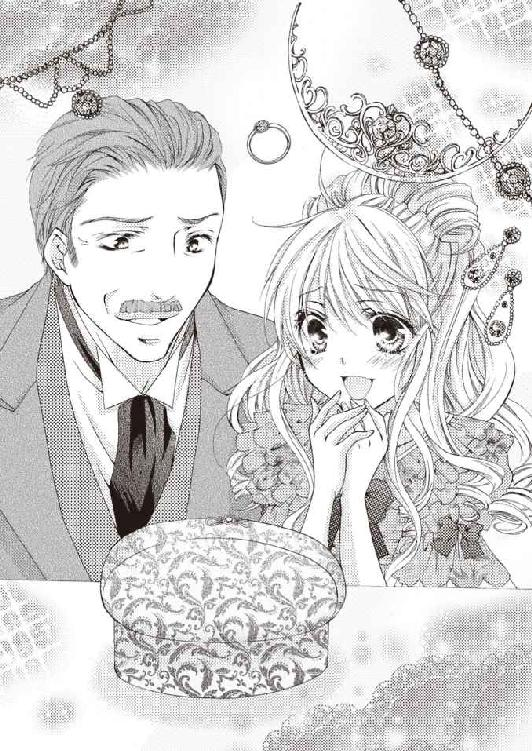
「きっとお母様が、私たちをここへ導いてくださったのね......」
「ロード・ペンザンス。このパリュールを、ぜひ譲ってください！ お願いします！」
ワトフォード伯爵の言葉に、ペンザンス伯爵は力なく「ああ......」と答えて頷いた。美術品愛好家クラブが摘発される前は、こんなにすんなり事が運ぶとは思えない雰囲気だったが──このパリュールを見せると決めた時点で、彼はすでに、本来の所有者に返すつもりになっていたのだ。
落札価格を訊ねたワトフォード伯爵は、それより多い金額で小切手を切ろうとしたが、ペンザンス伯爵はそれを固辞した。
「ありがとうございます。ロード・ペンザンス」
ルイーズがペンザンス伯爵の手を取り、微笑みながら感謝を告げる。
「あなたがこれを落札してくださったおかげで、母の形見を取り戻すことができました。本当に、感謝しています」
曇りのない青い瞳にじっと見つめられ、ペンザンス伯爵は、居たたまれぬ様子で目を逸らした。
「これで用はすんだだろう。早くそれを持って帰ってくれ」
本音を言えば、まだあのパリュールに未練があるのだろう。
そしておそらく、そんな自分の飽くなき欲望を恥じてもいる。
「ロード・ワトフォード。レディ・ルイーズ。行きましょう。お宅まで馬車でお送りします」
アーネストはワトフォード伯爵父娘を促し、玄 関まで見送って、バーンズリー伯爵家の馬車を操る御者に命じた。
「お二人を、ワトフォード伯爵邸へ送り届けるように」
ワトフォード伯爵がアーネストに問う。
「ロード・バーミンガム。あなたはこれから、どうなさるおつもりですか？」
アーネストは静かに笑って答えた。
「これから最後の幕を引きます。すべてが終わったら、お宅へご挨拶に伺うつもりです」
「では、お待ちしています」
ワトフォード伯爵は笑顔でそう言ってくれたが、ルイーズはもの言いたげな顔をして、アーネストをじっと見つめているだけ。
「さようなら」
別れの言葉を合図に、馬車が門の外へ向かって走り出した。
アーネストも、ここを去る準備をするため、ペンザンス伯爵の部屋へ引き返す。
ノックをして『入ります』と声をかけ、ドアを開けると、ペンザンス伯爵はまだ、客間兼居間のソファに座り込んでいた。
物憂げに顔を上げたペンザンス伯爵は、アーネストを見て、非肉たっぷりの口調で恨み言を言う。
「口が堅いとは、よく言ったものだな......」
アーネストは、微かに笑ってそれを受け流す。
「利害関係の不一致で敵対しない限りは──と、申し上げていたはずです」
「こんなことをして、君になんの得がある？」
鼻を鳴らして吐き捨てたペンザンス伯爵に、今度は真顔で答えた。
「レディ・ルイーズの、嬉しそうな笑顔を見ることができました」
するとペンザンス伯爵が、遠い目をしてその名を呟く。
「レディ・ルイーズか......」
「ええ。あなたにはとてもよくしていただいた。感謝しています。でも、あなたの信頼を裏切ることになっても、私は彼女の願いを叶えてあげたかったのです」
アーネストの言葉を聞いて、ペンザンス伯爵が嘲るような笑みを浮かべた。
「あの娘は、社交界デビューした頃の、レディ・シルヴィアにそっくりだ......」
一瞬、アーネストは自分に向けられた嘲笑と思ったが──違う。あれは自嘲の笑みだ。
思考を閉ざしていた霧が、今の一言できれいに晴れた。
「ロード・ペンザンス。あなたは、あれがレディ・ワトフォードの形見の品だと、初めから気づいておられたのですね......？」
アーネストの問いに、ペンザンス伯爵が意味ありげに、力なく微笑む。
「......そうだな。一つ昔話をしよう。とある伯爵家の嫡男が、社交界デビューしたばかりの美しい女性に恋をした。しかし、彼は妻を娶ったばかり。生まれたての恋心は、胸の奥に眠らせるしかなかったそうだ」
まるで人事のように話しているが、おそらくこれは、彼自身のことだ。
「昔の恋など忘れたつもりだったのに......かつて彼女が持っていた宝物に巡り逢った男は、眠っていた記憶を呼び起こされ、その宝を自分のものにしたいという妄執に取り憑かれた。けれど、やがて気づかされたのだ。宝は誰かが隠し持っているより、大切に使われるほうがいいのだと──。だから還した。その宝があるべき場所へ。そこへ還せば、誰もがその宝を見ることができる──そして男は、背負い続けた重い荷物を下ろして少し楽になった。私も今、そんな心境だ......」
アーネストの婉曲話法を用いた圧力も、落札額に上乗せされる謝礼も、ペンザンス伯爵の心を動かすことはできなかった。
いや──むしろ恋した人の夫であったワトフォード伯爵の頼みなど、断じて聞きたくなかっただろう。
しかし、かつて恋した人によく似たレディ・ルイーズの嘆願には、心を揺さぶられた。
美術品愛好家クラブが盗品売買容疑で摘発され、保身を考えたことも理由の一つかもしれないが──彼はレディ・ルイーズがそこにいたから、素直にあれを返す気になったのだ。
「今の私には、あなたの気持ちが少し理解できるような気がします」
それは偽らざる本音だったが、ペンザンス伯爵は鼻先で笑い飛ばした。
「憐れみなどかけなくていい」
今度はアーネストが、微かに自嘲の笑みを浮かべて言う。
「私は......あなたを憐れむことができるほど、高尚な人間ではありません。それに、実は私も、今日まで大きな秘密を抱えてきたのです。あなただけには、真実を打ち明けて幕を引きます」
「真実......？」
「ええ。私はバーンズリー伯爵の嫡男、メイヤー子爵ロバートではありません。本当の名は、バーミンガム侯爵アーネスト・グレンジャー。ミッドランズ公爵の嫡男です」
アーネストが本当の素性を語ると、ペンザンス伯爵は一瞬唖然とし、やがて声を立てて笑い出した。
「やはりそうか。私は以前、あなたをお見かけしている。しかし、本物のメイヤー子爵を存じ上げなかったばかりに、『よく似た親戚』という嘘に、すっかり騙されてしまった」
「......騙してすみませんでした。どう弁解しても、私が嘘をついてあなたを利用した事実は変わりません。しかし、それなりの深い事情があったのです」
アーネストは、隠し持っていた封緘特許状を取り出して開示する。
「私は、女王陛下の特務を受けた父の代理で、美術品愛好家クラブを摘発するため、素性を隠してあなたに近づいた。もしあなたが落札した盗品の返還に応じなければ、女王陛下の命を受けた私設警察隊指揮官の権限で、盗品売買容疑であなたを逮捕し、落札した盗品を押収するつもりでした」
真相を知ったペンザンス伯爵は、驚愕のあまり硬直して声も出ないようだ。
アーネストは特許状を仕舞い込み、ペンザンス伯爵に言う。
「レディ・ワトフォードのパリュールを、ロード・ワトフォードにお返してくださってよかった。あなたを罪人にしたくありません。あなたの縁故がなかったら、私は特別会員として、闇オークション会場に潜入できませんでした。だから私の協力者だった──ということにしておきましょう。オークションで入札した盗品に関しては、『落札した時点では、盗品とは知らなかった』で通してください。気がついたのは、ワトフォード伯爵邸のティーパーティーに出席したときです。いいですね？」
ペンザンス伯爵は、魂が抜けたような顔で頷き、承諾する。
「今お話したことは、すべて他言無用に願います。私は今日を限りに、メイヤー子爵ロバートではなく、バーミンガム侯爵アーネストとしての生活に戻ります。本当に、いろいろお世話になりました」
アーネストは、これまでの礼を言ってペンザンス伯爵に別れを告げ、彼の部屋を出た。
そして、与えられていた部屋に戻って荷物をまとめ、バーンズリー伯爵家の馬車が戻ってきたのを確認して、再び応接室へ向かう。
◆ ◆ ◆
ワトフォード伯爵父娘がバーンズリー伯爵家の馬車に乗るのを、ベアトリスは応接室の窓から見ていた。
メイヤー子爵まで、一緒にこの家を出ていったらどうしよう？
そんな不安はやがて消えた。彼は二人を見送って、すぐに二階へ引き返していったから。
小心な母は、不安げな顔で座り込んだまま、まだ呆然としている。
重い空気にやりきれなさを感じていると、婚約者マデリンに会いに行っていた兄、オールウィン子爵が戻って来た。
「ただいま──何かあったんですか？」
兄の顔を見た途端、母は「コンラッド！」と彼の名を呼び、立ち上がってよろめきながら近寄っていく。
兄も慌てて母に駆け寄り、その腕で支えて優しく言い聞かせる。
「ゆっくり、落ち着いて話してください」
促されるまま深呼吸して、母が事情をすべて説明し、兄が宥めるように相槌を打つ。
「盗品と知らずに落札したなら、おそらく返還要請があるくらいで、大したお咎めはないと思いますよ。美術品愛好家クラブの特別会員だった貴族は、ほかにも大勢いる。これはあくまでも噂ですが、やんごとなきお方まで、その名を連ねていると聞きました。ですから、いいほうに考えましょう」
兄に相談することで、母は少し落ち着きを取り戻したようだ。
それからしばらくして、メイヤー子爵が応接室に戻って来た。
兄に気づいたメイヤー子爵が微かに微笑んだ。
「ロード・オールウィン。君も帰っていたのだね。ちょうどよかった」
「ロード・メイヤー。父が落札したピンクダイヤのパリュールは、やはり盗品だったのかい？」
「ああ。間違いなく、ヘルメスに盗まれた品だった。しかし、ロード・ペンザンスは、落札した時点では、あれが盗品だと知らなかったんだ。もとの所有者であるロード・ワトフォードにお返しして、円満に解決したよ。心配はいらない」
それを聞いて、母も兄も、ベアトリスも、ほっと安堵のため息をついた。
メイヤー子爵はためらいがちに、「ところで」と話を切り替え、その場に居た全員に告げる。
「実は......今日で、こちらをお暇することになりました」
ベアトリスは、一瞬我が耳を疑った。
「なぜ!? もしかして......本当は今日のことで、父のご機嫌を損ねてしまったの!?」
帰宅した父の顔を見ていれば解る。父はメイヤー子爵がワトフォード伯爵父娘を連れてきたことを、快く思っていなかった。
落札したパリュールに盗品の疑いを抱きながらも、父は今日までその品をひた隠しに隠し、沈黙し続けた──ということは、『もとの所有者に気づかれなければ、返すつもりなどなかった』ということだろう。
しかし、メイヤー子爵は静かに首を横に振って否定する。
「いいえ。ペンザンス伯爵は、それくらいのことでお怒りになるような方ではありません。あくまでも、私自身の都合です」
それを聞いて、今度は別の不安が込み上げ、ベアトリスは、それを確かめずにはいられなくなってしまった。
「......じゃあ......もしかして、私が嘘をついたから......？」
ルイーズに話した嘘が露見して、嫌われたなら自業自得だ。
しかし、彼はこれについても否定する。
「一つも嘘や隠し事を抱えていない人間などいませんよ。お暇する理由と、あなたの嘘は関係ない。だから、笑顔で見送っていただけませんか？」
嫌だと泣いて駄々を捏ねたい心境だったが──もう子供ではないベアトリスには、そんなみっともない真似はできない。
ここを出て行っても、社交シーズンが終わるまでは、お互いロンドンにいる。メイヤー子爵は兄の友人だから、また遊びに来てくれるだろう。
ベアトリスはそう自分に言い聞かせ、精いっぱいの笑顔を浮かべて頷いた。
「さようなら、ロード・メイヤー。また遊びに来てくださいね」
メイヤー子爵も、少し淋しげな顔で微笑みながら別れを告げる。
「さようなら、ペンザンス伯爵家の皆さん。本当に、お世話になりました」
このとき、ベアトリスは知る由もなかった。まさかこの日を境に、メイヤー子爵がロンドンから姿を消すなんて。
告げることもできずに終わった初恋は、その後しばらくベアトリスの心を悩ませた。せめてもう一度、彼に会えないだろうかと──。
行方不明になっていた父ワトフォード伯爵が帰宅し、ヘルメスに盗まれた母のパリュールを取り戻すことができて、ルイーズが抱えていた問題の多くは解決した。
唯一残っている問題が、メイヤー子爵──もとい、バーミンガム侯爵との関係だ。
切り出そうとした恋人ごっこの終焉は、突然の父の帰宅や、母の形見の所在が判った騒動で、宙に浮いた状態になっている。
あれからまだ、一度もバーミンガム侯爵と顔を合わせていない。
美術品愛好家クラブの不正行為の証人として、法廷に召喚された父は、何度か会って話をしたようだが──彼がワトフォード伯爵邸を訪ねてくることはなく、父に用があるときは、必ず使いの者を寄越す。
世間を騒がせた盗賊ヘルメスと、盗品売買組織を捕らえたことで、彼は様々な事後処理に追われて忙しいのだろう。父はそう言っていたが──彼がこの屋敷へ来なくなった本当の理由は、本人に聞いてみないと判らない。
あのとき──彼はルイーズが言いかけた別れの言葉を察して、彼の中では、すでにルイーズとの関係は終わったことになっているのではあるまいか。
だとしたら、このまま何もなかったことにして、忘れてしまうのが一番いい。
論理的思考はそう答えを出しているのに、感情に左右されている心が、勝手に彼のことばかり考えてしまう。
バーミンガム侯爵に逢いたい──。
逢ってどうなるものでもないのに。
早く父が選んだ花婿候補の青年たちの中から、結婚相手を選んで、父を安心させてあげなければならないのに。
ルイーズは、ますます誰も選ぶことができなくなってしまった。
議会の終了とともに社交シーズンが終わり、貴族たちはロンドンを離れ、領地がある田舎へ帰っていく。
バーミンガム侯爵がワトフォード伯爵邸へ挨拶にきたのは、ちょうどそんな時期だった。
玄関脇の応接室で、ルイーズとワトフォード伯爵が現れるのを待っていたバーミンガム侯爵が、二人と顔を合わせるなり、ソファから立ち上がって言う。
「事件の後始末が終わりましたので、私は今日、これから領地へ帰ろうと思います。その前に、ご挨拶に伺いました」
バーミンガム侯爵が領地へ帰る──それを聞かされたルイーズは、なんとも言えない虚無感に襲われた。
まさか帰る当日に、旅支度をして現れるなんて──これでは別れの言葉くらいしか話せない。
バーミンガム侯爵は、静かな笑みを浮かべて言う。
「さようなら、レディ・ルイーズ。花婿候補のどなたかと、どうかお幸せに。私もあなたのような可愛らしい花嫁を探して、早く身を固めようと思います」
彼がほかの女性と結婚する。そう思った途端、ルイーズの胸は、きりきりと引き絞られるように痛んだ。
目頭が熱い──そう感じた直後、視界が霞んで、目の前がはっきり見えなくなってしまった。
バーミンガム侯爵との思い出が、まるで走馬灯のように、脳裏に浮かんでは消える。
初めて出逢ったマスクドボールの夜──ルイーズは、いろんな問題を抱えて途方に暮れていた。それなのに、『大丈夫』という彼の言葉一つで安心して。まるで本当に奇跡が起こりそうな気がして。ほんのひととき、心を悩ませる問題を忘れ、ダンスを楽しむ余裕ができた。少しでも長く、彼と踊っていたいと願うほど──。
二度目に会った舞踏会では、彼に忘れられていたと思って落胆し、覚えていてくれたと解って歓喜に胸を躍らせた。
初めて彼がワトフォード伯爵邸を訪ねてくれたとき、ルイーズは朝からそわそわし通しで、浮き立つ心を抑えられなかった。
突然肩を抱き寄せられ、彼に盗まれてしまった初めてのキス──あのときルイーズは怒ったけれど、それは彼に、付き合っているレディがいると思っていたからだ。勘違いだと解ってからは、困っただけ。ルイーズ自身に、嫡男以外を婿に迎えなければならないという柵があったから──。
ルイーズが事情を告げた途端、彼は急に怒り出し、ルイーズを詰った。腹を立てずにはいられない事情があったに違いないけれど、彼がルイーズにした仕打ちは、いくらなんでも度を越していたと思う。
それなのに、ルイーズは彼の謝罪の言葉とバラの花束で、すべて水に流してしまった。あのときすでに、彼に恋をしていたから。
いけないことだと思いながらも恋人ごっこを受け入れたのは、彼のことが好きで、彼を求める自分の気持ちを止めることができなかったからだ。
どうして彼と巡り逢ってしまったのだろう？
もし、恋する気持ちを知らずに結婚していたら、それなりに穏やかな幸せを手に入れることができたかもしれない。
けれど今は、彼が遠くへ行ってしまうと思っただけで──ほかの女性と結婚すると思っただけで、こんなにも胸が引き裂かれそうな心地がする。
「......さようなら、ロード・バーミンガム」
ルイーズは心の中で初めての恋に別れを告げ、叶わぬ想いを惜しんで泣いた。
バーミンガム侯爵が、背を向けて去っていく。
ドア一枚で隔てられた二人の距離は、現実より遥かに遠い。
ルイーズは堪えきれず、ついにその場にくずおれ、泣きじゃくる。
あふれる涙を拭うことも忘れ、ただ呆然と泣き続ける娘の肩を、父がそっと労わるように抱きしめる。
「私の可愛いルイーズ。お前は、ロード・バーミンガムが好きなんだね？」
ルイーズは何も答えられなかった。
彼は好きになってはいけない人──だから無言でかぶりを振って否定する。
「本当の気持ちを言いなさい。言っていいんだ」
本当の気持ちを口にしても、彼はもう行ってしまった。想いを伝えることさえできない。
ルイーズは啜り泣きながら、途切れ途切れに呟いた。
「......私は......お父様の、ご希望通り......、お祖父様の爵位を代々子孫に引き継がせるため......嫡男以外の殿方と、結婚して......婿入りしていただきます......」
ワトフォード伯爵は、再びルイーズの本音を問い質す。
「お前はどうしたいのか、それを聞いているんだ」
祖父や父の気持ちも解るし、貴族の娘として生まれてきた以上、家や名誉を守るための結婚は、当然の義務と心得ている。
「お父様の......お望みのままに......」
そう答えたルイーズの体を、ワトフォード伯爵が強く抱きしめて言う。
「本当に......バカな子だね、お前は──いや、バカなのは私だ。いろんなことを、お前に押し付けすぎた......」
ワトフォード伯爵は、指先でそっとルイーズの涙を拭い、じっと目を見て言い聞かせる。
「確かに私は、亡き妻によく似た愛娘を手放したくないと思っている。お祖父様がお前のために遺してくださった爵位を、子孫に引き継がせたいのも本心だ。しかし、好きな相手がいる娘を、無理やり別の相手と結婚させるほど、物解りの悪い父親ではないよ。娘には、幸せな結婚をしてほしい。お祖父様も同じ気持ちだ。だからもう一度聞く。お前は、本当はどうしたいのだね？」
まさか父が、そんなふうに言ってくれるとは思わなかった。母が亡くなり、祖父がアスカーン伯爵となった頃からずっと、父はルイーズにこう言い聞かせてきたのだ。
『私の可愛いルイーズ。お前は将来お祖父様の爵位を相続する、特別なレディだ。大人になったら嫡男以外の婿をもらって、ずっとこの家で一緒に暮らそう。私のささやかな夢を叶えておくれ』
母の分まで愛情を注いでくれた、父の望みを叶えてあげたい。ずっとそう思いながら、今日まで生きてきた。
だから、バーミンガム侯爵に恋をしてはいけないのだと、自分に強く言い聞かせてきたけれど──父が本当に、心の底から願っているのは、ルイーズの幸せ。
心のままに生きればよかったのだ。ルイーズがどんな我儘を言っても、そうすることで幸せになれるなら、父はそれを許してくれる。
そう思ったらまた、涙があふれてきた。
ずっと胸の奥にしまってきた言葉を、ルイーズは今、初めて口にする。
「私は彼が......バーミンガム侯爵が、好きです！ 結婚するなら、彼がいい！ 彼じゃないと、ダメなの......！」
言葉にすると、ますます想いがあふれてきた。
「ならば、彼と結婚しなさい。私のことも、お祖父様の爵位のことも、心配しなくていい」
父の気持ちは嬉しいけれど、『彼と結婚したい』というのは、あくまでも、ルイーズの願望でしかない。
「私は彼が好きだけど......彼の気持ちは、解らないの......」
ワトフォード伯爵は、意味ありげな笑みを浮かべて言う。
「男がレディに親切にする理由の大半は、『彼女にいいところを見せたいから』だ。私が見たところ、おそらく彼も、ルイーズを憎からず思っているよ」
そうだろうか？
別れを告げて帰っていったバーミンガム侯爵の態度は、淡々としていた。彼の中では、ルイーズとの関係はすでに『終わったこと』になっているような気がする。
ワトフォード伯爵が、不安げな顔をしているルイーズの肩を励ますように優しく叩き、近くに控えている近侍を呼んだ。
「エヴァンス。急いで馬の用意を！」
エヴァンスが厩舎へ走り、馬丁がワトフォード伯爵の愛馬を玄関先に連れてくる。
ワトフォード伯爵は颯爽と馬に乗り、ルイーズに手を差し伸べて言う。
「おいで、ルイーズ」
その手を取ると、父はルイーズを馬に乗せ、鐙を蹴って馬を軽やかに走らせる。
「どこへ行くの？」
ルイーズの問いに、ワトフォード伯爵が答えた。
「彼は領地へ帰ると言っていた。おそらくこの道を通ったはずだ。今ならまだ、そう遠くへは行っていないだろう。追いかけて、彼を引き止める！」
長距離を走る四頭立ての四輪箱馬車は、人や荷物を載せた重い車両を引いているので、人が歩くより速い程度の足取りで進んでいく。
一方、ワトフォード伯爵が駆る乗馬用馬は、二人乗りをしているとはいえ、全力の襲歩で走り続けている。
しばらくして、バーミンガム侯爵が乗っている箱馬車を、目視で確認できた。
ワトフォード伯爵が、声を限りに張り叫ぶ。
「ロード・バーミンガム！ お待ちください！」
轟き渡る大音声が、箱馬車の歩みを止めた。
ようやく箱馬車に追いつき、横へ並ぶと、小窓からバーミンガム侯爵が顔を出して問いかける。
「何か火急の用でも......？」
「ええ。あなたに一つ頼みがあって、ここまで追って来ました」
ワトフォード伯爵は、少し淋しげに微笑みながら、静かな声で言う。
「どうやら私の娘は、あなたに心を奪われてしまったようです」
「お父様......っ！」
いきなり自分の気持ちを明かされ、ルイーズは焦ってうろたえた。
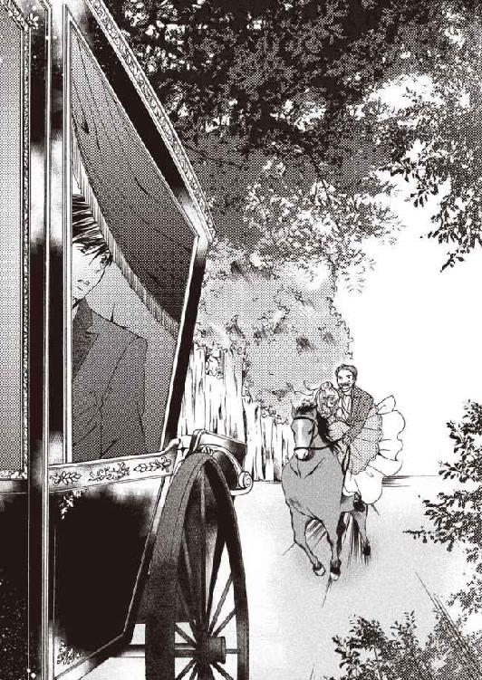
しかし、ワトフォード伯爵に目で制されて口を噤む。
ワトフォード伯爵が遠い目をして、しみじみと物語る。
「私は妻そっくりの可愛い娘を、嫁になどやりたくない。それが偽らざる本心です。だから娘が幼い頃から、『お前はお祖父様の爵位を相続する特別なレディだ。お祖父様の爵位を代々子孫に名乗らせるため、実家の爵位を継がない方を婿にもらいなさい』と言い聞かせてきました」
幼い頃──父はルイーズを抱きしめて、何度もこう言った。
『ずっとこの家で、お前と、お前の婿や子供と一緒に暮らしたい』
それは父を愛し、信頼していた八歳の少女にとっては、嬉しい言葉だったが──結婚を意識する年齢を迎えた今となっては、重い足枷でしかなくなっている。
父は断腸の思いで、その足枷を外そうとしているのだ。
「今でも娘を手放したくないと思っている。しかし、娘に想う相手がいるのなら、娘の好きにさせてやりたい。それもまた本心です。あなたのお気持ち次第だが──もし、あなたが娘と同じ気持ちなら、私は最愛の娘を、私の命より大切な宝を、あなたに託したい」
ルイーズは、今ほど父の愛情を、深く感じたことはない。
彼──バーミンガム侯爵がどういう答えを出そうとも、そう言ってくれた父の気持ちを、心から嬉しく思う。
◆ ◆ ◆
バーミンガム侯爵アーネストは、箱馬車に揺られて郷里への道を辿りながら、別離の哀愁に浸っていた。
目を閉じれば、まざまざと甦る。咲きかけたピンクのバラのような少女の面影が──。
彼女との出逢いは、マスクドボールを隠れ蓑にして行われている、盗品を扱う闇オークションの入口だった。アーネストは、連れのふりをして強引について来た彼女に呆れてしまったが──彼女がそんな無茶な真似をしたのは、行方不明になった父親を捜すため。本当はとても不安だったろうに、必死で自分を奮い立たせて、運命に立ち向かおうとしていた。その気持ちが伝わってきたから、力になってあげたいと思ったのだ。
そして、カノック伯爵家の舞踏会で再会し、アーネストはわざと初対面のふりをして、彼女をがっかりさせてしまった。ペンザンス伯爵家の兄妹に、どこで知り合ったのか聞かれたくなかっただけだが──怒って拗ねてしまった彼女はとても可愛くて。本当は憶えていたと判ったときの表情はもっと可愛くて。もっともっと、彼女のいろんな顔を見てみたくなった。
彼女──レディ・ルイーズ・バーロウは、どんな表情をしていても可愛らしい。けれど一番心惹かれる表情は、花がふんわりと咲き綻ぶようなあの笑顔。
微笑む彼女を見ているだけで、ほっこりと胸が温かくなって、とても幸せな気分になる。
この気持ちはなんだろう？
自分の気持ちと正直に向き合って、アーネストはようやく自覚した。自分は彼女に──レディ・ルイーズに、恋をしているのだと。
周囲からは、そろそろ結婚を考えるように煩く言われ始めていたが、アーネスト自身は、結婚なんて、まだまだ先の話だと思っていた。
でも──レディ・ルイーズとなら、結婚を考えてみてもいい。
三度目に逢いに行ったときには、レディ・ルイーズを口説き落すつもりでいた。
どうやら彼女も、アーネストに好意を抱いているようだ。
可愛らしい彼女を見ていると、キスしたい衝動に駆られて──アーネストは思わずそれを実行していた。
ほんのりと甘いバニラの香りがする唇を味わって、天にも昇るような心地で、彼女のすべてがほしいと望んだ。
まさか家庭の事情を理由に、交際を断わられるなんて──考えてもいなかった。
心に想う相手がいるなら、まだ諦めもつく。
しかし、花婿候補の中には、彼女の心を射止めた男はいないらしい。
王侯貴族の間では、家柄や財産を守るための血族婚も、政略結婚も、よくある話。彼女がそれに納得しているなら、口を挟むべきことじゃない。
頭ではちゃんと解っているのに、どうしても納得できなかった。
我を忘れて衝動的に彼女を責めて泣かせてしまって──自分でも、なぜあんなことをしてしまったのかと、驚き、呆れている。
絶対に、赦してはもらえないと思っていた。
自分が彼女の立場だったら、絶対に赦せない。
二度と顔も見たくない──そう言われても仕方のないことをしたのに、レディ・ルイーズはアーネストの謝罪を受け入れてくれた。
『あなたが何の理由もなく、私を傷つけようとしたとは思えない......。後悔して、こうして謝罪にいらしたんですもの。あなたを赦します』
そう言ってくれた彼女のためなら、命を懸けても惜しくない。
無償の愛で彼女に尽くすと心に誓った──その舌の根も乾かぬうちに、恋に溺れた愚かな男は、思い上がった言葉を口にした。
『恋も知らずに結婚しようとしているあなたに、恋する喜びを教えて差し上げたい......。まだ結婚相手を選べそうにないなら、しばらく私とゲームをしませんか？ そう。ままごとのような恋愛ゲームです』
親切ごかした誘い文句でルイーズを唆したのは、ただ自分がそうしたかったからだ。
『私と独身時代の美しい思い出を作りましょう。あんな時代もあったと、懐かしく思い出せるような......ときめく恋の思い出を......』
思い出は確かに、たくさんできた。
けれどそれが美しく楽しいものであった分だけ、なくしたときの絶望感は大きい。
アーネストと婚約していると、嘘をついたベアトリス。
それを信じたルイーズに拒絶されたとき、アーネストは苦い思いを味わった。
一瞬、よけいなことを吹き込んでくれたベアトリスを恨んだが──彼女を責める資格など、アーネストにはない。
別れのときが来たら、潔く身を引くと約束している。
そしてルイーズは、あのとき別れを決意していた。
もう一度、彼女の口から拒絶の言葉を聞くくらいなら、このまま決別するほうがいい。
だからアーネストは、ロンドンを発つ直前まで、ルイーズと会わなかったのだ。
『さようなら、レディ・ルイーズ』
アーネストが別れを告げた直後、ルイーズは悲しい瞳をして泣き出した。
青い瞳が生み出す透明な滴に濡れた頬は、まるで雨露に濡れて艶めくバラの花びらのように、清らかで美しかった──。
彼女を想うこの気持ちが、生涯消えることはないだろう。
決して結ばれぬ運命だから、美しい思い出だけを、この胸の奥深くに、ひっそりとしまっておく。
『......さようなら、ロード・バーミンガム』
彼女が別れを惜しんで泣いてくれた。それだけでもう、充分報われた気がする。
すっぱり未練を断ち切るために、アーネストは彼女に背を向け、振り返ることなくその場を立ち去った。
どうか幸せになってほしい。花が咲き綻ぶようなあの微笑みが、自分に向けられたものでなくても構わないから。
こんな狡い男のことなど早く忘れて、幸せになってほしい──。
熱くなりかけた目頭を押さえ、深いため息をこぼしたとき、遠くから、聞き覚えのある声がした。
「ロード・バーミンガム！ お待ちください！」
ワトフォード伯爵の声だ。
振り返ると、後部の窓から、ワトフォード伯爵が馬を駆り、愛娘ルイーズを連れて追いかけてくるのが見えた。
「馬車を止めろ！」
アーネストの命を受け、御者がゆっくりと馬車を止める。
馬上の二人が箱馬車に追いつき、横へ並んだ。
アーネストは側面の窓から顔を出し、ワトフォード伯爵に問いかける。
「何か火急の用でも......？」
「ええ。あなたに一つ頼みがあって、ここまで追って来ました」
それがルイーズのためになることなら、アーネストは、どんな無理難題でも聞き入れるつもりだった。
しかし、ワトフォード伯爵が口にしたのは、予想外の言葉。
「どうやら私の娘は、あなたに心を奪われてしまったようです」
それを聞いたルイーズは、真っ赤になって困惑している。
ワトフォード伯爵は、過去を懐かしむような表情で続けた。
「私は妻そっくりの可愛い娘を、嫁になどやりたくない。それが偽らざる本心です。だから娘が幼い頃から、『お前はお祖父様の爵位を相続する特別なレディだ。お祖父様の爵位を代々子孫に名乗らせるため、実家の爵位を継がない方を婿にもらいなさい』と言い聞かせてきました」
それはルイーズからも聞いている。だからアーネストは、彼女と歩む未来を諦めたのだ。
しかし親心というものは、もっと複雑で奥深い。
「今でも娘を手放したくないと思っている。しかし、娘に想う相手がいるのなら、娘の好きにさせてやりたい。それもまた本心です。あなたのお気持ち次第だが──もし、あなたが娘と同じ気持ちなら、私は最愛の娘を、私の命より大切な宝を、あなたに託したい」
ワトフォード伯爵が、どれほど一人娘のルイーズを愛し、慈しみ、大切に育ててきたか──それは彼女を見ていれば解る。
そして、彼がどんな気持ちで、命より大切な宝を託したいと言ってくれたか、アーネストには、痛いほどよく解る。
「ロード・ワトフォード。あなたの大切な宝を、ぜひ私にください。きっと生涯大切にします」
アーネストがはっきりそう告げると、また、ルイーズの青い宝石のような美しい瞳から、大粒の涙が零れ落ちた。
「......嬉しい......。まるで夢を見ているみたい......」
アーネストも、まるで夢を見ているような気分だ。
馬車から下りた瞬間、目が覚めてすべて消えてしまうのではないかと疑いながらも、ドアを開けて、大地に降り立つ。
足元は、崩れることなくそこに在る。
「レディ・ルイーズ......」
彼女の名を呼び、手を差し伸べると、確かな手の温もりが重ね合わされた。
手を握り合い、馬上から抱き止めた幸せな重みに胸が震える。
「もし許されるなら、ずっとあなたに伝えたかった。愛していると──」
愛している。この手で彼女を幸せにできたら、どんなに幸せだろうと思っていた。
微笑む彼女が、いつもそばにいてくれたら、どんなに幸せだろうかと──。
涙に潤んだ青い瞳が、じっとアーネストを見つめ、微笑みを浮かべた唇が、横笛の音色のような、清らかにしてやわらかい音色を紡ぎだす。
「私も、ずっとあなたに伝えたかった......。心から、あなたをお慕いしています」
固く抱き合う二人を見ていたワトフォード伯爵が、少し淋しげな微笑みを浮かべて言う。
「ロード・バーミンガム。できれば娘ルイーズのために、領地へお帰りになる日程を延ばしていただけませんか？ その間、当家でゆっくりなさってください」
「お許しいただけるなら、ぜひそうさせていただきたいと思います」
「では、私は先に屋敷へ帰って、客人をもてなす準備をしておきます。馬が疲れているようなので、娘を馬車で送っていただけると助かります」
馬が疲れたというのは、晴れて恋人同士になった二人に気を利かせての口実だろう。
「承知しました、ロード・ワトフォード。お嬢さんと一緒に、私の馬車でゆっくりお宅へ伺います」
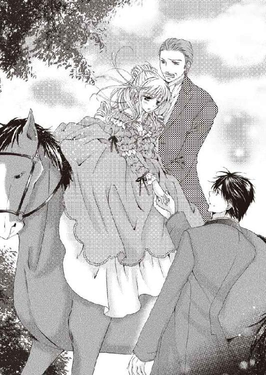
アーネストはルイーズとともに、家路を辿るワトフォード伯爵の後ろ姿を見送った。
◆ ◆ ◆
バーミンガム侯爵の四頭立ての四輪箱馬車は、ルイーズを乗せてもと来た道を引き返していく。
この馬車の車内には、ゆったり四人、詰めれば六人座れるが、バーミンガム侯爵とともに車内の座席に乗っていた従者は、気を利かせて後部にある従者の立ち台へ移動している。
車内には二人きり。カーテンを引いて窓を塞げば、外からは見えない。
隣に座っているバーミンガム侯爵が、笑みを含んだ優しい声で言う。
「レディ・ルイーズ。私がいつからあなたを好きになっていたか──判りますか？」
いつからか──なんて聞かれても、よく解らない。
考え込んでいると、彼のほうから語り始めた。
「初めて逢ったときは、無茶をするとんでもないお嬢さんだと思いましたが、あなたの事情を伺い、言葉以上に雄弁な青い瞳で縋るように見つめられて──力になってあげたくなった。あのときすでに、あなたに心を奪われていたのかもしれません」
ルイーズも同じだ。最初は意地悪で怖い人かと思っていたが、彼と話しているうちに、違うと解った。
「......私も......あなたに『無茶をするな』と本気で叱られて、励まされて──すごく嬉しかった。もう一度お逢いしたいと思っていたわ。それなのに、偶然会えて喜んでいたら、初対面のふりをされて傷ついたのよ」
ルイーズが少し拗ねた口調で文句を言うと、バーミンガム侯爵は軽く声を立てて笑いながら、ルイーズの肩を抱き寄せて言う。
「ころころ表情を変えるあなたの反応を見ているうちに、自惚れ屋の私は、てっきりあなたに好かれていると思い込んでしまいました」
ルイーズは気恥ずかしさに頬を染めて告白する。
「それは......思い込みではなくってよ」
「ええ。私も、『絶対いける』と確信していた。なのに、思い切って口説いてみたら、家の事情を理由にフラれて──天国から地獄へ突き落された気分とは、まさにこのこと。傷心のあまり八つ当たりして、あなたを泣かせてしまった。今思うと、自分のバカさ加減に呆れるばかりです。初めて恋した自分の気持ちを持て余していたというか......」
自信たっぷりに同意した彼の、最後の一言だけは意外だ。
「ずいぶん女性を口説き慣れていると思いましたけど......？」
ルイーズの感想を聞いて、バーミンガム侯爵は罰が悪そうに苦笑した。
「慣れている男は、あんな醜態を晒しません。もっと上手に口説きます」
「そうかしら？ あれよあれよという間に、いつもあなたのペースに巻き込まれていましたけど......？」
「一度フラれた身ですから、かなり必死だったのですよ。一つ願いが叶うたびに、心の中で小躍りしながら考えていました。『さて、次はどうやって、あなたを美味しくいただこうか』と......」
彼が妙に饒舌なのは、想いが叶って、小躍りしたいくらい気分が高揚しているからか？
「あなたが可愛くてたまらない......。今すぐにでも、食べてしまいたいくらいだ......」
艶のある声で囁きながら、バーミンガム侯爵がルイーズの耳朶にそっとくちづける。
「あ......」
彼の唇が触れた瞬間、ゾクリとする快感が背筋を駆け抜けていく。
ルイーズは甘い胸のときめきと、官能の昂りに困惑し、弱々しく抗った。
「いけませんわ......」
バーミンガム侯爵はますます強くルイーズを抱き寄せ、不満げに問う。
「なぜ......？ あなたの父上のお許しはいただいた。あなたはもう私のものだ」
私のもの──そう言われて嬉しいけれど、今、ここで彼に流されるわけにはいかない。
「......こんなところで、こんなこと......はしたないとお思いになりませんの？」
非難めいた言葉を口にしたルイーズに、バーミンガム侯爵は昂然と胸を張って答えた。
「私が慎みのない男になるのはあなたのせいだ。あなたがあんまり可愛すぎるからいけないのです」
「まあ......！」
呆れていると、バーミンガム侯爵が蠱惑的な笑みを浮かべて囁く。
「文句ばかり言う唇は、こうして塞いでしまいましょう」
唇に唇を押し当てられ、しっとりと吸われた。
唇の合わせ目を舌先でくすぐられ、緩んだ唇の隙間から、彼の舌がするりと忍び込んでくる。
「ん......」
もう何度も彼とキスしているが、恋人ごっこではなく、本当の恋人としてキスをするのは初めてだ。
そう思ったら、苦しいくらい胸が熱くなって──はしたないとか、そんなこと考える余裕などなくなってしまった。
抗う気力を失くしたルイーズは、静かに目を閉じ、キスの快感に酔い痴れる。
今にも体がとろけてしまいそうな、天にも昇る心地がした。
バーミンガム侯爵の馬車は、とてもゆっくりした足取りで、ワトフォード伯爵邸へ引き返している。それは、急な来客をもてなす準備をしているワトフォード伯爵家と、車窓のカーテンを閉めて恋人と戯れている主人への気遣いだ。
「そろそろ到着します」
後部の立ち台に乗っている近侍ライアンの声で、車中の恋人たちは、我に返って名残惜しげに身を離す。
バーミンガム侯爵アーネストは、車窓のカーテンを開け、真剣な顔でルイーズに言う。
「近日中に、あなたを私の両親に紹介したいのです。会ってくれますね？」
ルイーズは緊張した面持ちで「はい」と承諾した。
馬車を降りたアーネストは、両親の都合を聞くため、すぐに近侍ライアンをミッドランズ公爵のロンドン邸へ使いに出した。
アーネストは今日、一足早く帰郷する予定だったが、ミッドランズ公爵夫妻は、もうしばらくロンドンにいる予定だ。アーネストが『結婚したいレディがいる。紹介したい』と言えば、おそらく『すぐにでも来い』と言ってくるのではあるまいか。
「使いの者が言伝を携えて戻ったら、なるべく早く挨拶に行って、婚約パーティーの日取りを決めましょう」
ルイーズは不安そうな顔をする。
「あなたのご両親に、結婚のお許しをいただけるかしら......？」
アーネストは自信たっぷりに答えた。
「それなら、相手が貴族階級のレディであれば、なんの問題もありません。私は結婚相手を自由に選べる立場ですので」
最後の一言は少し皮肉に聞こえたろうか？
ルイーズは少し複雑な表情をしたが、すぐに、まだ夢心地を彷徨っているような瞳に戻った。
アーネストが出した使いが戻ってきたのは、ワトフォード伯爵と三人だけの晩餐会が始まる前だ。
推測通り、近侍ライアンは、『明日にでも晩餐会を開くから、その貴族令嬢と別邸へ来い。先方のご都合がつくようなら、ぜひロンドンを発つ前に、親御さんにもご挨拶したい』という返信を携えてきた。
アーネストは晩餐の席で、ワトフォード伯爵父娘に、その旨報告した。
「ロード・ワトフォード。明日、お嬢さんと一緒に、私の両親に会いに行くことになりました」
ワトフォード伯爵は、さすがに驚いている。
「明日とはまた......ずいぶん急な話だ......」
「実は......そろそろ身を固めるよう煩く言われておりましたので、両親がロンドンにいる間に顔合わせをして、具体的な話を進めたいのです」
「......そうですか。解りました。娘のことは、あなたに託すと決めたのだから、私は黙って見守るだけです」
ワトフォード伯爵はそこでいったん言葉を切ったが、やはり納得できない様子で続ける。
「......それにしても、なぜそれほど結婚をお急ぎになるのです？ あなたはまだ、二十代前半か、半ばくらいに見えますが......？」
「ええ。もうすぐ二十五歳になります」
二十五歳といえば、中流階級の紳士なら、そろそろ結婚を意識し始めてもいい年頃だ。
しかし、貴族の子息はもっと晩婚で、平均的な結婚年齢は三十歳前後。アーネストは、決して結婚を急ぐような年齢ではない。
結婚しろと急かされるのは、実はルイーズ同様、爵位相続に関わる家庭の事情。
「実はミッドランズ公爵家は、ほとんどが女系の子孫で......嫡男である私が何らかの理由で爵位を相続できなくなった場合、推定相続人となる直系男系男子は、みな父より年上なのです。だから、とにかく早く結婚して、後継者となる男子を儲けよと......」
結婚したい相手もいないのに、『結婚しろ』とうるさく言われたら、まるで自分が種馬扱いされているような、とても嫌な気分になる。
もしうっかりどこかのご令嬢と仲よく話でもしようものなら、翌日にはもう縁談が持ち上がっている有様だ。
もしかしたら、自分は天邪鬼のへそ曲がりなのかもしれないが、なんだかだんだん結婚するのが嫌になって、女性を敬遠するようになってしまった。公式行事は仕方なく出席しているが、舞踏会などの結婚相手を見繕うためのパーティーには、なるべく顔を出さないようにしている。
まあ......そのおかげで、病弱であまり社交界には顔を出していない親戚──メイヤー子爵に成りすますことができたのだと思うが。
そんな結婚嫌いのアーネストが、『結婚したいレディがいる』と自分から言い出せば、おそらく両親も親族も、使用人たちも、大喜びするだろう。
アーネストは、少し申し訳ない気分で話を続けた。
「ロード・ワトフォードにしてみれば、大切なお嬢さんを、あまり早く嫁に出したくないだろうと思います。しかし、とにかく早く子を作れと周りがうるさいもので──私としては、できるだけ早く結婚したいと思っています」
「私も早く、孫の顔は見たいと思っていますよ」
ワトフォード伯爵は、内心『嫁にはやりたくなかったが』と言いたげな顔をしているように思えたが、アーネストがいきなりルイーズを攫っていこうとしていることを、一応許してはくれたようだ。
◆ ◆ ◆
バーミンガム侯爵を迎えての晩餐会は、ワトフォード伯爵が腰を上げたのを機に、お開きとなった。
各々自分の部屋でくつろぐために移動する際、バーミンガム侯爵がルイーズに耳打ちした。
「まだあなたと話し足りない。あとでお部屋へ伺います」
ルイーズが返事をする暇も与えず、バーミンガム侯爵は、近侍を連れてその場から立ち去ってしまう。
ルイーズは、『彼が訪ねてくれるなんて嬉しい』と思いながらも、『父の手前、こんな時間に、こっそり部屋を訪ねて来られては困る』とも思っている。
しかしそれを顔には出さず、ルイーズも侍女を連れて自分の部屋へ移動した。
部屋に戻ったルイーズは、すぐにドレスを脱いで入浴し、ゆったりしたナイトガウンに着替えて侍女を下がらせる。
しばらくして、ドアを軽くノックする音が聞こえてきた。
「私です。レディ・ルイーズ。中へ入れてください」
潜めた声で囁いたのは、バーミンガム侯爵だ。
ルイーズがドアを開けると、バーミンガム侯爵がさっと部屋へ忍び込み、ルイーズをぎゅっと抱きしめて囁く。
「会いたかった......」
感極まった震える声で囁かれた途端、彼に文句など言えなくなってしまった。
「ついさっき、就寝の挨拶をして、別れたばかりでしょう」
文句の代わりに笑いながらそう言うと、バーミンガム侯爵は不満げな顔をする。
「私は今、一分でも一秒でも長く、あなたのそばにいたいのです。結ばれぬ運命と諦めていたあなたを妻にできる。そう思ったら、嬉しくて居ても立ってもいられない......」
ルイーズも同じ気持ちだが、まだ彼の両親に会ってもいないのだ。
「妻だなんて......気が早いですわ、ロード・バーミンガム」
「称号ではなく、アーネストと、名前で呼んでください」
名前で呼ぶことを許され、彼との距離がさらに縮まったような気がする。
「では、私のことも、ルイーズと呼んでください。アーネスト」
「ルイーズ。私のルイーズ......」
胸がかき乱されるほど切ない声で名を呼ばれ、情熱的にくちづけられて、ルイーズは気が遠くなるほどの幸福感に酔い痴れた。
唇を離したバーミンガム侯爵──アーネストが、甘い笑みを浮かべて囁く。
「ここで立ったままでは落ち着かない。くつろげる場所でゆっくり話しましょう」
てっきり居間のカウチソファのことだろうと思っていたが、アーネストはルイーズの手を引いてそこを素通りし、奥の部屋へ引っ張り込もうとする。
「待って......！ 待ってください、アーネスト！ この奥は寝室です」
ルイーズが押し留めようとドアの前に立ちはだかると、アーネストは意味ありげな笑みを浮かべて囁く。
「あとはもう寝るだけですし、ベッドのほうがくつろげますよ」
きっとルイーズをベッドに連れ込んで、『どうやって美味しくいただこうか』と舌なめずりしているに違いない。
このまま流されてしまいたい気もするけれど──。
「......困ります」
ルイーズがやんわり拒むと、アーネストは心底不思議そうに言う。
「なぜ？ 私が来ると判っていたのに、ナイトガウンに着替えて待っていてくださった。つまり、あなたのベッドへ入れてくれる気があるということだ」
「違います！ 侍女の仕事は、主人がベッドに入って休むまで終わらないのよ。私がナイトガウンに着替えないと、イレーヌが休めないから......」
「つまり侍女が困るほど、私が長居することを許してくださるおつもりだった。違いますか？」
それは──その通りだけれど。
「......まだ正式に婚約もしていないのに、恋人をベッドに連れ込むようなふしだらなこと......父に知れたら、どう思われるか......」
「あなたの父上から結婚のお許しを得て、互いの気持ちを確かめ合った。もう婚約したも同然です」
「でも......」
アーネストは渋るルイーズを抱きすくめ、巧みなキスを仕掛けながら、背筋をそっと撫で上げる。
「あん......」
ゾクリと快感が走り抜け、ルイーズは思わず嬌声を上げてアーネストにしがみつく。
すると、アーネストはここぞとばかりにルイーズを抱き上げ、ベッドに運んで仰向けに寝かせ、その上に跨ってきた。
くつろぐどころか、この体勢は──さすがに本能的な不安を感じる。
「そんなに怯えないで。恋人らしく、仲よくするだけです」
そう言いながら、アーネストは上着を脱いでタイを外し、ドレスシャツのボタンまで外し始めた。
「......なぜ、服を脱ぐの？」
「夜会服のままでは、くつろげませんから」
意味ありげな笑みを浮かべたアーネストが、ルイーズの上に覆い被さり、優しい手つきでルイーズの髪や頬を愛撫する。
「早くこうして、あなたと睦み合いたかった......」
甘い声で囁きながら耳朶にくちづけ、唇で首筋を辿りながら、ルイーズのナイトガウンのボタンを外していく。
「あ......ダメ......」
「恋人同士の戯れを楽しむだけです。前にもこうして、あなたに触れたでしょう？」
巧みに動く指先で羽毛のように素肌に触れられ、ルイーズの唇から甘いため息が漏れる。
「ああ......」
アーネストがそっと両手でルイーズの脇腹を撫で上げ、すくい上げるようにやんわりと胸の膨らみを揉む。
「また......こうしてあなたに触れられるなんて、夢のようだ......」
恋しい人に裸の胸を揉まれていると思っただけで、ルイーズの胸は早鐘を打ち、興奮のあまり呼吸が荒くなってしまう。
アーネストの親指が、そっとルイーズの乳首の先端をなぞり、痺れるような快感の波が広がっていく。
「やぁああぁ......んっ！」
思わず悲鳴のような声を上げると、アーネストが愛撫の手を止め、囁くように問いかける。
「本当に......嫌......？」
「そんなこと......聞かないで......」
ルイーズが小さな声で答えると、再び「なぜ？」と問われた。
「......恥ずかしいから......」
アーネストは含み笑いながら、また問いを重ねる。
「恥ずかしいくらい、こうされるのが好き？」
淫らな囁きとともに左右の乳首をそっと摘ままれ、ルイーズは困惑せずにはいられない。
「......どうしてそんな、意地悪ばかりおっしゃるの？」
「意地悪など言った覚えはありません。あなたがこうされるのがお好きなら、もっと喜ばせてあげたいと思っただけです」
アーネストは静かに笑いながらそう答え、再び胸をまさぐり始めた。
「はあ......っ」
興奮と快感に息を乱して喘いだルイーズを、アーネストがとろけそうなほど優しい瞳でじっと見つめて微笑みかける。
「可愛い......。本当に......なんて可愛いんだろう」
今度は胸元にくちづけてきたアーネストの熱い吐息に肌をくすぐられ、また、背筋がゾクリとするような快感に震えてしまう。
アーネストは優しいキスと愛撫でルイーズを煽りながら、ナイトガウンの袖を抜き、ルイーズを裸にして、自分もドレスシャツを脱ぎ捨てた。
程よく鍛えられた、たくましい彼の胸。形よく筋肉が隆起している肩。引き締まった腹筋──自分とはまったく違う、男の人の体だ。これでは簡単に組み敷かれても無理はない。
ルイーズが再び恐れを感じて身を硬くすると、そっと唇にくちづけられ、体中を優しく撫でてあやされた。
「愛している......私の可愛いルイーズ......」
彼はもう、初めてルイーズを押さえ込んだときのような、乱暴なことは二度としない。そう思ったら安心して、思わずため息が漏れる。
裸の胸に抱きしめられて、彼の高めの体温をじかに肌で感じ──それが妙に心地よくて、ルイーズは得も言われぬ幸福感に満たされ、彼の背中を抱き返していた。
「アーネスト......。私のアーネスト......」
うわ言のように囁いたルイーズの唇に、彼の唇が重ね合わされる。
唇の合わせ目を舌でなぞられ、熱い吐息を漏らした唇の隙間から、アーネストの舌が忍び込んできた。
舌先で口腔をくすぐられ、再び両手で胸を揉まれる。
「んん......っ......」
官能的なキスと愛撫に体の芯が熱く疼いて、股の間からとろりと何かがあふれ出す。
ルイーズは無意識に膝をすり合わせた。
胸を離れたアーネストの右手が、ルイーズの腹部を辿って股間に滑り込む。
指先でそっと、薄い草むらの下の割れ目をなぞられ、また艶のあるかすれた声で、淫らな囁きを耳に吹き込まれる。
「......あなたのここから、快楽の蜜が、こんなに滴っている......」
ルイーズは羞恥に肌を赤く染めた。
「イヤ......そんな、恥ずかしいこと、おっしゃらないで......」
「でも事実です。体が温かくなって、あなたの白い肌がピンクに染まって、とてもきれいだ......」
アーネストはルイーズの胸元にそっと口づけ、股間をそっと押さえた手で、そこに震えるような刺激を与える。
「あああ......んっ！」
痺れるような快感にとろけていると、アーネストが左手でルイーズの胸をまさぐりながら、胸の膨らみに唇を這わせ、その頂に実る果実を口に含んだ。
「やあ......んっ、あ......っ、はぁ......っ、あ......！」
舌先で優しく転がすように、熟れた乳首を舐められ、吸われて、もう一方も、指でつまんで捏ね回される。
「あ......っ、ああ......っ！ はぁああ......んっ！」
切なさのあまり、身悶えずにはいられない。
直接触れられている場所だけでなく、体の中がじんじんと熱く疼いて、中からとろけて、恥ずかしい蜜が滴り落ちてくる。
ずっと淫らな振動を与えていた、ルイーズの股間に押し当てられていた指が、そっと花びらを掻き分け、ゆっくりと中へ入ってきた。
以前ここに触れられたときは、指を中に入れられてはいない。
敏感な核に触れられるのは心地いいけれど、花びらの中に指を入れられると痛くて、思わず身構えてしまう。
「怖いわ、アーネスト」
「大丈夫。みんなしていることです。慣れれば中も心地よくなると聞きました」
そんなこと、いったい誰に聞いたのだろう？
もしかしてアーネストは、やはりルイーズ以外の女性にも、こういうことを......？
想像すると悲しくなった。
ルイーズをじっと見つめていたアーネストが、罰が悪そうに顔を赤くして言う。
「......近侍に女性の悦ばせ方を教わっただけで、実行するのは、今日が初めてです。あまり上手くできないかもしれません。でも精いっぱい努力します」
アーネストもルイーズが初めてだと聞いて、逆にホッとした。それなら嫉妬に身を焼くことも、こんな恥ずかしい場所を見られて、触られて、『ほかの女性と比べられているのではないか』と不安に思うこともない。
アーネストは、ルイーズの花びらの奥に潜む蜜口にゆっくりと指を当て、小刻みに振動させた。
触れられるだけなら、とても気持ちいい。
優しく押され、撫でられ、淫らな振動を加えられたりしているうちに、中からとろりと蜜が滴り、アーネストの指をしっとりと濡らしていく。
彼は濡れた指先をほんの少しだけ蜜口に入れたが、今度はそれほど抵抗なく入った。
指先を中に入れたまま、振動を加えるようにかき回されると、なんだかちょっと──気持ちいいかもしれない。
アーネストは少しずつ、ゆっくりと指を奥まで押し込んでいく。
根元まで入れた指を、小刻みに出し入れしながら蠢かされているうちに、いつしかルイーズは、体の中をまさぐられる快感に目覚めていた。
「あ......っ！ ああ......っ！ アーネスト......！」
指を入れられている場所が、どんどん潤ってくるのが自分でも判る。
もう一本指を重ねて入れられ、ルイーズは思わず痛みに顔をしかめて呻いた。
「痛いのは最初だけ。慣れれば、指を増やすと快感も増すそうです」
アーネストは二本の指でそこを押し広げながら、胸への愛撫を再開する。
胸を揉まれ、乳首を吸われているうちに、二本の指を奥まで入れてかき回されても、気持ちいいと思えるようになってきた。
ルイーズが快感に恍惚としている間に、アーネストが隠し持っていた自身の欲望を解放し、ルイーズの膝を抱えて脚を開かせる。
「愛している。ルイーズ......」
囁きながら、アーネストは昂る欲望をルイーズの蜜口に押し当て、ゆっくりと押し込んでいく。
「ヒ......ッ！」
ルイーズは初めて味わう破瓜の痛みに息を呑み、涙を流して訴える。
「イヤ......！ やめて！ お願......ッ！」
アーネストはルイーズの涙をキスで拭い、あやすような優しい声で無体なことを言う。
「どうか、もう少しだけ我慢して......」
「いや......！ 我慢できな...ぁぁ......っ！」
ルイーズは、こんなに熱く脈打つたくましいものを、こんな狭いところに入れられるとは思いもしなかった。
こんなことをされると解っていたら、指を入れることなど許さなかったのに──。
痛くてつらくて涙が出てきた。
アーネストはルイーズの中に刀身を収めたまま、キスと愛撫と優しい声でルイーズを宥めながら、情熱的にかき口説く。
「あなたを......とても愛しているんです。だから、あなたに触れたい。くちづけたい。抱きしめて、体を繋いで、一つに溶け合いたい......。ずっとそう思いながら、今日まで我慢してきました。私の忍耐はもう限界です。ヴァージンロードを歩く前に、こんなことをしてはいけないと解っている。それでも、あなたがほしくてたまらない。あなたのすべてを、私のものにしたいのです」
愛する人が、切ない想いを訴えかけるように、深い褐色の瞳でじっとルイーズを見つめて告げる。
「どうか、体の力を抜いて......。私の想いを受け止めてください。愛しています。私のルイーズ......。こんなに愛しいのは、あなただけだ......。生涯あなたを大切にします。精いっぱいの愛と真心で、あなたに尽くすと誓います」
囁きの合間に繰り返される、甘いくちづけ。
頬に、髪に、体中に──宝物を扱うように、とても大切そうに触れていく指先。
そのすべてに、彼の愛情があふれんばかりに込められていた。
愛されている──そう思ったら、何もかも許してしまえる。
思えば恋人ごっこと称した甘い戯れのとき、彼が一度も衣服を脱ごうとしなかったのは、おそらくルイーズを怯えさせないため。そして自分を縛めるためだ。
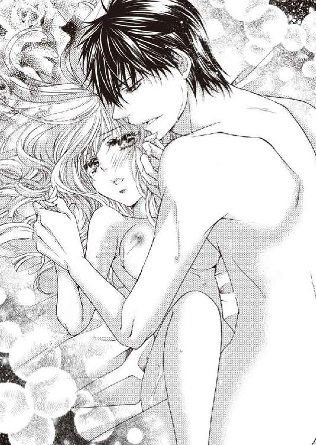
本当は、あのときもこうしたかったのに──彼とは結婚できないルイーズを困らせることにならないように、触れることしかしなかったのだろう。
こんなに彼に想われて──嬉しくてたまらない。
今度は歓喜の涙をこぼしながら、ルイーズはぎゅっとアーネストの背中をかき抱く。
「......アーネスト......。私も......、あなたが好き......」
アーネストも強く抱き返し、優しくルイーズの唇を塞ぐ。
口腔をまさぐられ、舌を絡め取られて吸われ──キスの快感に酔い痴れているうちに、ルイーズは引き裂かれた痛みなど忘れていた。
「愛している。私のルイーズ......。こんなに人を好きになったのは、あなたが初めてだ」
ルイーズが涙で潤んだ瞳で彼を見つめて微笑むと、切なげな顔をしたアーネストが、ゆっくりと腰を揺すり始める。
やんわりとしたその刺激に官能を刺激され、ほのかな快感の兆しが芽生えた。
「ああ......っ！ アーネスト！」
ルイーズの声に甘えるような響きが混じり、ホッとしたように顔を綻ばせたアーネストが、腰の動きを少しずつ大きくしていく。
ルイーズは彼の腕の中で、愛される喜びに胸を震わせ、甘く切ない痛みに耐えた。
◆ ◆ ◆
翌日アーネストは、ルイーズを連れて、ミッドランズ公爵のロンドン邸へ足を運んだ。
一足先に領地の本宅へ帰ると言っていた息子が、いきなり『結婚したいレディがいる。紹介したい』と使者を立てたのだから、両親はさぞ驚いたことだろう。
とりあえず今日は両親と会って、婚約パーティーをいつ開くか相談するつもりだった。
しかし、招待客が集まる応接室には、なぜか嫁に行ったはずの姉たちや親戚まで、ズラリと集まっていたのだ。
「父上。母上。私は結婚したいレディを紹介したかっただけなのに、なぜこんな大事になっているのです？」
身内だけとはいえ、アーネストは、両親が『なんとか爵位と領地を相続できる男子を儲けたい』と、必死で頑張った結果生まれた、十六人姉弟の末子。十五人もいる姉たちが家族を連れて集まると、結構な人数になる。
頭を抱えて訊ねたアーネストに、十番目、十一番目、十四番目の姉たちが不満げに言う。
「あーら。娘が親の家へ遊びに来てはいけませんの？」
「ところで、ロード・バーミンガム。あなた、うちの娘の誕生日が近いというのに、なんの挨拶もなく、一足先に、昨日、田舎へ帰ろうとしていたそうね」
「あなたが小さかった頃は、あんなに大事にしてあげたのに......冷たいこと」
そんな昔のことなど、思い出したくもない。
今は嫁に行ったとはいえ、弟を儀礼称号で呼ぶのも嫌味だ。
言い返したいことはいろいろあるが、アーネストは憮然とした顔で黙り込み、姉たちの文句を聞き流す。
「それにしても、あのレディ嫌いのロード・バーミンガムが、よく結婚相手を見つけられましたこと」
「ええ。やっと生まれた嫡男なのに、一生独り身を通すつもりかと、心配しておりましたけれど......」
ほかの姉たちも後ろでひそひそ言っているが──そもそも誰のせいで女性不信になったと思っているのだろう。
姉たちが全員嫁に行ってくれて清々した──と思ったら、今度は姉たちによく似たタイプのご令嬢たちとの見合い攻めに遭わされて、アーネストはついに結婚嫌いになったのだ。
ルイーズは、そんなアーネストがようやく見つけた『結婚したいレディ』なのに──十五人もいる小姑どもに恐れをなして、婚約した翌日に逃げられてはかなわない。せめて今日くらい、わざと聞こえるように噂話をするのはやめてくれ。
ルイーズが小うるさい小姑どもをどう思っているか気になって、アーネストは、さりげなく隣にいる彼女の様子をうかがった。
視線に気づいたルイーズは、目が合った途端、花が咲き綻ぶように愛らしく微笑む。
この癒される笑顔を見ると、アーネストも思わずつられて口許が綻んでしまう。
「んまぁ......ごらんになりました？ ロード・バーミンガムの、あのデレデレと腑抜けた顔......」
ザワザワザワッとどよめきが起こり、アーネストは慌てて表情を引き締めた。
「......本題に入ります。こちらは、ワトフォード伯爵のご令嬢、レディ・ルイーズ・バーロウです」
アーネストが紹介すると、ルイーズが両親に微笑みかけ、品よくお辞儀して挨拶する。
「お初にお目にかかります。ルイーズと申します。今年十六歳を迎えて、社交界デビューしました」
御歳七十歳を越える父ミッドランズ公爵が、不安げな顔でアーネストに問う。
「レディ・ルイーズの父上は、お前とのことをご存知なのか？ 確かレディ・ルイーズは、祖父にあたる元内閣閣僚サー・ジョージ・アッシュフィールドが、退任するとき授爵したアスカーン伯位の相続人。『父上のロード・ワトフォードは、爵位継承予定のない上流階級の子弟を婿に迎えるおつもりで、花婿候補を探している』という噂を耳にしたが......」
アーネストは結婚を前提にした社交を避けていたため、ルイーズに聞くまでそれを知らなかったが、父は知っていたらしい。
「ロード・ワトフォードには、昨日、結婚のお許しをいただくことができました」
そこで六十二歳の母ミッドランズ公爵夫人ヒルデガードが、ハッと気づいた顔をする。
「......もしかして......アーネストがあんなに『見合いなんてしない』『結婚したくない』とごねていたのは、レディ・ルイーズと結婚したくても、できなかったから......？」
そういうわけではないのだが──口を噤んで曖昧に笑っていれば、勝手にそう決め付けて納得してくれるだろう。
「ロード・ワトフォードに異存がないなら、すぐにでも女王陛下に謁見を願い出て、結婚の許可をいただかねば。婚約発表は八月二十日──お前のバースデーパーティーに行う」
性急な父の言葉に、アーネストはさすがに驚いた。
「誕生日まで、もうそれほど日数がありませんよ。ミッドランズ公爵家の招待客はともかく、ワトフォード伯爵家の招待客はどうなさるおつもりです？」
「これからなんとかする。お前のバースデーパーティーには、ミッドランズ公爵家と姻戚関係を結びたがっている貴族たちが、年頃の娘を連れて大勢訪れる。そのとき婚約発表をすれば、個別に縁談を断わる必要がなくなるから、いい機会だ」
どうやら父は、今年も強制的に見合いをさせるつもりで、年頃の娘がいる貴族を手当たり次第に招待していたらしい。
そして今夜も、口癖になってしまったお決まりのセリフを口にする。
「とにかく、一刻も早く結婚して、後継者たる男子を儲けて安心させてくれ。私はもう、いつ死んでもおかしくない歳なのだぞ」
安心させろと言われても──嫡男が生まれるかどうかは運次第。
「......孫の顔をお見せできるよう努力はしますが、産むのは私ではありませんし、子の性別は選べません。嫡男が産まれたら儲けもの──くらいに思っていてください」
父が不服そうな顔をしたので、さらに釘を刺しておく。
「レディ・ルイーズはロード・ワトフォードの掌中の珠。断腸の思いで結婚のお許しをくださった。なのに、父上の期待が重すぎて、うっかり破談にでもなったら恨みます。そのときは、私は一生結婚しないものとお考えください」
さすがに『まずい』と思ったようで、父はそれ以上催促するのをやめた。
応接室で食前酒を飲みながら歓談している間に、晩餐会の準備が整い、執事の案内で列をなして正餐室へ移動する。
正餐室では、大きなダイニングテーブルの中央に公爵夫妻が向かい合わせに座り、今日の主役であるアーネストとルイーズは、公爵夫妻の隣に席を与えられた。
男女交互に座るため、ルイーズはミッドランズ公爵の隣だ。祖父というほうがしっくりくる年齢の、いかめしい面構えの父の隣では気後れするかと思ったが──ワトフォード伯爵に大切に育てられた深窓の令嬢は、いつも通りの微笑みを浮かべて接している。
他愛無い話をしながら、相好を崩しているところを見ると、どうやら父は、未来の嫁が気に入ったらしい。
母は社交的で穏やかな性格だから、特に心配する必要はないだろう。
だが問題は、嫁に行った姉たちだ。アーネストは、『自分のいないところで、ルイーズが姉たちにいじめられるのではないか』と、気になってしょうがない。
晩餐が終わると、女性は、客間兼居間へ移動してお茶を飲み、男性は正餐室に残って酒を飲むか、喫煙室へ移動する。それが食事を終えたあとの一般的な過ごし方だが、いっそ自分も女性に混じって、客間兼居間へ見張りに行こうかとさえ思ったくらいだ。
しかし、母に目で制され、ここで自分が付いて行ったら、かえってからかいの種をまくことに気づいて思いとどまった。
正餐室で一人食後酒を飲んでいると、父ミッドランズ公爵が隣へ来て、感慨深げな表情で言う。
「お前の結婚嫌いには、これまでずいぶん手を焼かされたものだ。私が選んだ結婚相手を片っ端から『気にいらぬ』と袖にして、『廃嫡するぞ』と脅しても、『ご自由に。意に染まぬ結婚を強要されるくらいなら、貴族の生活など捨ててもいい』などと抜かして、さっさと家出の準備を始めおった。ほかに爵位を相続できる者がいないと思って、付け上がりおって......」
アーネストは、当時のことを思い出して苦笑する。
「別に付け上がっていたわけではありません。あのときは、本気で家を捨てようと思っていました。それに、父上がお膳立てした結婚を、男の側から断わることなどできません。どのご令嬢にも、一応『私が父に背き、家を捨てて平民になっても、ついてきてくださいますか？』とお伺いを立てましたよ。その日のうちに断わりを入れてきたのは、すべて先方です」
もちろん断わるだろうと踏んで、わざと父との不仲だけを強調して話したのだ。結婚を強要されたこと以外、親子喧嘩をする理由など一つもなかったが。
そんなアーネストの頑なな態度に手を焼きながらも、それ以外は、名門男子寄宿学校・名門大学を首席で卒業した自慢の息子であったため、結局は父が折れ、結婚を強要しなくなった。
しかし毎年、誕生日だの、クリスマスだのと理由をつけては、騙し討ちのような見合いパーティーを繰り返す。
父は少し不思議そうな顔で尋ねた。
「確かにレディ・ルイーズは可愛らしいお嬢さんだが、私が選んだ婚約者も、みな美しく聡明な教養あるお嬢さんばかりだったはず。いったいどういう心境の変化だ？」
「単に好みの問題です」
アーネストは、自分を嫌う姉たちのせいで上流階級のレディが苦手になったのだが──そもそもの原因を作ったのは、この父だ。
物心ついた頃から、アーネストは姉たちに名前を呼ばれたことがない。彼女らは、生まれながらに公位継承権と侯爵の称号が与えられた末っ子への皮肉をこめて、『ロード・バーミンガム』と呼び続けた。
姉たちはアーネストに表面的には謙り、陰でつらく当たる。徒党を組んでのけ者にしては、陥れ、毒のある嫌がらせを言う。しかも気位ばかり高くて、強欲で、計算高くて、自己保身のためなら、弟を犠牲にしてもいいと思っているのだ。
でもそれは、父にあからさまに『また女が生まれたか』と落胆されてきた上に、最後に生まれたアーネストだけが、男子というだけで、親の関心も、爵位も、領地も、財産も、すべて独占することになったから。
いつだったか母に、なぜ姉たちが自分につらく当たるのか──その疑問を投げかけられて、いろいろ考えているうちに、見えてきたことがある。
姉たちの気持ちを考えたら、恨むことも、嫌うこともできなくなった。
けれど、好意を抱くことも、信じることもできない。
父が選んだ婚約者たちには、特に何かされたわけではなかったが、姉たちと同じ匂いを感じて好きになれなかった。
「父上に引き合わされた令嬢は、澄ました顔をしていても、内心ギラギラした目で獲物を狙っているのが気配で判りました。それで逃げたくなる。でもレディ・ルイーズは、おっとりした、思っていることが全部顔に出る可愛らしい人だ。そばにいると癒されます」
ルイーズを想って微笑むアーネストを見て、父が微かな笑みを漏らした。
「......レディ・ルイーズとは、本当はいつ、どこで知り合った？ ヒルデガードは『レディ・ルイーズの家庭の事情が、お前を結婚嫌いにしたのではないか』と言っていたが、社交界デビューしたばかりの、ワトフォード伯爵家の一人娘が原因とは思えん」
アーネストもクスリと笑みを漏らして答える。
「ご明察。父上の大切な宝が盗まれた事件の捜査中、メイヤー子爵ロバートとして知り合いました。彼女は、私が名も知らぬ仮面の男だったときも、今と変わらぬ微笑みを向けてくれました」
もしかしたら、素性を隠してルイーズと知り合ったから、こんなに惹かれたのかもしれない。
アーネストにとって、自分がそう遠くない将来に引き継ぐ地位や称号は、ある種のコンプレックスになっていた。
見合い相手は、みなアーネスト・グレンジャーではなく、ミッドランズ公爵の法廷推定相続人バーミンガム侯爵を見ている。父と同等以上の家柄と権力を持つ家のレディでなければ──いや、自分が裕福な貴族の嫡男である限り、『地位と財産が目当てだろう』と疑ってしまう。
そんなうんざりさせられるだけの、煩わしい見合い攻めから逃げることに疲れ始めていたときに、たまたま素性を隠して、好感を持てるレディと知り合った。
その少女は、風が吹けば折れてしまいそうなほど儚げに見えるのに、意外な行動力と、芯の強さを持っている。行方不明の父を捜して、大胆にもアーネストの連れのフリをして、闇オークション会場に潜り込んだのだ。
無謀さに呆れて怒鳴りもしたが──自分は何もしないで、文句ばかり言う姉たちを見てきたから、アーネストは、我が身の危険を顧みず、大切な人のために必死に行動できる彼女に心惹かれた。
素直で穏やかな、微笑むだけで人の心を和ませる、ピンクのバラのように可憐なレディ・ルイーズ。彼女となら、結婚してもいいと思った。
なのにルイーズは、家のために望まない結婚をすると言う。
ずっと望まない結婚に抵抗してきたアーネストには、とても腹立たしい話だ。
つい激昂して、ルイーズを泣かせるような真似をして──絶対に赦されないことをしたと思っていたのに、彼女は赦してくれた。
それがきっかけで、アーネストはルイーズに、改めて惚れ直したのだ。
ルイーズなら、生涯のパートナーとして、共に苦難を乗り越え、支え合っていけるような気がする。
「私は別に、結婚したくなかったわけじゃない。相手次第なんです。父上が、頑固な息子の我儘を許してくださったこと──とても感謝しています」
「......まさかお前に、こんなふうに、礼を言われる日が来るとは思わなかった......」
「心がとても満たされているから、今はすべてに感謝したい気持ちなんです」
バーミンガム侯爵として生まれ、レディが苦手になったから、運命の人と巡り逢うまで、頑なに婚約も結婚も拒んだ。
いろんな過去が積み重なって、今の幸せがある。
バーミンガム侯爵アーネスト・グレンジャーとして、この世に生まれて来てよかった。心からそう思う。
深夜まで続いた晩餐会がお開きとなり、再び応接室で顔を合わせたルイーズは、萎れることなく優しい笑みを湛えていた。
ルイーズを馬車で送り届ける際、アーネストは気になっていた姉たちの感想を尋ねてみたのだが──。
「とても親切で、優しいお姉様たちでしたわ」
意外なセリフを聞かされ、一瞬聞き違いかと思ってしまった。
ルイーズが姉たちの悪意に気づいていないだけなのか、気づかないフリをしているのか。
それとも、計算高い姉たちが、『嫁イビリして憂さを晴らすより、未来の公爵夫人を手懐けて利用するほうが得』と考えて、取り入ろうとしているのだろうか──。
（......あるいは、私の被害妄想か......？）
姉たちだって、もう嫁入り前の少女ではない。今は他家の嫁で、それなりの地位を持つ貴族の妻で、人の親だ。アーネストが運命の女性と巡り逢って変わったように、姉たちだって、変わっているだろう。
◆ ◆ ◆
ミッドランズ公爵夫妻は、帰郷する前にワトフォード伯爵邸に赴き、アーネストとルイーズの結婚について、具体的な話を進めた。
ミッドランズ公爵は、女王陛下に謁見を賜り、アーネストが申請した結婚を、異例の速さで直接許可していただき──予定通り、嫡男アーネストのバースデーパーティーで、婚約発表を行うことになったのだ。
そのため、ミッドランズ公爵夫妻は使用人たちを引き連れて、一足先に領地にある本宅へ帰っていった。
アーネストは、ルイーズとワトフォード伯爵を連れて、あとからゆっくり追いかけることになっている。
従者が乗る馬車を引き連れ、アーネストとワトフォード伯爵父娘は、ずいぶん前に、ミッドランズ公爵家の本宅の門を潜った。
しかし、さすが公爵家の本宅。行けども行けども館が見えず、緑豊かな敷地内を馬車で走り続けている。
「ああ、ようやく見えてきましたよ、あれがミッドランズ公爵家のカントリーハウスです」
さすが公爵家の本宅。館の規模もかなり大きい。ワトフォード伯爵邸より遥かに。
今日から一カ月ほど、ルイーズとワトフォード伯爵は、この邸宅に滞在する予定だ。
アーネストがワトフォード伯爵に訊ねた。
「ロード・ワトフォードは、鳥 猟ゲームはお好きですか？」
「ああ。友人たちに誘われて、付き合いでやる程度だがね」
ルイーズは連れて行ってもらえなかったので、父がどの程度の腕なのか知らないが──実際には、ワトフォード伯爵は晩夏から晩秋にかけて、よく猟に出かけている。
アーネストはさわやかな笑顔で父に誘いかけた。
「義兄たちが鳥 猟ゲームや獣 猟ゲームが好きなので、狩猟シーズンに親戚が集まると、必ず猟をするのです。ぜひご一緒にゲームしませんか？」
「狐狩りができるのは、十一月の第一月曜日からだが──今ちょうど、ライチョウ猟が解禁されたところだね。来月に入ると、ウズラ猟も解禁になる」
「ええ。もしよろしければ、狐狩りができる時期にも、ぜひまたいらしてください」
それを聞いてワトフォード伯爵が人の悪い笑みを浮かべて問う。
「私をその気にさせて、ルイーズをここへ呼び寄せようという魂胆だろう？」
「魂胆だなんて、人聞きの悪い。私は未来の義父上をダシにしなければ恋人を誘えないほど、不甲斐ない男ではありませんよ」
ミッドランズ公爵家本宅の敷地内や、領地内の観光名所について話しているうちに館へ着き、公爵夫妻が大歓迎で迎えてくれた。
使用人たちが宿泊客の部屋へ荷物を運んでいる間に、応接室でお茶をご馳走になり、ミッドランズ公爵の言葉を皮切りに、明後日に迫った婚約発表の打ち合わせが始まる。
「実は明日の夜までに、女王陛下と、陛下のご家族がお越しになる予定です」
「女王陛下が......!?」
ミッドランズ伯爵の言葉に、ルイーズとワトフォード伯爵は驚きを隠せない。
「ええ。議会が閉会すると、女王陛下はご家族とスコットランドへ避暑にお出かけになる。その道中お立ち寄りいただいて、アーネストのバースデーパーティーに出席していただくことになっております」
嫡男のバースデーパーティーに、女王陛下がご出席してくださるなんて──さすが公爵家。ルイーズもワトフォード伯爵も呆然とするばかりだ。
「いや実は......次から次へといい縁談をぶち壊していくアーネストに、なんとか嫁を娶らせたくて、今年もバースデーパーティーに、年頃のレディがいる貴族を大勢招待しておるのです。先方は、アーネストの花嫁を探す舞踏会のつもりでいらっしゃる。しかし、暗に『花嫁を捜している』と仄めかしておきながら、レディ・ルイーズとの婚約を発表したのでは、『おもしろくない』と思われる方もいらっしゃるかもしれない。そこで、女王陛下から祝福のお言葉を賜れば、誰も文句は言えなくなると思いましてな」
ミッドランズ公爵の言葉に、ワトフォード伯爵が頷いて言う。
「私も常々、娘の結婚について、希望をはっきり口にしておりましたので、万が一にも、二人の結婚に反対する者がいるとすれば、風当たりを受けるのは、おそらくうちの娘でしょう。陰口を叩かれるのではないかと、心配しておりましたが......女王陛下がお味方になってくださるなら安心です」
女王陛下は予定通り、翌日の夕方到着し、その夜は、女王陛下ご一家を歓迎する晩餐会が開かれた。
そして八月二十日──いよいよアーネストのバースデーを迎え、午後から招待客が、玄関近くの応接室に集まり始める。
そこでは晩餐会が始まる直前まで、招待客がお茶や食前酒を飲んで歓談していたが、女王陛下とそのご家族は、時間がくるまで別室で過ごされていた。
アーネストは、タイミングを計って女王陛下ご一家を応接室にご案内し、招待客とともに列をなして正餐室へ移動する。
ルイーズは、父ワトフォード伯爵とともに、正餐室の近くの部屋で、呼ばれるのを待っていた。
打ち合わせでは、バーミンガム侯爵アーネストの二十五歳のバースデーを祝うスピーチのあと、ルイーズとワトフォード伯爵が、執事の案内で入場することになっている。
そしてアーネスト自身の口から、婚約者として紹介されるのだ。
ルイーズは父にエスコートされ、アーネストの隣へ歩いていく。
父はアーネストにルイーズを託して自分の席へ向かい、席に着いたところでアーネストが言う。
「皆様、私の二十五歳の誕生日にお集まりいただき、まことにありがとうございます。本日は、私の婚約者、レディ・ルイーズ・バーロウをご紹介します」
会場がどよめいた。ルイーズが自己紹介する声など聞こえないほど。
そのとき、女王陛下がすっくと立ち上がり、その手の動きで場を静めてくださった。
「ロード・バーミンガム。レディ・ルイーズ。良き伴侶に巡り合えてよかったですね。二人の婚約を、心から祝福します。まことに好ましい縁組です。結婚式を、楽しみにしていますよ」
女王陛下が『好ましい縁組』だと祝福しているのに、反論する人間などいるわけがない。
「ありがとうございます、女王陛下」
二人で陛下に感謝し、アーネストがビロード張りの小さなジュエリーケースを取り出した。
「レディ・ルイーズ。私からの婚約指輪を贈ります。あなたのイメージは、やはりピンクダイヤだ。婚約指輪にほかのジュエルを贈ることなど思いつかなかった。どうかこれを、受け取ってください」
それは大きく美しい、綻びかけたバラの蕾のように見えるローズカットの、ファンシーインテンスピンクダイヤをはめ込んだプラチナリングだ。
ルイーズはその婚約指輪を見て、メイヤー子爵を名乗っていたアーネストから初めて贈られた、ルイーズ・オディエというピンクのバラの花を思い出した。
あのバラはもう枯れてしまったけれど──バラの蕾を思わせる、この指輪のピンクダイヤは、永遠に枯れることはない。
「ありがとうございます、ロード・バーミンガム......」
幸せな二人と、二人を見守る温かい眼差し。そして、ミッドランズ公爵家と姻戚関係を結ぶ機会を失った貴族やレディたちの、落胆のため息が聞こえる晩餐会だった。
晩餐会が終わると大広間へ移動し、今日の主役二人のダンスを皮切りに、舞踏会が始まる。
夜を徹しての舞踏会は明け方まで続き──肩透かしを食わされて傷心のレディたちと、アーネストに見初められなかったレディたちを狙ってここへ来た、花嫁募集中の貴族の子息たちの中から、何組かカップルがまとまったようだ。
アーネストのバースデーパーティーが終わり、女王陛下は、それから三日ほどミッドランズ公爵邸に留まられ、スコットランドへ避暑に旅立たれた。
結婚式は約半年後──ルイーズの十七歳の誕生日に行う予定だ。
アーネストは真剣な顔でルイーズに言う。
「結婚と出産の日程が合わない──ということになっても困るので、婚約期間中は禁欲します。しかし、式を挙げたら、老い先短い父の願いを叶えるために、子作りに付き合ってください。あなたは......いろいろ大変だと思うが──」
彼の子供を──ミッドランズ公爵家の後継者を産むつもりで婚約したのだ。愛する人のためなら、どんなに苦しいことでも耐えられる。
「あなたの望みは、私の望みです。必ず跡取りを産んでみせますわ」
なるべく早く男の子が生まれてくれるよう、ルイーズは神に、そして天国の母に願いをかけて祈った。
二月もそろそろ終わりを迎えようとしている今日は、ルイーズの十七歳の誕生日。
一年前の今日、花婿候補の青年たちと引き合わされるバースデーパーティーの直前に、ルイーズは父から、大切な母の形見──ピンクダイヤのパリュールを贈られた。
それは大粒の濃いピンクダイヤモンドをメインにあしらった、プラチナのティアラ、ネックレス、イヤリング、ブレスレット、リングの五点セットオートクチュールジュエリーで、母は十六歳の誕生日に祖父から贈られたこのパリュールを身につけて、社交界にデビューしている。
ルイーズも去年の春、デビュタントのレディが纏う純白の豪華なドレスと、このジュエリーを身につけて、社交界にデビューするはずだった。
しかし、夢は潰えた。大切な母の形見が、ロンドン中を騒がせていた盗賊ヘルメスに盗まれてしまったから。
しかも、盗まれたパリュールの行方を追っていた父まで行方不明になるという、予想もしない不幸な出来事が続いたのだ。
そしてルイーズは、唯一の肉親である最愛の父──ワトフォード伯爵の行方を捜すため、父の留守を預かる家令たちが止めるのも聞かず、父が消息を絶ったという、美術品愛好家クラブのマスクドボールへ出かけて行った。
従順でおとなしいルイーズが、使用人たちの止め立てを無視して、こっそり外出したのはあれが初めてだ。
あのとき勇気を奮って、父を捜しに行かなかったら、運命はどう転がっていたのだろう？
ルイーズは、マスクドボールの裏で開催される、盗品を扱う闇オークションに潜入しようとしていたとき、運命の人──バーミンガム侯爵アーネストと巡り逢った。
彼はヘルメスに盗まれたミッドランズ公爵の宝を探すため、メイヤー子爵と素性を偽り、ヘルメスと盗品売買組織を追っていた。
行方不明だった父が帰宅し、盗まれた母の形見のパリュールを取り戻すことができたのは、ヘルメスと盗品売買組織を捕らえたアーネストのおかげだ。
そして彼はルイーズの、『嫡男以外の、実家の爵位を継ぐ予定のない余子を婿に迎える』という、父が望んでいた未来さえも変えてしまった。
ルイーズは今日、バーミンガム侯爵アーネストと結婚し、ミッドランズ公爵家へ嫁ぐ。
純白のウェディングドレスに身を包み、デビュタントボールでは着けられなかった、母の形見のパリュールを身に着けて──父ワトフォード伯爵のもとから巣立っていく。
花嫁控え室のドアがノックされた。
侍女が父の訪れを告げ、控え室の中へ招き入れる。
花嫁の装いをしたルイーズを見て、父が眩しげに目を細め、少し淋しげに微笑んだ。
「きれいだよ、ルイーズ。世界一美しい花嫁だ」
「お父様......」
誰よりも愛していたこの父より、もっと愛せる人に巡り逢うとは思わなかった。
幼い頃、ルイーズは父と約束したのだ。婿をもらって、一生父のそばで暮らすと。
なのに、約束を守れなかった。運命の人──アーネストと巡り逢ってしまったから──。
ルイーズを嫁に出すと決めたとき、父はどんなにやるせない思いをしただろう？
淋しいと口にはしないが、微笑む父の瞳には、愛娘を手放す淋しさが滲んでいる。
「私、お父様の娘に生まれてよかった......。お父様と過ごした十七年の歳月は、とても幸せな日々でした。早くにお母様が亡くなっても、お父様が二人分の愛情を注いでくださったから、淋しくなかったわ」
感謝の気持ちを言葉にして伝えているうちに、熱い想いが涙となってあふれてきた。
「花嫁が泣いてはいけないよ」
そう言って、涙を拭いてくれた父の目許も濡れている。
「私の最愛の娘ルイーズ。私のほうこそ、お前がいてくれてよかった。お前がいたから、シルヴィアを亡くした悲しみに耐えられた。もう永遠に会えなくなる、あのときの悲しみを思えば──お前を花嫁として送り出すことは、むしろ幸せなことだ。お前がこうして生きて、元気で笑っていてくれる。それが私の一番の望みだ。彼と幸せになりなさい」
「お父様......！」
父の愛の深さに、ルイーズは心から感謝した。
「私、お父様にお返ししたいものがあるの」
ルイーズは、母のパリュールの中の一点──大粒の濃いピンクダイヤモンドをあしらったプラチナリングを取り出し、父の手を取り、その掌に指輪を乗せて言う。
「彼がピンクダイヤの婚約指輪をくれたから、これはお父様が持っていて。このピンクダイヤを見てお母様を思い出すとき、今日、この日の私のことも思い出してほしいの」
瞳に涙を滲ませたまま、ルイーズは精いっぱいの微笑みを浮かべた。
父は指輪を大切そうに手の中に包み、ルイーズをしっかりと抱きしめる。
「ルイーズ......私の可愛い娘。今日まで見守り続けてきた、お前の人生の中で最も光り輝いている今日のお前の晴れ姿を、この瞳に一生焼き付けておく。決して忘れるものか......」
そばで二人を見ていた侍女が、控え目に促す。
「そろそろ結婚式が始まるお時間です」
ルイーズは父にエスコートされ、結婚式場に移動する。
結婚式が行われるのは、ロンドンに建つ、荘厳な白いゴシック様式の教会だ。
宝石を散りばめたような美しいステンドグラスが、幻想的な光の影を落とす白い大理石のヴァージンロード。
美しいパイプオルガンが鳴り響く中、ルイーズは父とともに、この先にある祭壇の前で待つアーネストのもとへ、一歩一歩、ゆっくりと歩いていく。
ヴァージンロードを歩むルイーズを見守る参列者の中に、女王陛下もいらっしゃる。
一歩前へ進むごとに、いくつもの思い出が脳裏を駆け抜け──嬉しかったこと。悲しかったこと。楽しかったこと。苦しかったこと。それらすべてが懐かしく心を揺さぶり、必死で泣くのをこらえなければならなかった。
やがてアーネストのもとへ辿り着き、ルイーズは大好きな優しい父から、誰よりも愛しい彼に手渡される。
ルイーズはアーネストにエスコートされて祭壇の前へ進み、父は淋しく参列者席に戻って、愛娘の生涯一度の輝かしいセレモニーを見守るのだ。
美しい賛美歌が歌い上げられ、神父が聖書を朗読し、愛の教えを説く。
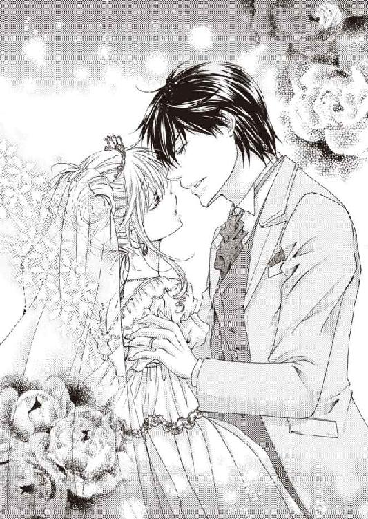
神父がアーネストの名を呼び、問いかける。
「あなたは、レディ・ルイーズ・バーロウを妻とし、健やかなるときも、病めるときも、喜びのときも、悲しみのときも、共に歩み、他の者に依らず、死が二人を分かつまで、愛を誓い、妻を想い、妻のみに添うことを、神聖なる婚姻の契約のもとに誓いますか？」
「誓います」
ルイーズも同じ問いを投げかけられ、神聖な気持ちで愛と貞節を誓った。
結婚指輪を互いの指に嵌め、キスで誓いの言葉を封印する。
二人の結婚に異議を唱える者などいない。
結婚が成立し、神の祝福を受けて、結婚誓約書にサインした。
今日、このときからルイーズは、バーミンガム侯爵アーネスト・グレンジャーの妻。バーミンガム侯爵夫人──レディ・バーミンガムとなるのだ。
ルイーズの胸を熱くする歓喜と幸福が、輝くばかりの微笑みとなってあふれ出る。
美しいパイプオルガンの調べに乗って、参列者が賛美歌を歌い、ルイーズはアーネストにエスコートされて、ヴァージンロードを歩いて退場した。
教会から場所を移し、ミッドランズ公爵のロンドン邸で、嫡男バーミンガム侯爵と、バーミンガム侯爵夫人の結婚披露パーティーが続く。
ウェディングケーキや軽食、飲み物を振舞うガーデンパーティーのあと、邸内での晩餐会へ移り、新郎新婦のファーストダンスで舞踏会が始まった。
アーネストと踊りながら、ルイーズはまた、彼との出逢いに想いを馳せる。
マスクドボールで初めて二人で踊ったとき、ルイーズは、『少しでもこの曲が長く続けばいいのに』と願っていた。
まさか彼と結婚することになるとは思いもしなかったが──あのときすでに、この恋は始まっていたのだ。
そして今日、レディ・ルイーズ・バーロウの初めての恋が終わり、レディ・バーミンガムとしての、新しい人生が始まる──。
舞踏会は明け方まで続くが、新郎新婦は途中でこっそりパーティーを抜け、部屋付きの使用人に案内され、近侍と侍女をつれて、若夫婦の私室がある続き部屋へ移動した。
ドアを開くと、そこは広い夫婦の居間兼客間になっていて、室内には、夫の部屋に続く鍵付きのドアと、妻の部屋に続く鍵付きのドアがある。個人の部屋は、それぞれ書斎兼居間、寝 室、更衣室、浴室、化粧室などを備えた、ごく普通の続き部屋だ。
普通の部屋と違うのは、夫の寝室と妻の寝室が、鍵付きのドアでつながっていること。どちらかが鍵をかけない限り、互いの寝室を自由に行き来できる。
舞踏会で着たピンクのドレスから、ナイトガウンに着替えて侍女を下がらせ、奥の寝室に移動すると、すでに着替えを終えたアーネストが、ルイーズのベッドに腰かけて待っていた。
「早くおいで、ルイーズ。私の可愛い人」
アーネストは甘い声で囁きながら、手を差し伸べて微笑む。
ルイーズは気恥ずかしさに頬を染め、ベッドへ近づいていく。
そばへ行くと抱き寄せられ、優しくくちづけられる。
「早く睦み合いたかった......。今日のあなたは、一段と可愛らしくて......披露宴の間中、どうしてやろうかと考えていたよ」
耳元で甘く囁かれ、愛される予感に、身も心も震えてしまう。それはくちづけや愛撫を受ける期待であり、体を繋ぐ苦痛に対する恐れでもあった。
「......優しくしてくださいね」
ルイーズがおずおずとそう口にすると、アーネストが『可愛くてたまらない』と言いたげに笑み崩れる。
「優しくするとも。初めてのときは私も余裕がなかったが、今度はもっと、よくしてあげられると思う......」
甘い微笑みを浮かべた彼に優しいキスを繰り返されているうちに、緊張が解れ、戸惑いや恐れが消えていった。
唇に触れられるたび、幸福感が胸に広がっていく。
「愛している、ルイーズ」
甘い囁きが、ルイーズの官能を目覚めさせ、体の芯がきゅんと甘く締めつけられる。
そっとベッドに寝かされ、優しく髪や頬を撫でられて──彼の唇がそっと唇を押し包み、甘くしっとりと吸う。ルイーズはそれだけでうっとりして、体の力が抜けてしまった。
緩んだ唇の隙間からそっと舌を差し込まれ、口腔を愛撫されると、痺れるような快感が背筋を走る。
がっしりとした温かくて大きな手が、ルイーズの体をそっと愛撫しながら、ナイトガウンの前をはだけた。
裸の腰や脇腹を撫でられ、掌で胸を押し上げられ、やんわりと揉まれる。
「やわらかくて、気持ちいい......」
笑みを含んだアーネストの囁きに肌をくすぐられ、ルイーズも笑ってしまう。
初めてルイーズの胸に触れたとき、彼は言った。男という生き物は、女性の胸の膨らみに憧れを抱いているものだと。
ならばこんなふうに、彼を喜ばすことができる女に生まれてよかった。
女に生まれたから、愛する人の子供を産んであげられる。
両手で胸を揉まれ、乳首を優しく撫でられていると、お腹の辺りがきゅんと疼く。
ルイーズは、自分の体が彼を受け入れる準備を始めたことを自覚した。
キスで塞がれていた唇が解放され、彼の唇が首筋を辿って胸元へ降り、胸の頂に実る果実を口に含んだ。
「あ......っ、アーネスト......！」
乳首を舐められ、吸われる恥ずかしさと、そこから湧き上がる甘い快感が、ルイーズを戸惑わせ、悩ましい声を上げさせる。
口と手で心地よく体を愛撫されながら、いつしかルイーズは、生まれたままの姿にされていた。
アーネストも、キスと愛撫を続けながら、器用に片手で自身の衣服を脱ぎ捨てていく。
裸で彼に抱きしめられると、肌の温もりがじかに感じられて心地いい。
ルイーズも、しがみつくようにアーネストを抱きしめ返した。
「アーネスト！」
「ルイーズ！ 私の可愛いルイーズ！」
もう一度唇に口づけて、アーネストはルイーズの腹部を右手で撫で下ろし、淡い茂みに潜む陰核に優しく触れる。
「ああ......っ！」
彼はそっと掌全体で茂みを押し包み、感じやすい場所に指先を当て、淫らな振動を送り込む。
「ああんっ！ あっ、あっ、あ......！」
押し殺そうとしても、恥ずかしい声が出てしまう。
「気持ちいい？」
耳元で彼に囁かれ、ルイーズは困惑した。
「......聞かな...で......。そんな......」
「私は聞きたい......。こうしていると、あなたの体が熱を持って、きれいなピンクに染まっていく......。だから、感じているのは解ってる。でも、あなたの可愛らしい声で、どんな気持ちか聞かせてほしい......」
アーネストは吐息のような囁きをルイーズの耳に吹き込みながら、右手で巧みな愛撫を続け、左手でそっと乳首を摘まむ。
「はぁあん！」
下腹が甘く淫らに疼き、快楽の蜜がとろりと股の間に滴り落ちる。
アーネストは、快楽の蜜に濡れそぼった花びらを右手の指でそっと掻き分け、熱くとろけた蜜口に指先を押し当て、そっと潜り込ませた。
「痛くない？」
優しい声で訊ねられ、ルイーズは小さな頷きで答える。
一度アーネスト自身を受け入れたことがあるせいか、指を奥まで入れられても、少しも痛くなかった。それどころか、中をかき回すように蠢かされると、感じて体が震えてしまう。
「気持ちいい？」
聞かれても、まともに答える余裕などない。
ルイーズが息を乱して喘ぎなから、震えるような頷きで答えると、アーネストは甘やかな笑みを漏らして、ルイーズの頬にキスを落とす。
そしてアーネストは、右手の親指を陰核に押し当て、中と外を同時に刺激しはじめた。
「ひ......ひぁ......ああああ......っ！」
あまりの快感に目の前が白くなる。ルイーズは、ここまで激しい快楽に翻弄されたのは、生まれて初めてだ。
中を刺激する指が二本に増やされ、体の中でバラバラに蠢き始めた。
「あ......っ！ はぁ......っ！ アッ、アッ、アアア......っ！」
ルイーズは官能の嵐に巻き込まれ、我を忘れて悶え、乱れて息も絶え絶え。
指が抜かれ、膝を抱えて挿入の体勢を取られても気づかなかった。
たくましい彼の欲望を蜜口に押し当てられ、ゆっくりと押し込まれていく。
とろけた体は抗うことなく彼自身を受け入れ、飲み込んだ。
「ルイーズ......。私のルイーズ......。つらくはないか？」
アーネストに訊ねられ、ルイーズはようやく自分が置かれている状況を理解した。
夫となった愛しい人の欲望が、体の中で熱く脈打っている。
その力強い脈動が、アーネストの想いの激しさと、心の昂りを伝えてくる。
得も言われぬ幸福感が胸にあふれ、ルイーズは我知らず微笑んでいた。
「ああ......ルイーズ！ 愛している......！」
ふいに唇を奪われ、忍び込んできた舌先で口の中をまさぐられ、舌を巧みに絡め取られて、痺れるほど吸われる。そんな息が詰まるほど激しい口づけを受けながら、下からすくい上げるように揺さぶられ始めた。
浅く、深く、大きく、小さく、早く、ゆっくり──うねりながら緩急をつけて、腰を揺らされ、快楽の波に押し流されていく。
ルイーズはシーツの海に揺蕩いながら、何度も波に飲み込まれ、愛しい人に縋りついて、喘ぎ、悶え、嬌声を上げて溺れ続けた。
「愛している......」
甘くかすれた囁きが耳元をかすめるたび、身も心も歓喜に震え、気が遠くなるほどの幸福感に満たされる。
突き上げる動きが激しくなり、アーネストの欲望が、体の中で膨れ上がった気がした。
熱い奔流が堰を切ってあふれ、快感にとろけた蜜壺に注ぎ込まれる。
彼の愛情で身も心も満たされ、ルイーズは一瞬、天国の白い花園を見たような気がした。
アーネストが深く大きなため息をつき、弛緩した体でルイーズを優しく抱きしめる。その温もりがあまりにも心地よくて、ルイーズはしばし、彼に抱かれてまどろんだ。
◆ ◆ ◆
愛する妻──ルイーズが心地よさげに腕の中で眠っている。
彼女の安らかな寝顔を見ているだけで、とても幸せだ。
まさか、こんなに愛しい存在に巡り逢えるとは思わなかった。
『式を挙げたら、老い先短い父の願いを叶えるために、子作りに付き合ってください』
アーネストは婚約中、ルイーズにそう言ったが、父ミッドランズ公爵が跡取りの孫を望んでいることは、頻繁に夜の夫婦生活を営むための口実だ。
初めて体を繋げたとき、ルイーズは泣くほど痛がった。可哀想だと思ったが、走り出した欲望はもう止められなかった。
結婚前のレディの処女を強引に奪うなんて、高貴な男のすることじゃない。そう思いながらも、アーネストはルイーズをかき口説いて押し切り、最後まで事に及んだ。
精いっぱい優しくしたつもりだが、つらそうな様子を見ていると、罪悪感で胸が痛む。
彼女にこんな思いをさせてまで、自分の欲望を満たすなんて──我ながらひどい男だと思う。
ルイーズはそんな男の我儘を、包み込むような優しい微笑みで許してくれたが、内心はどう思っているのか解らない。
本当は、男の欲望を向けられるのが怖いのではないか。滾る想いを受け入れるのは、つらいのではないか。
湧き上がる不安がアーネストの心を揺らし、結婚するまでの禁欲を決意させ、結婚後、思うさま彼女を抱くための言い訳まで用意させた。本音を言えば、アーネスト自身が、可愛いルイーズを抱きしめて、無我夢中で想いを遂げたくてたまらないだけなのに──。
しかしルイーズは、アーネストの狡い口実さえ、覚悟を決めた静かな微笑みで受け入れてくれた。
『あなたの望みは、私の望みです。必ず跡取りを産んでみせますわ』
ルイーズはアーネストの母──ミッドランズ公爵夫人が跡取りの男子を産むため、十六人も子を産んだことを知っている。
大きさから考えて、産みの苦しみは、処女喪失の痛みなど比べ物にならないだろう。それを承知で、『必ず跡取りを産む』と言ってくれた彼女の気持ちが嬉しい。
アーネストは、ルイーズを生涯大切にしたいと、心から思う。
彼女の苦痛を少しでも和らげたくて、不慣れな女性を悦ばせるにはどうしたらいいか、もっと詳しく教わって、手順を考えた。
初夜の花嫁をどうやって可愛がるか──想像するだけで困ったことになってしまったが、今日までぐっとこらえてきたのだ。
ようやくそのときが来て、嬉しい反面、内心少し不安でもあった。
しかし、ルイーズはもっと不安だろう。
精いっぱい余裕があるフリをして愛を囁き、前戯で彼女の緊張が解れたところで、ゆっくりと指を入れてみると──初めてそうしたときのように痛がらない。むしろ感じて悶えている。その隙に挿入して──互いに快楽を与え合える、身も心も蕩けるほど幸せな新婚初夜を過ごせた。
綻びかけたピンクのバラのように可憐な少女は、あでやかに咲き綻んで女になり、匂い立つ色香でアーネストを魅了する。こうして懐に抱いているだけで、欲望を誘うほど。
できればもう一度あの幸福を味わいたいが、まだ男女の交合に慣れていない花嫁に無理はさせられない。
アーネストは愛しい妻の眠りを妨げないように、淡い金色に輝く髪を優しく撫でつけ、白い額にそっと口づけた。
「......私は、世界一幸せなノーブルマンだ......」
貴族の結婚は、家同士の事情が何より優先される。それなのに、手に入れることができないはずの、美しい花を我が物にした。
「生涯あなたにあふれんばかりの愛を注いで、この腕の中で、幸福に満ちた笑顔を咲かせ続けてみせる......」
ルイーズは、微笑むだけでアーネストを幸せにしてくれる、この世に二つとない宝。
そんな宝を手に入れた今日、この日は──十七年前、彼女がこの世に生を受けた日でもある。
彼女が生まれてきたことに──そして二人を巡り合わせた運命に、感謝せずにはいられない。
今度は唇にそっと口づけると、眠っていた彼女が目を覚まして微笑んだ。
その表情があんまり可愛くて、ぎゅっと抱きしめずにはいられなくなった。
「愛してる、私のルイーズ」
囁くと、微笑みとともに、望んでいた応えが返ってくる。
「私も、愛しています。アーネスト。私の旦那様......」
やわらかく澄んだ笛の音のような彼女の声を聞いた途端に、アーネストのなけなしの忍耐が底をついた。
「ルイーズ。もう一度......あなたの中で、悦びのときを過ごしたい......」
欲望に震える声で囁くと、ルイーズは頬を染め、困った顔で微笑みながら静かに頷く。
「ああ......なんて可愛いんだろう。あなたが愛しくてたまらない......」
愛を告げた唇で彼女の唇を塞ぎ、アーネストは再び自身の欲望を、温かく心地いい蜜壺の中へうずめていく。
「あ......！」
先ほどまで愛し合っていた余韻でとろけているせいか、ルイーズは欲望を受け入れただけで唇をわななかせ、甘いため息をこぼす。
温かく湿った粘膜の襞に迎え入れられ、吸い付くように心地よく締めつけられて、アーネストも深いため息をこぼした。
「......あなたの中......最高だ......。とても気持ちいい......。ずっとこうしていたいくらいだ......」
切ない声で囁くと、ルイーズが恥ずかしそうな困った表情で頬を染める。それもまた、可愛くてたまらない。
ゆっくりと腰をうねらせ、揺すりあげるように前後させると、ルイーズが甘く切ない声を上げる。
「ああ......っ！ はぁぁ......っん......」
「あなたも、こうしていると、気持ちいい？」
アーネストがそう訊ねると、ルイーズはますます顔を赤らめ、困った顔をする。
「あなたの気持ちを、聞かせて......。こんなことをするのはイヤなのか、それともイイのか......」
ルイーズが気持ちいいと感じているのは、動きに対する反応で解る。
それでもアーネストは、彼女の口から歓喜の声を、求める声を聞きたかった。
「答えて、ルイーズ......。こうしていると、あなたも気持ちいい.........？」
羞恥にためらい、戸惑いながら、ルイーズがあえかな吐息を漏らし、とても微かな震える声で答える。
「ん......っ、いぃ......。気持ち、いぃ......」
こうして言葉で確かめると、嬉しさと愛しさが胸に込み上げ、男の本能がますます昂り、彼女の中で大きく脈打つ。
「ああ......っ！ アーネスト！」
切ない声で名を呼びながら縋りつかれ、愛し、愛される喜びに満たされて、アーネストは再び天国めざして、快楽の坂道を駆け上がっていく。
「愛してる......、ルイーズ......」
囁くとまた、やわらかく湿った粘膜の襞に心地よく締めつけられ、アーネストはついに絶頂を迎えた。
心地いい蜜壺の中に自身をうずめたまま、愛しい妻を抱きしめ、快楽の余韻に浸る。
触れるだけの優しいキスを唇に落とすと、初々しい花嫁がはにかむように微笑んだ。
そんな彼女が可愛くて──いつまでもこの腕の中に抱きしめていたいと思った。
◆ ◆ ◆
新婚初夜からずっと、甘い蜜月の日々が続いている。
結婚前は少し怖かった夫婦の夜の営みも、初めてのときに経験した、身を裂かれるかと思うほどの痛みはなく、ただひたすら心地よくて、嬉しいばかりで──ルイーズはずっと、夢のような幸せに浸っていた。
月のものがが遅れていると気づいたのは、腰入れの際、実家から連れて来た侍女イレーヌだ。
女性の体はデリケートだから、環境の変化で生理が遅れることもあるという。
しかし、それから熱っぽく風邪を引いているみたいな体調が続き、食べ物の匂いを嗅ぐと吐き気がして、食事が咽を通らなくなった。
それに、なんとなく下腹が張って重い感じがする。
ルイーズの体調不良は長引き、翌月になっても月のものが来なかった。
「奥様。やはりこれは風邪ではなく、おめでただと思います」
イレーヌはルイーズより若干年上とはいえ、未婚の若い女性だ。しかし、年の離れた兄弟姉妹が多く、母親や身近な女性が懐妊した様子を何度も見ているから、なんとなくそれと判るらしい。
一日に何度も吐くようになり、公爵夫人も、ルイーズの妊娠の兆候に気づいたようだ。
「あなた......もしかして、身ごもっているのではなくて？」
ルイーズが月のものが来ていないことを告げると、公爵夫人は喜び勇んで、ミッドランズ公爵とアーネストに懐妊の兆しがあったことを告げた。
「それはまことか!? でかしたぞ！」
義父の喜びようは、義母以上。十歳は若返ったような顔色で、躍り上がって歓声を上げている。
「ああ......ルイーズ！ こんなに早く子供を授かるなんて、夢のようだ！」
アーネストもそう言って、ルイーズをぎゅっと抱きしめた。
それを見ていたミッドランズ公爵夫人が、苦笑混じりに夫と息子を諌める。
「喜ぶのは、無事に生まれてからですよ。あと七カ月あまり、お腹の中で大切に育てなければならないのですからね」
ミッドランズ公爵夫人の話では、おそらく新婚初夜から一週間以内に身ごもった計算になるらしい。
あと七カ月あまり──秋が深まり、冬の訪れを感じ始める頃には、アーネストとルイーズの子供が生まれてくる。
ルイーズの父、ワトフォード伯爵にも妊娠の兆しがあったことを伝えると、すぐに祝いに駆けつけてくれた。
月を追うごとに、少しずつお腹が膨らんでいく。
初夏から本格的な夏へ移り変わる頃には、胎動が感じられるようになった。
若夫婦の客間兼居間でアーネストと寄り添い、ゆったりとくつろいでいたルイーズが、思わず顔を綻ばせて呟く。
「今、動いたわ」
「本当か？」
嬉しそうにルイーズの腹部に触れたアーネストも、掌に伝わる胎動を感じて笑み崩れた。
「本当に動いてる......。元気のいい子だ。すくすく育って、無事に生まれてきておくれ。お前の顔を見るのが楽しみだ」
「男の子かしら？ 女の子かしら？」
できればみんなに望まれている、跡取りの男の子であってほしい。
しかしアーネストは「どちらでも構わない」と言って笑う。
「男の子なら、跡取りができたと父上が大喜びするだろう。私ももちろん嬉しいが、実はあなたによく似た可愛い女の子もほしいと思っている。それに......」
言葉を切ったアーネストがルイーズの手を取り、愛しげに頬ずりして、指先にそっと口づける。
「あなたも、あなたが産んでくれる子供も、私のかけがえのない宝物。神が与えてくれた恩寵だ。どんな子供でも、大切にする」
そう言ってくれるアーネストこそ、ルイーズにとっては、神が与え給うた恩寵。
彼との出逢いが、奇跡のような幸福を、数え切れないくらいたくさん運んでくれた──。
月日は流れ、冬の訪れが近づいてきた頃──臨月を迎えたルイーズに出産の兆候が現れ、ついに産気づいた。
その日腹痛を訴えて目を覚ましたルイーズが、その後断続的に苦しみ続け、アーネストは心配でたまらない。
「大丈夫か、ルイーズ？」
腰をさすり、手を握って励ましていると、ようやく助産婦や医師が駆けつけた。
「遅い！ 今にも産まれそうなのに......！」
取り乱すアーネストに、助産婦が落ち着いた声で言う。
「旦那様。奥様は初産ですから、そうすぐには産まれませんよ」
「ええっ!? こんなに苦しんでいるのに、まだ産まれないのか!?」
妊娠前は、こんな折れそうなほどの細腰で、本当に子が産めるのか心配だったが──やはり難産になってしまった。いや──助産婦たちの落ち着いている様子を見ると、もしかしてこれが当たり前なのか？
跡取り息子も娘もほしい──などと気軽に言ってしまったが、こんな苦しい思いをさせるくらいなら、子供など一人いれば充分だ！
アーネストは心の中でそう叫びながら、ルイーズの出産に立ち会った。
知らせを受けて、ミッドランズ公爵邸へ駆けつけたルイーズの父ワトフォード伯爵も、アーネストの両親とともに、若夫婦の客間兼居間で孫の誕生を待ち望んでいる。
時間が経つにつれて激しくなる陣痛と、その疲労による憔悴で、ルイーズは浅い眠りと苦悶の時を繰り返していた。
そうして、二日がかりで産みの苦しみに耐え抜き、ようやく出産したのだ。
赤子の産声が響いた瞬間、寝室の外からも歓喜の声が上がった。
命の誕生とは、なんと有り難い奇跡だろう。
アーネストはホッとするやら、嬉しいやらで、言葉も出てこないほど熱いものが胸に込み上げ、思わず涙ぐんでしまった。
子を取り上げた助産婦が、晴れやかな笑顔で告げる。
「元気な男の子ですよ」
「男の子──！」
そのとき真っ先に頭に浮かんだのは、これでもう、ルイーズに跡継ぎを生む苦労をかけないですむということ。
アーネストの母ミッドランズ公爵夫人は、跡取りを望む父の執念に付き合わされて、十六人もの子をなした。
姉たちがアーネストを羨み、妬み、嫌うほど傷ついていたことを思えば、なかなか跡取りを産めなかった母の心痛はいかばかりだったろう。
子は天からの授かりものだ。
しかし、跡継ぎを産むことが、貴族の家へ嫁いだレディの当然の務め。義父や義母から『なんだ娘か』とあからさまに落胆されて、こんな苦労を繰り返すのではやりきれまい。息子の誕生に、アーネストは心からホッとしている。
生まれたばかりのいとけない嬰児が、助産婦に清潔な布で体を拭われ、ルイーズのもとへ運ばれてきた。
アーネストはルイーズの手を握りしめ、涙の滲んだ瞳でじっと彼女を見つめ、労わるような笑みを浮かべて今の気持ちを口にする。
「ありがとう、ルイーズ。こんなに大変な思いをして、私の子を産んでくれて......本当にありがとう。言葉にできないくらい、感謝している」
ルイーズもホッとした様子で、力なく微笑んだ。
「跡取り息子が生まれてよかった......。これで......親孝行できましたね」
「ああ。この子がいれば、もう無理をして子を産む必要はない」
アーネストはルイーズの身を案じ、本気でそう言ったのだが──ルイーズは悲観的な気遣いを笑い飛ばす。
「まあ......何をおっしゃいますの。私に似た娘がほしいのでしょう？ お義母様ほどたくさんの子宝は無理かもしれませんが、今度は娘が生まれることを祈って、二人で頑張りましょう」
これほどへとへとになってもまだ、アーネストのために子を産むと言ってくれる。ルイーズのその気持ちが、とても嬉しく、いとおしい。
「......女性とは、強いものだな......」
アーネストが十六番目に嫡男としてこの世に生を受けたのは、父の執念と、母の意地だけが理由ではないのだろうか？
二人の間に愛があったから、自分が生まれた──もしそうならば、アーネストは、自分がこの世に生まれた奇跡を、もっと素直に喜べる。
アーネストは、ルイーズの胸に抱かれて泣く我が子を見つめ、愛しげに微笑んだ。
「初めまして。我が息子──アスカーン伯爵。すくすくと元気に育ってくれよ」
声をかけながら、そっと指で小さな手に触れてみると、その手がぎゅっと指を握り返してきた。
予想以上に強い握力に驚きながら、アーネストは、この子の将来を少し頼もしく思う。
さあ、その手でしっかりと、大切なものをつかみ取れ。
お前が恵まれた幸せな生涯を送れるよう、親として、ずっとそばで見守っている。
だから高貴な生まれの男らしく、誇り高く、慈悲深く、聡明な子に育ってほしい。
◆ ◆ ◆
ルイーズが産みの苦しみに苛まれ、疲れ果て、憔悴しきっていた間、アーネストはずっとルイーズの手を握り、腰をさすり、優しい声をかけ続けてくれた。
本当のところ、『もう嫌！ こんな苦しいこと、我慢できない！』と、大声で泣き叫びたい心境だったが、こんなに心配してくれている夫の優しさを思うと、そんなことは口が裂けても言えない。
苦しみの果てにようやく我が子を産み落とし、その産声を聞いた。
「元気な男の子ですよ」
助産婦に笑顔で呼びかけられ、初めて見せられた、生まれたばかりの我が子の姿──。
ルイーズは、お腹の中のこの子に語りかけながら、九カ月間、大切に育ててきたのだ。
この子の顔を見た途端、愛しさが込み上げてきた。
無事に生まれてきてくれた──ただそれだけで、すべての苦労が報われた気がする。
アーネストが涙ぐみながら我が子の誕生を喜び、感謝と労いの言葉をかけてくれた。
ずっと泣くほど苦しくて、すでに頬はぐっしょり濡れていたけれど──夫の温かい言葉が、ルイーズの胸を愛と喜びで満たし、それが新たな涙となってこぼれ落ちる。
この人の妻になれてよかった──心からそう思う。アーネストが喜んでくれるなら、今度は女の子が生まれるまで、五人でも、十人でも、産んであげたい。
アーネストは微笑みながら、我が子に語りかけた。
「初めまして。我が息子──アスカーン伯爵。すくすくと元気に育ってくれよ」
生まれながらに、母方の祖父の伯位を襲爵しているこの子は、ゆくゆくは父であるバーミンガム侯爵から、ミッドランズ公位と、そのすべての従属称号を相続し、ミッドランズ公爵となるだろう。
ルイーズは『この子の将来に、幸多かれ』と願わずにはいられない。
ルイーズが後産の処置をしている間に、生まれた子供は客間兼居間で待つ、三人の祖父母のもとへ連れて行かれた。
大喜びする祖父母たちの声が、ルイーズの寝室にまで聞こえてくる。
出産騒ぎが一段落し、ようやく若夫婦は、生まれて間もない我が子とともに、穏やかな時間を過ごすことができた。
産後のルイーズを見舞いにきた、ワトフォード伯爵もここにいる。
ワトフォード伯爵は、温かい眼差しで少しやつれた娘を見つめ、感慨深げに呟いた。
「シルヴィアが亡くなったとき、私の腕で泣いていた幼い娘が、もう人の親になったとは──月日が過ぎ行くのは早いものだ......。私も歳を取るはずだな」
それを聞いて、ルイーズは思わず苦笑する。
「お父様は、まだとてもお祖父様には見えなくてよ」
母が亡くなってもう九年──ずっと母だけを愛し、独身を通してきた父を、ルイーズは誇りに思ってきた。しかし、こうして自分が他家へ嫁いでしまった今は、父のそばにいて、心の空洞を埋め、支えてくれる人がいればいいと思う。
「再婚なさるおつもりはないの？」
「今のところ、シルヴィアほどステキなレディは、お前くらいしか見たことがない。これからは、孫の成長だけが楽しみだ。この子の名前は、もう決めたのかね？」
その問いには、アーネストが答えた。
「この子の名はジェレマイア──神に選ばれし者──。アスカーン伯爵ジェレマイア・グレンジャーです」
「ジェレマイア......いい名前だね」
二人の嫡男アスカーン伯爵ジェレマイア・グレンジャーは、ルイーズに似た青い瞳で、ぼんやりと世界を見ている。
「髪の色は金茶色だが、瞳はルイーズに似て、きれいな青だね」
ルイーズが「そうね」と微笑みながら、いつもよりかすれた声で優しく囁く。
「ジェレミー。あなたのお父様やお祖父様のような、ステキなノーブルマンに育ってね」
愛称で呼ばれたジェレマイアは、宝石のような青い瞳でじっとルイーズを見ていたが、お腹が空いたのか、襁褓が濡れたのか、次第にぐずり始めた。
そばに控えていた乳母が嬰児の世話を焼き、ワトフォード伯爵が腰を上げて暇を告げる。
「疲れただろう、ルイーズ。少し休むといい」
アーネストがルイーズの枕元で囁き、優しく髪を撫でてくれる。
穏やかな幸福感に満たされ、ルイーズはうとうととまどろみの中へ誘われていく。
夢現の意識の中で、天国の母も微笑みながら、見守ってくれているような気がした。
ＥＮＤ．
こんにちは。桑原伶依です。この名前でＴＬ小説を書くのは二冊目ですが、一昔前に変名で二冊ＴＬ小説が出版され、数年前に創刊された電子書籍のＴＬ小説レーベルで、「花嫁は夜に乱れる」という作品のシリーズを書いています。ＰＮは咲森●ん。伏字にしたのは、名前が可愛らしすぎて、そう呼ばれると羞恥プレイを受けている気分になるから。（笑）
今回はヴィクトリア朝初期のイギリス帝国が舞台の、禁じられた恋物語──といっても、別に不倫でも近親相姦でもＢＬでもないですよ。理由は「二人が貴族だから」です。
十九世紀くらいまでは、貴賎結婚とか、政略結婚とか、六親等以内の近親婚とか、今では考えられない理由による恋の障害がたくさんあるんですよね。もともと王侯貴族や騎士物語が好きでしたが、十代半ば頃、十九世紀以前のヨーロッパが舞台の大人向け文学作品に傾倒し、クリエイターとして「禁じられた恋が好きな老嬢」が生まれました。
私の脳内には、ジャンルや好みが違う七人の物書きがいます。小中学校時代に生まれた、ヒーロー大好きな熱血少年。オカルトホラーなサスペンス少女。キラキラしい王子様・美少年・男装の麗人・ステキなお姉様を愛する潔癖な永遠の乙女。四人目が老嬢です。
禁じられた恋が好き──裏を返せば、大きな障害に阻まれる恋じゃないと気分が乗らない人なので、現代モノのラブストーリーでは、なかなか老嬢の出番がありません。
しかも、困ったことに、箱入り娘だった学生時代に生まれた人格なので、ゴールデンタイムに放送できるレベルのラブシーンしか書けないんですね。
二十歳過ぎてもそっち方面は物知らずで、歳下の女性に笑われました。健全同人作家だったのに、彼女に男性向け同人漫画原稿を依頼され、資料と称して、大きなダンボール三箱の男性向けエロ本を貸し出されたんです。いきなり男性向けだと普通は引くかもしれませんが、未知のことを学習するのが好きなので、すぐ染まりましたよ。
同じ女性から、男性向けゲイ本や「やおい」の洗礼も受け、立派な腐女子も誕生。
あの経験がなかったら、男性向け商業コミック誌で漫画を描くことも、ＢＬ小説作家になることも、ＴＬ小説作家になることもなかったので、ある意味恩人かもしれません。
でも、エロを書くきっかけが男性向けだったせいか、ＴＬを書き始めた頃、双生児の姉に「あんたが書くＴＬ小説のヒロインって、男が書く女の子だよね」と言われました。
友達にそれを話したら、「伶依さんのはエロオヤジでしょ」と突っ込まれましたが、エロ担当の男は二人いるんだよ。エロオヤジ「ナンデモスキー」は守備範囲が広すぎて暴走するし、エロオヤジだけで書いたら、ヒロインが色気たっぷりの熟女になってしまうがな。
理想を投影して女の子を書いているのは、萌え担当のオタク男子「美少女スキー」です。
現代モノのＴＬは、男コンビがハイテンションで女の子にムラムラしながら書いていますが、今回は久々に、老嬢が大喜びでお出ましになり、トリオで執筆に当たりました。
今回のヒーローは、女性不信で結婚嫌いでしたが、理想のヒロインに出逢った途端、かなり攻め気で優しく口説きにかかります。まるで「痛かったら右手を上げてくださいね」とか言っておきながら、手を上げても最後まで治療を続ける歯科医みたいだよ（笑）。
あるいは、赤い頭巾をかぶった女の子を襲う狼......？
でも老嬢の好みに合わせて、高貴な生まれの、愛に一途な男です。
プロット執筆中、夜中に階段で脚を滑らせ、尻と足を打撲したため歩行や座位がつらくなり、一カ月締め切りを延ばしていただいたのですが──翌月は連日起き上がれないほど激しい回転性の眩暈が続き、結局五月の連休明けまで待っていただくことになり、編集さんや三浦ひらく先生には、タイトなスケジュールでご迷惑をおかけしました。その上、マニアな老嬢が服飾の時代考証で細かくチェックを入れたので、きっと大変だったと思います。キャラクターもイメージ通り。すごくステキなので、仕上がりが楽しみです。
体は不調でも、執筆は楽しかったです。読者様も楽しんでいただけると嬉しいです。
桑原 伶依
この作品は株式会社コスミック出版「盗まれたピンクダイヤ ～甘く淫らな恋のゲーム～」（２０１２年７月１日初版発行）に基づいて制作されました。